Effective Rust
35 Specific Ways to Improve Your Rust Code
编写高质量 Rust 代码的 35 个有效方法
原著：David Drysdale
翻译：lispking
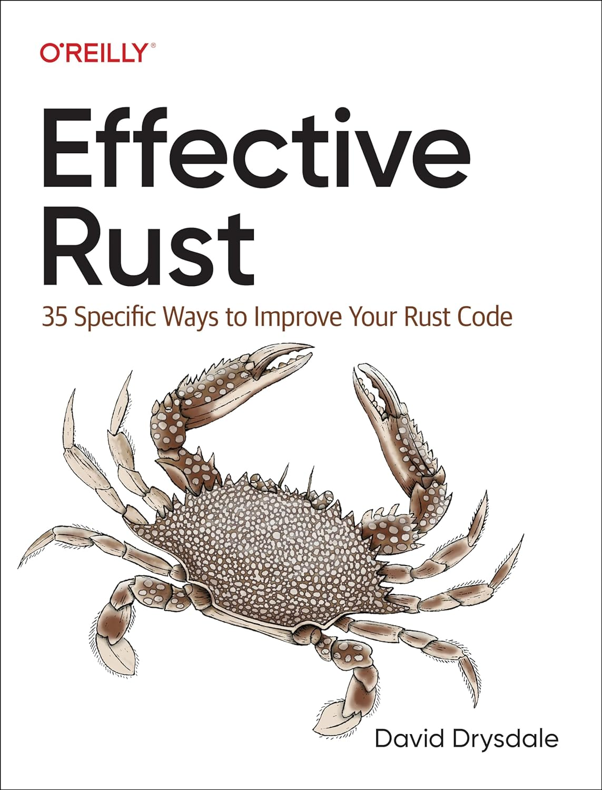

译著
“代码更像是指南，而不是实际的规则。” —— Hector Barbossa
在编程语言的江湖中，Rust 如同一颗新星，以其独树一帜的安全特性和严谨的类型系统，赢得了开发者的青睐。
近日，一本备受瞩目的新书《Effective Rust》横空出世，它不仅为我们揭示了 Rust 编程的深层智慧，还提供了实用的实战技巧。
本文将从这本书的精彩引言出发，带你领略 Rust 的优势与挑战，并预告将持续翻译分享，为读者带来 Rust 编程的全面解析。
《Effective Rust》引言简述
全书由六个部分组成：
- 类型：围绕 Rust 核心类型系统的建议。
- 概念：构成 Rust 设计核心思想的建议。
- 依赖关系：关于使用 Rust 包生态系统的建议。
- 工具：关于如何通过超越 Rust 编译器来改进代码库的建议。
- 异步Rust：关于使用 Rust 异步机制的建议。
- 超越标准Rust：关于在超出 Rust 标准、安全环境时，如何工作的建议。
尽管“概念”部分可以说是比“类型”部分更基础，但它故意排在第二位，以便从开始到结束阅读的读者可以首先建立一些信心。
Rust 的优势：安全的护城河与强大的类型系统
- 安全性：Rust 在类型安全和内存安全方面的卓越表现，使其在编译阶段就能抵御大量潜在的错误。这与 C++ 等语言相比，无疑是 Rust 的一大亮点。
- 类型系统：Rust 的类型系统不仅强大，而且一致，这让 Rust 程序在编译时就能捕捉到更多的错误。一个能够顺利编译的 Rust 程序，往往已经具备了较高的稳定性。
Rust 的挑战：攀登学习高峰与编译器的较量
- 学习曲线：Rust 的生命周期、所有权和借用等概念，对于初学者来说，可能是一道难以逾越的门槛。然而，一旦掌握，这些概念将成为开发者手中的强大工具。
- 编译器斗争：尽管 Rust 编译器提供了丰富的错误诊断信息，但在与借用检查器的较量中，开发者仍需付出大量的时间和精力。这也是 Rust 编程的一大考验。
《Effective Rust》的启示：实战的蓝图与 Rust 生态的探索
- 实战蓝图：《Effective Rust》一书如同一位经验丰富的向导，提供了许多关于 Rust 编程的实战技巧，这些技巧将帮助开发者更好地应对编程中的各种挑战。
- Rust 生态探索：书中还介绍了 Rust 的包生态系统和工具链，这将有助于开发者更好地利用社区资源，提升开发效率。
结论
《Effective Rust》的问世，不仅为 Rust 爱好者带来了一场知识的盛宴，也为广大开发者提供了一把开启 Rust 编程之门的钥匙。
Rust 以其安全性和类型系统，在编程语言的世界中独领风骚。虽然面临学习曲线和编译器斗争等挑战，但 Rust 的优势使其成为值得每一位开发者投入时间和精力的语言。
通过持续翻译分享《Effective Rust》，我们将一起深入 Rust 的世界，掌握 Rust 编程的精髓，为未来的软件开发铺就一条坚实的道路。
引言
“代码更像是‘指导原则’，而不是实际规则。” —— 赫克托·巴博萨
在众多现代编程语言的拥挤景观中，Rust 与众不同。Rust 提供了编译语言的速度，非垃圾回收语言的高效，以及函数式语言的类型安全 —— 同时还提供了解决内存安全问题的独特方案。因此，Rust 经常被评为最受欢迎的编程语言。
Rust 的类型系统的强大和一致性意味着，如果一个 Rust 程序能够编译，那么它已经有一个不错的机会可以正常工作 —— 这种现象之前只在更学术、更不亲民的语方中观察到，如 Haskell。如果一个 Rust 程序能够编译，它也将安全地工作。
然而，这种安全 —— 包括类型安全和内存安全 —— 确实是有代价的。尽管基本文档的质量很高，Rust 还是因为入门坡度陡峭而闻名，新来者必须经历与借用检查器的斗争、重新设计数据结构以及被生命周期搞糊涂的入门仪式。一个能够编译的 Rust 程序可能第一次就有很大的机会正常工作，但是为了让它编译的斗争是真实的 —— 即使 Rust 编译器的错误诊断非常有帮助。
本书面向的读者
这本书试图帮助程序员在这些他们挣扎的领域，即使他们已经具有像 C++ 这样的现有编译语言的经验。因此，与其他 Effective
然而，Rust 的安全性导致这里的条目有一些不同的侧重点，特别是与 Scott Meyers 的原始 Effective C++ 系列相比。C++ 语言充满了陷阱，所以 Effective C++ 专注于避免这些陷阱的一组建议，这些建议基于在 C++ 中创建软件的实际经验。重要的是，它包含的是指导原则而不是规则，因为指导原则有例外 —— 提供指导原则的详细理由允许读者自行决定他们的特定情况是否值得违反规则。
在这里，提供建议及其原因的风格被保留了下来。但是，由于 Rust 几乎没有陷阱，这里的条目更多地集中在 Rust 引入的概念上。许多条目的标题像“理解…”和“熟悉自己了解…”，并帮助在编写流畅、地道的 Rust 代码的旅程中。
Rust 的安全性也导致完全没有标题为“永远不要…”的条目。如果你真的不应该做某事，编译器通常会阻止你这样做。
Rust 版本
文本是为2018版的 Rust 编写的，使用稳定工具链。Rust 的后向兼容性承诺意味着任何更高版本的 Rust，包括2021版，仍然会支持为2018版编写的代码，即使那个更高版本引入了破坏性更改。Rust 现在也足够稳定，以至于2018版和2021版之间的差异很小；书中没有任何代码需要更改才能符合2021版（但是第19条包括一个例外，其中较晚版本的 Rust 允许以前不可能的新行为）。
这里的条目没有涵盖 Rust 的任何异步功能方面，因为这涉及到更高级的概念和不那么稳定的工具链支持 —— 使用同步 Rust 已经有足够多的内容要介绍了。也许将来会出现一本《有效的异步Rust》…
用于代码片段和错误信息的具体 rustc 版本是 1.70。代码片段不太可能需要针对更高版本进行更改，但错误消息可能会因你特定的编译器版本而有所不同。包含在文本中的错误消息也已经手动编辑，以适应书的宽度限制，但除此之外都是编译器生成的。
文本中有许多对其他静态类型语言的引用和比较，如 Java、Go 和 C++，以帮助有这些语言经验的读者定位自己。（ C++ 可能是最接近等价的语言，特别是当 C++11 的移动语义发挥作用时。）
本书导读
本书的章节构成分为六章：
- 第一章 —— 类型：围绕 Rust 核心类型系统的建议
- 第二章 —— 特征：关于使用 Rust 特征的建议
- 第三章 —— 概念：构成 Rust 设计核心思想的观念
- 第四章 —— 依赖性：关于使用 Rust 包生态系统的建议
- 第五章 —— 工具：通过超越 Rust 编译器来改进代码库的建议
- 第六章 —— 超越标准 Rust：当您需要在 Rust 标准、安全环境之外工作时，给出的建议
虽然“概念”章节可能比“类型”和“特征”章节更为基础，但它故意放在书的后面，以便从头到尾阅读的读者可以首先建立一些信心。
本书中使用的约定
本书使用了以下排版约定：
- 斜体：表示新术语、URL、电子邮件地址、文件名和文件扩展名。
- 固定宽度：用于程序列表，以及在段落中引用程序元素，如变量或函数名、数据库、数据类型、环境变量、语句和关键字。
以下标记用于标识以某种方式不正确的代码。
| Ferris | 含义 |
|---|---|
| 这段代码无法编译！ | |
| 这段代码没有产生期望的行为。 |
致谢
我要感谢那些帮助使这本书成为可能的人们：
-
技术审阅者们对文本的所有方面提供了专业和详细的反馈：Pietro Albini, Jess Males, Mike Capp，尤其是Carol Nichols。
-
我在O'Reilly的编辑们：Jeff Bleiel, Brian Guerin, 和 Katie Tozer。
-
Tiziano Santoro，我从他那里最初学到了许多关于Rust的知识。
-
Danny Elfanbaum，他提供了处理书籍AsciiDoc格式化的重要技术支持。
-
原始网络版书籍的勤奋读者们，特别是：
- Julian Rosse，他在在线文本中发现了数十个拼写错误和其他错误。
- Martin Disch，他指出了多个条目中可能的改进和不准确之处。
- Chris Fleetwood, Sergey Kaunov, Clifford Matthews, Remo Senekowitsch, Kirill Zaborsky，以及一位匿名Proton Mail用户，他们指出了文本中的错误。
-
我的家人，他们忍受了许多我因写作而分心的周末。
原文点这里查看
类型
这本书的第一部分涵盖了关于 Rust 类型系统的建议。Rust 的类型系统比其他主流语言的表达能力更强；它与“学术性”语言如 OCaml 或 Haskell 有更多共同点。
其中核心的一部分是 Rust 的枚举类型（enum），它比其他语言中的枚举类型具有更强的表达能力，并且允许使用代数数据类型。
Rust 类型系统的另一个核心支柱是特征（trait）类型。特征大致等同于其他语言中的接口类型，但它们也与 Rust 的 泛型（第12条）相关联，允许在不产生运行时开销的情况下重用接口。
第 1 条：使用类型系统表达你的数据结构
“谁叫他们是程序员，而不是打字员” —— @thingskatedid
对于来自其他静态类型编程语言（如 C++、Go 或 Java）的人来说，Rust 类型系统的基本概念是非常熟悉的。有一系列具有特定大小的整数类型，包括有符号（i8, i16, i32, i64, i128）和无符号（u8, u16, u32, u64, u128）。
还有两种整数类型，其大小与目标系统上的指针大小匹配：有符号（isize）和无符号（usize）。Rust 并不是那种会在指针和整数之间进行大量转换的语言，所以这种特性并不是特别相关。然而，标准集合返回它们的大小作为一个 usize（来自 .len()），所以集合索引意味着 usize 值非常常见 —— 从容量的角度来看，这是显然没有问题的，因为内存中的集合不可能有比系统上的内存地址更多的项。
整数类型确实让我们第一次意识到 Rust 是一个比 C++ 更严格的世界 —— 尝试将一个 quart（i32）放入 pint pot（i16）会在编译时产生错误。
#![allow(unused)] fn main() { let x: i32 = 42; let y: i16 = x; }
#![allow(unused)] fn main() { error[E0308]: mismatched types --> use-types/src/main.rs:14:22 | 14 | let y: i16 = x; | --- ^ expected `i16`, found `i32` | | | expected due to this | help: you can convert an `i32` to an `i16` and panic if the converted value doesn't fit | 14 | let y: i16 = x.try_into().unwrap(); | ++++++++++++++++++++ }
这让人感到安心：当程序员进行有风险的操作时，Rust 不会安静地坐视不管。这也早早地表明，尽管 Rust 有更严格的规则，但它也有助于编译器消息指向如何遵守规则的方法。
建议的解决方案是抛出一个问题，即如何处理转换会改变值的情况，关于错误处理（第4条）和使用 panic!（第18条）我们将在后面有更多的讨论。
Rust 也不允许一些可能看起来“安全”的操作：
#![allow(unused)] fn main() { let x = 42i32; // Integer literal with type suffix let y: i64 = x; }
#![allow(unused)] fn main() { error[E0308]: mismatched types --> use-types/src/main.rs:23:22 | 23 | let y: i64 = x; | --- ^ expected `i64`, found `i32` | | | expected due to this | help: you can convert an `i32` to an `i64` | 23 | let y: i64 = x.into(); | +++++++ }
在这里，建议的解决方案并没有提出错误处理的方法，但转换仍然需要是显式的。我们将在后面章节更详细地讨论类型转换（第6条）。
现在继续探讨不出乎意料的原始类型，Rust 有布尔类型（bool）、浮点类型（f32, f64）和单元类型 ()（类似于 C 的 void）。
更有趣的是 char 字符类型，它持有一个 Unicode 值（类似于 Go 的 rune 类型）。尽管它在内部以 4 字节存储，但与 32 位整数的转换仍然不会有静默转换。
类型系统中的这种精确性迫使你明确地表达你想要表达的内容 —— u32 值与 char 不同，后者又与序列 UTF-8 字节不同，这又与序列任意字节不同，而且需要你准确地指定你的意思1。Joel Spolsky 的著名博客文章可以帮助你理解需要哪种类型。
当然，有一些辅助方法允许你在这不同的类型之间进行转换，但它们的签名迫使你处理（或明确忽略）失败的可能性。例如，一个 Unicode 代码点2 总是可以用 32 位表示，所以 'a' as u32 是允许的，但反向转换就比较复杂了（因为有些 u32 值不是有效的 Unicode 代码点），例如：
- char::from_u32 返回一个
Option<char>，迫使调用者处理失败的情况 - char::from_u32_unchecked 假设有效性，但由于结果是未定义的，因此被标记为
unsafe，迫使调用者也使用unsafe（第16条）。
聚合类型
继续讨论聚合类型，Rust 有：
- 数组（
Arrays），它们持有单个类型的多个实例，实例的数量在编译时已知。例如[u32; 4]是四个连续的 4 字节整数。 - 元组（
Tuples），它们持有多个异构类型的实例，元素的数量和类型在编译时已知，例如(WidgetOffset, WidgetSize, WidgetColour)。如果元组中的类型不够独特 —— 例如(i32, i32, &'static str, bool)—— 最好给每个元素命名并使用 … - 结构体（
Structs），它们也持有编译时已知的异构类型实例，但是允许通过名称来引用整个类型和各个字段。 - 元组结构体（
Tuple structs）是结构体和元组的杂交体：整个类型有一个名称，但各个字段没有名称 —— 它们通过数字来引用：s.0,s.1等。
#![allow(unused)] fn main() { struct TextMatch(usize, String); let m = TextMatch(12, "needle".to_owned()); assert_eq!(m.0, 12); }
这让我们来到了 Rust 类型系统的皇冠上的宝石：枚举（enum）。
在其基本形式中，很难看出有什么值得兴奋的。与其他语言一样，枚举允许你指定一组互斥的值，可能附带一个数字或字符串值。
#![allow(unused)] fn main() { enum HttpResultCode { Ok = 200, NotFound = 404, Teapot = 418, } let code = HttpResultCode::NotFound; assert_eq!(code as i32, 404); }
因为每个枚举定义都创建了一个独特的类型，这可以用来提高那些接受布尔参数的函数的可读性和可维护性。例如：
#![allow(unused)] fn main() { print_page(/* both_sides= */ true, /* colour= */ false); }
可以用 enum 替换：
#![allow(unused)] fn main() { pub enum Sides { Both, Single, } pub enum Output { BlackAndWhite, Colour, } pub fn print_page(sides: Sides, colour: Output) { // ... } }
在调用处更加类型安全，而且易于阅读：
#![allow(unused)] fn main() { print_page(Sides::Both, Output::BlackAndWhite); }
不同于布尔版本，如果使用该库的用户不小心颠倒了参数的顺序，编译器会立即报错：
#![allow(unused)] fn main() { error[E0308]: mismatched types --> use-types/src/main.rs:89:20 | 89 | print_page(Output::BlackAndWhite, Sides::Single); | ^^^^^^^^^^^^^^^^^^^^^ expected enum `enums::Sides`, found enum `enums::Output` error[E0308]: mismatched types --> use-types/src/main.rs:89:43 | 89 | print_page(Output::BlackAndWhite, Sides::Single); | ^^^^^^^^^^^^^ expected enum `enums::Output`, found enum `enums::Sides` }
使用新类型模式（第7条）来包装一个
bool也可以实现类型安全和可维护性；如果语义始终是布尔型的，通常最好使用这种方式，如果将来可能会出现新的选择（例如Sides::BothAlternateOrientation），则应使用枚举。
Rust 枚举的类型安全性在 match 表达式中继续体现出以下这段代码无法编译：
#![allow(unused)] fn main() { let msg = match code { HttpResultCode::Ok => "Ok", HttpResultCode::NotFound => "Not found", // forgot to deal with the all-important "I'm a teapot" code }; }
#![allow(unused)] fn main() { error[E0004]: non-exhaustive patterns: `Teapot` not covered --> use-types/src/main.rs:65:25 | 51 | / enum HttpResultCode { 52 | | Ok = 200, 53 | | NotFound = 404, 54 | | Teapot = 418, | | ------ not covered 55 | | } | |_____- `HttpResultCode` defined here ... 65 | let msg = match code { | ^^^^ pattern `Teapot` not covered | = help: ensure that all possible cases are being handled, possibly by adding wildcards or more match arms = note: the matched value is of type `HttpResultCode` }
编译器强制程序员考虑枚举所表示的所有可能性，即使结果只是添加一个默认分支 _ => {}。
注意，现代 C++ 编译器能够并且会对枚举缺失的switch分支发出警告。
带有字段的枚举
Rust枚举特性的真正强大之处在于每个变体都可以携带数据，使其成为一个代数数据类型（ADT）。这对于主流语言的程序员来说不太熟悉；在C/C++的术语中，它类似于枚举与联合的组合 —— 只是类型安全的。
这意味着程序数据结构的不变式可以被编码到 Rust 的类型系统中；不符合那些不变式状态的代码甚至无法编译。一个设计良好的枚举使得创建者的意图对于人类以及编译器都是清晰的：
#![allow(unused)] fn main() { pub enum SchedulerState { Inert, Pending(HashSet<Job>), Running(HashMap<CpuId, Vec<Job>>), } }
仅从类型定义来看，可以合理猜测 Job 在 Pending 状态中排队，直到调度器完全激活，此时它们被分配到某个特定 CPU 的池中。
这突出了本方法的中心主题，即使用 Rust 的类型系统来表达与软件设计相关的概念。
当一个字段或参数何时有效需要通过注释来解释时，这就是一个明显的迹象表明这种情况没有发生：
#![allow(unused)] fn main() { struct DisplayProps { x: u32, y: u32, monochrome: bool, // `fg_colour` must be (0, 0, 0) if `monochrome` is true. fg_colour: RgbColour, } }
这是一个非常适合用带有数据的枚举来替换的结构体：
#![allow(unused)] fn main() { #[derive(Debug)] enum Colour { Monochrome, Foreground(RgbColour), } struct DisplayProperties { x: u32, y: u32, colour: Colour, } }
这个简单的例子说明了一个关键的建议：让你的类型无法表达无效状态。只支持有效值组合的类型意味着整类的错误会被编译器拒绝，从而使得代码更小、更安全。
选项与错误
回到枚举的强大功能，有两个概念非常常见，以至于Rust内置了枚举类型来表达它们。
第一个是Option的概念：要么存在特定类型的值（Some(T)），要么不存在（None）。始终为可能缺失的值使用 Option；永远不要退回到使用哨兵值（-1, nullptr, …）来试图在带内表达相同的概念。
然而，有一个微妙的点需要考虑。如果您处理的是事物的集合，您需要决定集合中没有任何事物是否与没有集合相同。在大多数情况下，这种区别不会出现，您可以继续使用 Vec<Thing>：零个事物意味着事物的缺失。
然而，确实存在其他罕见的情况，需要用 Option<Vec<Thing>> 来区分这两种情况 —— 例如，加密系统可能需要区分“负载单独传输”和“提供空负载”。（这与 SQL 中 NULL 标记列的争论有关。）
一个常见的边缘情况是 String 可能缺失 —— 是用 "" 还是 None 来表示值的缺失更有意义？无论哪种方式都可以，但 Option<String> 清楚地传达了可能缺失该值的可能性。
第二个常见的概念源于错误处理：如果一个函数失败，应该如何报告这个失败？历史上，使用了特殊的哨兵值（例如，Linux 系统调用 的 -errno 返回值）或全局变量（POSIX 系统的errno）。近年来，支持函数返回多个或元组返回值的语言（如Go）可能有一个约定，即返回一个(result, error)对，假设在错误非“零”时，结果存在合适的“零”值。
在Rust中，始终将可能失败的操作的 结果编码为 Result<T, E>。T 类型保存成功的结果（在Ok变体中），E 类型在失败时保存错误详情（在Err变体中）。使用标准类型使得设计意图清晰，并且允许使用标准转换（第3条）和错误处理（第4条）；它还使得使用 ? 运算符来简化错误处理成为可能。
注释
如果涉及到文件系统，情况会更加复杂，因为流行平台上的文件名介于任意字节和 UTF-8 序列之间：请参阅 std::ffi::OsString 文档。
技术上，是一个 Unicode 标量值，而不是代码点。
这也意味着在库中为一个现有枚举添加一个新的变体是一个破坏性的更改（第21条）：库的客户需要更改他们的代码以适应新的变体。如果一个枚举实际上只是一个旧式的值列表，可以通过将其标记为 non_exhaustive 枚举来避免这种行为；请参阅第21条。
原文点这里查看
第 2 条：使用类型系统表达常见行为
第1条讨论了如何在类型系统中表达数据结构；本节继续讨论在 Rust 的类型系统中行为的编码。
方法（ Methods ）
在 Rust 的类型系统中，行为首次出现的地方就是将方法添加到数据结构上：这些方法是对该类型实例的操作，通过 self 标识。这种方式以对象导向的方式将相关的数据和代码封装在一起，这与其他语言中的做法相似；然而，在 Rust 中，方法不仅可以添加到结构体类型上，也可以添加到枚举类型上，这与 Rust 枚举的普遍性质相符（第1条）。
#![allow(unused)] fn main() { enum Shape { Rectangle { width: f64, height: f64 }, Circle { radius: f64 }, } impl Shape { pub fn area(&self) -> f64 { match self { Shape::Rectangle { width, height } => width * height, Shape::Circle { radius } => std::f64::consts::PI * radius * radius, } } } }
方法的名称为其编码的行为提供了一个标签，而方法签名提供了其输入和输出的类型信息。方法的第一个输入是 self 的某种变体，指示该方法可能对数据结构执行的操作：
&self参数表示可以从数据结构中读取内容，但不会修改它。&mut self参数表示该方法可能会修改数据结构的内容。self参数表示该方法会消耗数据结构。
抽象行为
调用方法总是会导致相同的代码被执行；从一次调用到下一次调用所改变的一切就是方法操作的数据。这涵盖了许多可能的情况，但是如果在运行时需要代码发生变化呢？
Rust 在其类型系统中包括了几个特性来适应这种情况，本节将探讨这些特性。
函数指针
最简单的行为抽象是函数指针：一个仅指向某些代码的指针，其类型反映了函数的签名。类型在编译时进行检查，所以到程序运行时，这个值只是指针的大小。
#![allow(unused)] fn main() { fn sum(x: i32, y: i32) -> i32 { x + y } // Explicit coercion to `fn` type is required... let op: fn(i32, i32) -> i32 = sum; }
函数指针没有与之关联的其他数据，因此，可以以各种方式将它们视为值：
#![allow(unused)] fn main() { // `fn` types implement `Copy` let op1 = op; let op2 = op; // `fn` types implement `Eq` assert!(op1 == op2); // `fn` implements `std::fmt::Pointer`, used by the {:p} format specifier. println!("op = {:p}", op); // Example output: "op = 0x101e9aeb0" }
一个需要注意的技术细节：需要显式地将函数强制转换为
fn类型，因为仅仅使用函数的名称并不能得到fn类型的值；
这段代码无法编译！
#![allow(unused)] fn main() { let op1 = sum; let op2 = sum; // Both op1 and op2 are of a type that cannot be named in user code, // and this internal type does not implement `Eq`. assert!(op1 == op2); }
#![allow(unused)] fn main() { error[E0369]: binary operation `==` cannot be applied to type `fn(i32, i32) -> i32 {main::sum}` --> use-types-behaviour/src/main.rs:117:21 | 117 | assert!(op1 == op2); | --- ^^ --- fn(i32, i32) -> i32 {main::sum} | | | fn(i32, i32) -> i32 {main::sum} | help: you might have forgotten to call this function | 117 | assert!(op1( /* arguments */ ) == op2); | +++++++++++++++++++ help: you might have forgotten to call this function | 117 | assert!(op1 == op2( /* arguments */ )); | +++++++++++++++++++ }
相反，编译器错误表明类型类似于 fn(i32, i32) -> i32 {main::sum}，这是一种完全内部于编译器的类型（即不能在用户代码中编写），它同时标识了特定的函数及其签名。
换句话说，sum 的类型既编码了函数的签名又编码了其位置（出于优化原因）；这种类型可以自动强制转换为 fn 类型（第6条）。
闭包
裸函数指针的使用是有限的，因为被调用函数唯一可以使用的输入是那些明确作为参数值传递的内容。
例如，考虑一些使用函数指针修改切片中每个元素的代码。
#![allow(unused)] fn main() { // In real code, an `Iterator` method would be more appropriate. pub fn modify_all(data: &mut [u32], mutator: fn(u32) -> u32) { for value in data { *value = mutator(*value); } } }
这对于对切片进行简单的修改是有效的：
#![allow(unused)] fn main() { fn add2(v: u32) -> u32 { v + 2 } let mut data = vec![1, 2, 3]; modify_all(&mut data, add2); assert_eq!(data, vec![3, 4, 5,]); }
然而，如果修改依赖于任何额外的状态，那么无法隐式地将这些状态传递给函数指针。
这段代码无法编译！
#![allow(unused)] fn main() { let amount_to_add = 3; fn add_n(v: u32) -> u32 { v + amount_to_add } let mut data = vec![1, 2, 3]; modify_all(&mut data, add_n); assert_eq!(data, vec![3, 4, 5,]); }
#![allow(unused)] fn main() { error[E0434]: can't capture dynamic environment in a fn item --> use-types-behaviour/src/main.rs:142:17 | 142 | v + amount_to_add | ^^^^^^^^^^^^^ | = help: use the `|| { ... }` closure form instead }
错误信息指向了正确的工具：闭包。闭包是一段看起来像函数定义体（lambda 表达式）的代码，不同之处在于：
- 它可以作为表达式的一部分构建，因此，不需要与一个名称相关联
- 输入参数以竖线
|param1, param2|给出（它们的关联类型通常可以由编译器自动推导） - 它可以捕获其周围环境的一部分。
#![allow(unused)] fn main() { let amount_to_add = 3; let add_n = |y| { // a closure capturing `amount_to_add` y + amount_to_add }; let z = add_n(5); assert_eq!(z, 8); }
为了（大致）理解捕获是如何工作的，可以想象编译器创建了一个一次性的、内部的类型，它包含了 lambda 表达式中提到的环境所有部分。当闭包被创建时，这个临时类型的一个实例被创建来保存相关的值，当闭包被调用时，这个实例被用作额外的上下文。
#![allow(unused)] fn main() { let amount_to_add = 3; // *Rough* equivalent to a capturing closure. struct InternalContext<'a> { // references to captured variables amount_to_add: &'a u32, } impl<'a> InternalContext<'a> { fn internal_op(&self, y: u32) -> u32 { // body of the lambda expression y + *self.amount_to_add } } let add_n = InternalContext { amount_to_add: &amount_to_add, }; let z = add_n.internal_op(5); assert_eq!(z, 8); }
在这个概念性的上下文中持有的值通常是引用（第9条），就像这里的例子，但它们也可以是环境中事物的可变引用，或者是通过在输入参数前使用 move 关键字而从环境中完全移出的值。
回到 modify_all 的例子，闭包不能用在期望函数指针的地方。
#![allow(unused)] fn main() { error[E0308]: mismatched types --> use-types-behaviour/src/main.rs:165:31 | 165 | modify_all(&mut data, |y| y + amount_to_add); | ^^^^^^^^^^^^^^^^^^^^^ expected fn pointer, found closure | = note: expected fn pointer `fn(u32) -> u32` found closure `[closure@use-types-behaviour/src/main.rs:165:31: 165:52]` note: closures can only be coerced to `fn` types if they do not capture any variables --> use-types-behaviour/src/main.rs:165:39 | 165 | modify_all(&mut data, |y| y + amount_to_add); | ^^^^^^^^^^^^^ `amount_to_add` captured here }
相反，接收闭包的代码必须接受一个实现了 Fn* 特征的实例。
#![allow(unused)] fn main() { pub fn modify_all<F>(data: &mut [u32], mut mutator: F) where F: FnMut(u32) -> u32, { for value in data { *value = mutator(*value); } } }
Rust 有三种不同的 Fn* 特征，它们之间表达了关于环境捕获行为的一些区别。
FnOnce描述了一个只能被调用一次的闭包。如果闭包的环境中有部分被移动到闭包内，那么这种移动只能发生一次 —— 因为源项没有其他副本可以移动 —— 因此，闭包只能被调用一次。FnMut描述了一个可以被多次调用的闭包，它能够改变其环境，因为它会可变地借用环境。Fn描述了一个可以被多次调用的闭包，它只从环境中不可变地借用值。
编译器会为代码中的任何 lambda 表达式自动实现这些 Fn* 特征的适当子集；不可能手动实现这些特征中的任何一个1（与 C++ 的 operator() 重载不同）。
回到上面关于闭包的粗略心理模型，编译器自动实现的特征大致对应于捕获的环境上下文是否具有：
FnOnce: 任何被移动的值FnMut: 任何对值的可变引用（&mut T）Fn: 只是对值的普通引用（&T）。
上面列表中的后两个特征各自具有前一个特征的特征约束，当你考虑使用闭包时，这是有意义的。
- 如果某事物只期望调用一次闭包（通过接收
FnOnce表示），那么传递给它一个能够被多次调用的闭包（FnMut）是可以的。 - 如果某事物期望重复调用一个可能改变其环境的闭包（通过接收
FnMut表示），那么传递给它一个不需要改变其环境的闭包（Fn）是可以的。
裸函数指针类型 fn 也名义上属于这个列表的末尾；任何（非不安全的）fn 类型自动实现所有 Fn* 特征，因为它不借用任何环境。
因此，在编写接受闭包的代码时，使用最通用的 Fn* 特征，以允许调用者最大的灵活性 —— 例如，对于只使用一次的闭包，接受 FnOnce。同样的推理也导致了建议优先使用 Fn* 特征约束而不是裸函数指针（fn）。
特征（Traits）
Fn* 特征比裸函数指针更灵活，但它们仍然只能描述单个函数的行为，并且只能在函数签名的基础上描述。
然而，它们本身就是 Rust 类型系统中描述行为的另一种机制的例子，即特征。特征定义了一组相关的方法，这些方法由一些底层项公开提供。特征中的每个方法也有一个名称，这允许编译器区分具有相同签名的方法，更重要的是，它允许程序员推断方法的目的。
Rust 的特征大致类似于 Go 和 Java 中的“接口”，或者 C++ 中的“抽象类”（所有虚拟方法，没有数据成员）。特征的实施必须提供所有方法（但请注意特征定义可以包括默认实现，第13条），并且还可以有相关联的数据，那些实现会使用这些数据。这意味着代码和数据在共同的抽象中以某种面向对象的方式一起封装。
接受结构体并调用其方法的代码被限制只能与特定类型一起工作。如果有多个类型实现了公共行为，那么定义一个特征来封装这种行为，并让代码使用特征的方法而不是特定结构体的方法会更加灵活。
这导致了与其他受面向对象2影响的语言相同的建议：如果预期未来需要灵活性，请优先接受特征类型而不是具体类型。
有时，你希望在某些行为中使用类型系统来区分，但这些行为无法表达为特征定义中的特定方法签名。例如，考虑一个用于排序集合的特征；一个实现可能是稳定的（比较相同的元素在排序前后的顺序不变），但没有办法在排序方法参数中表达这一点。
在这种情况下，使用标记特征（marker trait）在类型系统中跟踪这个要求仍然是值得的。
#![allow(unused)] fn main() { pub trait Sort { /// Re-arrange contents into sorted order. fn sort(&mut self); } /// Marker trait to indicate that a [`Sortable`] sorts stably. pub trait StableSort: Sort {} }
标记特征（marker trait）没有方法，但实现仍然需要声明它正在实现该特征 —— 这被视为实现者的承诺：“我庄严宣誓，我的实现在稳定排序。”依赖于稳定排序的代码可以指定 StableSort 特征约束，依赖荣誉制度来保持其不变量。使用标记特征来区分无法在特征方法签名中表达的行为。
一旦行为被封装到 Rust 的类型系统中作为一个特征，它可以以两种方式被使用：
- 作为特征约束（
trait bound），它在编译时限制了哪些类型可以接受一个泛型数据类型或方法，或者 - 作为特征对象（
trait object），它在运行时限制了哪些类型可以存储或传递给一个方法。 第12条 更详细地讨论了这两种方式的权衡。
特征约束表明，当某个类型 T 实现了某个特定特征时，参数化为该类型 T 的泛型代码才能被使用。特征约束的存在意味着泛型的实现可以使用来自该特征的方法，确信编译器将确保任何可以编译的 T 确实具有那些方法。这种检查发生在编译时，当泛型被单态化（Rust 对 C++ 中所谓的“模板实例化”的术语）。
对目标类型 T 的这种限制是明确的，编码在特征约束中：只有满足特征约束的类型才能实现该特征。这与 C++ 中的等价情况形成对比，在 C++ 中，template<typename T> 中使用的类型 T 的约束是隐式的3：C++ 模板代码仍然只有在所有引用的方法在编译时都可用时才会编译，但检查纯粹基于方法和签名。（这种“鸭子类型”可能导致混淆；一个使用 t.pop() 的 C++ 模板可能为 Stack 或 Balloon 的 T 类型参数编译 —— 这不太可能是期望的行为。）
对显式特征约束的需求也意味着大部分泛型使用特征约束。要了解为什么会这样，反过来考虑一下在没有 T 的特征约束的情况下 struct Thing<T> 可以做什么。没有特征约束，Thing 只能执行适用于任何类型 T 的操作；这允许容器、集合和智能指针，但除此之外并不多。任何使用类型 T 的东西都需要一个特征约束。
#![allow(unused)] fn main() { pub fn dump_sorted<T>(mut collection: T) where T: Sort + IntoIterator, T::Item: Debug, { // Next line requires `T: Sort` trait bound. collection.sort(); // Next line requires `T: IntoIterator` trait bound. for item in collection { // Next line requires `T::Item : Debug` trait bound println!("{:?}", item); } } }
因此，这里的建议是使用特征约束来表达对泛型中使用的类型的要求，但这很容易遵循 —— 编译器将迫使你遵守它。
特征对象是利用特征定义的封装的另一种方式，但在这里，不同的特征实现是在运行时而不是编译时选择的。这种动态分派类似于 C++ 中虚拟函数的使用，在底层，Rust 有 'vtable' 对象，它们与 C++ 中的类似。
特征对象的这种动态方面也意味着它们必须始终通过间接方式处理，通过引用（&dyn Trait）或指针（Box<dyn Trait>）。这是因为实现特征的对象大小在编译时是未知的 —— 它可能是一个巨大的结构体或一个微小的枚举 —— 因此无法为裸特征对象分配正确数量的空间。
类似的问题意味着用作特征对象的特征不能有返回 Self 类型的方法，因为预先编译的代码使用特征对象时将无法知道 Self 可能有多大。
具有泛型方法 fn method<T>(t:T) 的特征允许存在无限数量的实现方法，适用于所有可能存在的不同类型 T。这对于用作特征约束的特征来说是可行的，因为无限集合的可能的泛型方法在编译时变为有限的实际调用的泛型方法集合。对于特征对象来说，情况并非如此：编译时可用的代码必须应对运行时可能出现的所有可能的 Ts。（因此trait中不能添加泛型方法，尽管有约束，可以满足约束的类型永远会是无数个）
#![allow(unused)] fn main() { trait foo { fn method<T>(&self, t: T); } struct Bar; impl Bar { fn new() -> Self { Self {} } } impl foo for Bar { fn method<T>(&self, t: T) { println!("Bar impl trait foo!"); } } #[cfg(test)] mod tests { use super::*; use std::collections::hash_map::VacantEntry; #[test] fn as_trait_bound() { let bar = Bar::new(); bar.method(0u8); } #[test] fn as_trait_obj() { let bar = Bar::new(); let mut v: Vec<&dyn foo> = vec![]; v.push(&bar); } } }
fn as_trait_bound() 测试可以通过，没有错误。但是as_trait_obj()会报错：
#![allow(unused)] fn main() { error[E0038]: the trait `foo` cannot be made into an object --> src/lib.rs:33:20 | 33 | let mut v: Vec<&dyn foo> = vec![]; | ^^^^^^^^^^^^^ `foo` cannot be made into an object | note: for a trait to be "object safe" it needs to allow building a vtable to allow the call to be resolvable dynamically; for more information visit <https://doc.rust-lang.org/reference/items/traits.html#object-safety> --> src/lib.rs:2:8 | 1 | trait foo { | --- this trait cannot be made into an object... 2 | fn method<T>(&self, t: T); | ^^^^^^ ...because method `method` has generic type parameters = help: consider moving `method` to another trait = help: only type `Bar` implements the trait, consider using it directly instead }
这两个限制 —— 不能返回 Self 和不能有泛型方法 —— 结合成了对象安全的概念。只有对象安全的特征才能用作特征对象。
注释
至少，在撰写本文时的稳定 Rust 中是这样。实验性功能 unboxed_closures 和 fn_traits 可能在未来改变这一点。
例如，Effective Java 第64条：通过它们的接口引用对象
C++20 中添加的概念允许对模板类型上的约束进行显式指定，但检查仍然只在模板实例化时执行，而不是在声明时执行。
原文点这里查看
第 3 条：避免匹配 Option 和 Result
第1条 阐述了枚举（enum）的优点，并展示了 match 表达式如何强制程序员考虑所有可能性；这个方法探讨了在某些情况下，你应尽量避免使用 match 表达式 —— 至少是显式地。
第1条 还介绍了 Rust 标准库提供的两个无处不在的枚举：
Option<T>，表示一个值（类型为T）可能存在也可能不存在。Result<T, E>，用于当尝试返回一个值（类型为T）的操作可能失败，并可能返回一个错误（类型为E）。
对于这些特定的枚举，显式使用 match 通常会导致代码比实际需要的不够紧凑，而且不符合 Rust 的习惯用法。
第一种不需要使用 match 的情况是，当只关心值本身，而值的缺失（以及任何相关的错误）可以被忽略时。
#![allow(unused)] fn main() { struct S { field: Option<i32>, } let s = S { field: Some(42) }; match &s.field { Some(i) => println!("field is {}", i), None => {} } }
对于这种情况，使用 if let 表达式可以缩短一行代码，而且更重要的是，它的表达更清晰：
#![allow(unused)] fn main() { if let Some(i) = &s.field { println!("field is {}", i); } }
然而，大多数时候，值的缺失以及相关的错误是程序员必须处理的问题。设计软件以应对失败路径是困难的，大多数情况下这是无法通过语法支持减少的固有复杂性 —— 特别是，决定如果操作失败应该发生什么。
在某些情况下，正确的决定是执行一种鸵鸟策略，明确不处理失败。如果使用显式的 match 来这样做，会显得不必要的冗长：
#![allow(unused)] fn main() { let result = std::fs::File::open("/etc/passwd"); let f = match result { Ok(f) => f, Err(_e) => panic!("Failed to open /etc/passwd!"), }; }
尽管如此，要明确一点：这些辅助函数仍然会引发 panic!，所以选择使用它们与选择直接 panic!（第18条）是一样的。
然而，在许多情况下，正确的错误处理决策是将决策推迟给其他人。这在编写库时尤其正确，因为库的代码可能会在库作者无法预见的各种不同环境中使用。为了使其他人的工作更容易，即使这可能涉及不同错误类型之间的转换（第4条），也更倾向于使用 Result 而不是 Option。
Result 也有一个 [#must_use] 属性，用来引导库用户朝着正确的方向前进 —— 如果使用返回的 Result 的代码忽略了它，编译器将生成一个警告：
#![allow(unused)] fn main() { warning: unused `Result` that must be used --> transform/src/main.rs:32:5 | 32 | f.set_len(0); // Truncate the file | ^^^^^^^^^^^^^ | = note: `#[warn(unused_must_use)]` on by default = note: this `Result` may be an `Err` variant, which should be handled }
显式使用 match 可以让错误传播，但代价是增加了一些可见的样板代码（让人联想到 Go 语言）：
#![allow(unused)] fn main() { pub fn find_user(username: &str) -> Result<UserId, std::io::Error> { let f = match std::fs::File::open("/etc/passwd") { Ok(f) => f, Err(e) => return Err(e), }; // ... } }
减少样板代码的关键是 Rust 的问号运算符 ?。这个语法糖可以处理匹配 Err 分支和返回 Err(...) 表达式，只用一个字符就完成了：
#![allow(unused)] fn main() { pub fn find_user(username: &str) -> Result<UserId, std::io::Error> { let f = std::fs::File::open("/etc/passwd")?; // ... } }
Rust 新手有时会对此感到困惑：问号运算符在一开始很难被注意到，导致人们怀疑这段代码怎么可能正常工作。然而，即使只有一个字符，类型系统仍然在起作用，确保覆盖了相关类型（第1条）表达的所有可能性——让程序员可以专注于主线代码路径，不受干扰。
更重要的是，这些明显的方法调用通常没有额外的成本：它们都是标记为 #[inline] 的泛型函数，所以生成的代码通常会编译成与手动版本相同的机器代码。
这两个因素结合起来意味着你应该优先使用 Option 和 Result 转换，而不是显式的 match 表达式。
在之前的例子中，错误类型是一致的：内部和外部方法都使用 std::io::Error 表达错误。然而，情况往往并非如此；一个函数可能从各种不同的子库中累积错误，每个子库都使用不同的错误类型。
关于错误映射的讨论一般见第4条；现在，只需知道一个手动映射：
#![allow(unused)] fn main() { pub fn find_user(username: &str) -> Result<UserId, String> { let f = match std::fs::File::open("/etc/passwd") { Ok(f) => f, Err(e) => { return Err(format!("Failed to open password file: {:?}", e)) } }; // ... } }
可以使用更简洁、更符合 Rust 语法的 .map_err() 转换来表达：
#![allow(unused)] fn main() { pub fn find_user(username: &str) -> Result<UserId, String> { let f = std::fs::File::open("/etc/passwd") .map_err(|e| format!("Failed to open password file: {:?}", e))?; // ... } }
更好的是，甚至这可能也不必要 —— 如果外部错误类型可以通过实现标准特征 From（第5条）从内部错误类型创建，那么编译器将自动执行转换，无需调用 .map_err()。
这类转换具有更广泛的通用性。问号运算符是一个强大的工具；使用 Option 和 Result 类型上的转换方法将它们调整到可以顺利处理的形态。
标准库提供了各种各样的转换方法来实现这一点，如下面的地图所示。根据第18条，可能引发 panic! 的方法用红色突出显示。
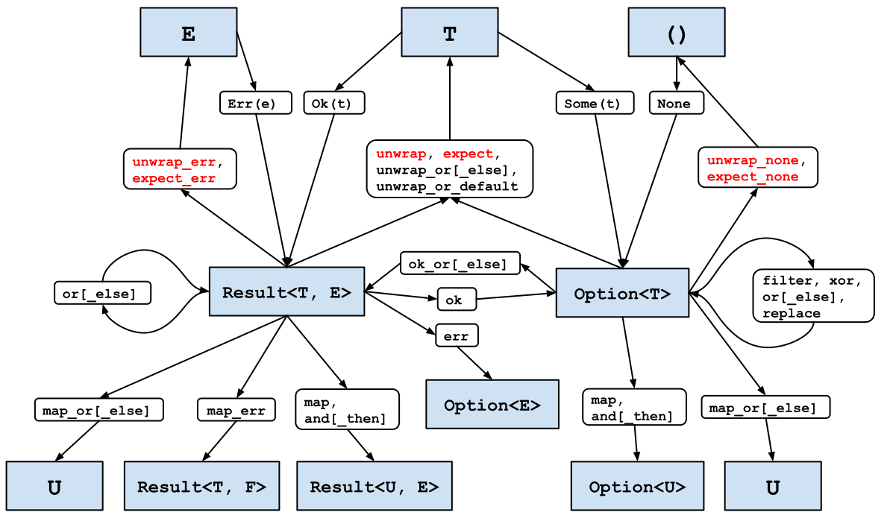
（此图的在线版本可点击：每个框都会链接到相关文档。）
图中未涵盖的一种常见情况是处理引用。例如，考虑一个可能包含一些数据的结构。
#![allow(unused)] fn main() { struct InputData { payload: Option<Vec<u8>>, } }
这个结构上的一个方法尝试将有效载荷传递给一个加密函数，该函数的签名是 (&[u8]) -> Vec<u8>，如果简单地尝试获取一个引用，则会失败：
#![allow(unused)] fn main() { impl InputData { pub fn encrypted(&self) -> Vec<u8> { encrypt(&self.payload.unwrap_or(vec![])) } } }
#![allow(unused)] fn main() { error[E0507]: cannot move out of `self.payload` which is behind a shared reference --> transform/src/main.rs:62:22 | 62 | encrypt(&self.payload.unwrap_or(vec![])) | ^^^^^^^^^^^^ move occurs because `self.payload` has type `Option<Vec<u8>>`, which does not implement the `Copy` trait | help: consider borrowing the `Option`'s content | 62 | encrypt(&self.payload.as_ref().unwrap_or(vec![])) | +++++++++ }
错误消息准确地描述了使代码工作所需的内容，即 Option 上的 as_ref() 方法1。这个方法将一个对 Option 的引用转换为对引用的 Option：
#![allow(unused)] fn main() { pub fn encrypted(&self) -> Vec<u8> { encrypt(self.payload.as_ref().unwrap_or(&vec![])) } }
总结一下：
- 习惯使用
Option和Result的转换，并且优先使用Result而不是Option。 - 在转换涉及引用时，根据需要使用
.as_ref()。 - 在可能的情况下，优先使用它们而不是显式的
match操作。 - 特别是，使用它们将结果类型转换成可以使用
?运算符的形式。
注释
注意，这个方法与 AsRef 特征是分开的，尽管方法名称相同。
原文点这里查看
第 4 条：优先使用惯用的错误类型
第 3 条描述了如何使用标准库为 Option 和 Result 类型提供的转换，以允许使用 ? 运算符简洁、惯用地处理结果类型。但它没有讨论如何最好地处理作为 Result<T, E> 第二个类型参数出现的各种不同的错误类型 E；这就是本章节的内容。
只有当有多种不同的错误类型时，这才有相关性。如果函数遇到的所有不同错误已经是同一类型，它可以只返回该类型。当有不同类型的错误时，需要做出一个决定，即是否保留子错误类型信息。
错误特征（Error Trait）
了解标准特征（第 10 条）总是一个好主意，这里相关的特征是 std::error::Error。Result 的 E 类型参数不必是实现 Error 的类型，但这是一个常见的约定，它允许包装器表达适当的特征约束 —— 因此，最好为您的错误类型实现 Error。
首先要注意的是，对于错误类型，唯一硬性要求是特征约束：实现 Error 的任何类型也必须实现以下特征：
-
Display特征，意味着可以使用{}进行格式化 -
Debug特征，意味着可以使用{:?}进行格式化
换句话说，应该能够将错误类型显示给用户和程序员。
特征中唯一的方法是 source()，1 它允许错误类型公开一个内部的、嵌套的错误。此方法是可选的 —— 它带有一个返回 None 的默认实现（第 13 条），表示内部错误信息不可用。
最后要注意的一点是：如果您正在为 no_std 环境（第 33 条）编写代码，可能无法实现 Error —— Error 特征目前在 std 中实现，而不是 core，因此不可用。2
最小错误（Minimal Errors）
如果不需要嵌套错误信息，那么错误类型的实现不必比 String 复杂多少 —— 这是一个“字符串类型”的变量可能合适的罕见情况。但它需要比 String 多一点；虽然可以使用 String 作为 E 类型参数：
#![allow(unused)] fn main() { pub fn find_user(username: &str) -> Result<UserId, String> { let f = std::fs::File::open("/etc/passwd") .map_err(|e| format!("Failed to open password file: {:?}", e))?; // ... } }
一个 String 并不实现 Error，我们希望是这样，以便代码的其他部分可以处理 Errors。为 String 实现 Error 是不可能的，因为特征（trait）和类型都不属于我们（所谓的孤儿规则）：
#![allow(unused)] fn main() { impl std::error::Error for String {} }
#![allow(unused)] fn main() { error[E0117]: only traits defined in the current crate can be implemented for types defined outside of the crate --> src/main.rs:18:5 | 18 | impl std::error::Error for String {} | ^^^^^^^^^^^^^^^^^^^^^^^^^^^------ | | | | | `String` is not defined in the current crate | impl doesn't use only types from inside the current crate | = note: define and implement a trait or new type instead }
类型别名也无济于事，因为它并没有创建一个新的类型，所以也不会改变错误信息：
#![allow(unused)] fn main() { pub type MyError = String; impl std::error::Error for MyError {} }
#![allow(unused)] fn main() { error[E0117]: only traits defined in the current crate can be implemented for types defined outside of the crate --> src/main.rs:41:5 | 41 | impl std::error::Error for MyError {} | ^^^^^^^^^^^^^^^^^^^^^^^^^^^------- | | | | | `String` is not defined in the current crate | impl doesn't use only types from inside the current crate | = note: define and implement a trait or new type instead }
像往常一样，编译器错误消息为解决问题提供了一个线索。定义一个包装 String 类型的元组结构体（"新类型模式"，第 6 条）允许实现 Error 特征，前提是也实现了 Debug 和 Display：
#![allow(unused)] fn main() { #[derive(Debug)] pub struct MyError(String); impl std::fmt::Display for MyError { fn fmt(&self, f: &mut std::fmt::Formatter<'_>) -> std::fmt::Result { write!(f, "{}", self.0) } } impl std::error::Error for MyError {} pub fn find_user(username: &str) -> Result<UserId, MyError> { let f = std::fs::File::open("/etc/passwd").map_err(|e| { MyError(format!("Failed to open password file: {:?}", e)) })?; // ... } }
为了方便起见，实现 From<String> 特征可能是有意义的，以便可以轻松地将字符串值转换为 MyError 实例（第 5 条）：
#![allow(unused)] fn main() { impl From<String> for MyError { fn from(msg: String) -> Self { Self(msg) } } }
当编译器遇到问号运算符（?）时，它会自动应用任何需要的 From 特征实现，以便达到目标错误返回类型。这允许进一步的最小化：
#![allow(unused)] fn main() { pub fn find_user(username: &str) -> Result<UserId, MyError> { let f = std::fs::File::open("/etc/passwd") .map_err(|e| format!("Failed to open password file: {:?}", e))?; // ... } }
这里的错误路径涵盖了以下步骤：
File::open返回一个类型为std::io::Error的错误。format!使用std::io::Error的Debug实现将其转换为String。?使编译器寻找并使用一个From实现，该实现可以将它从String转换为MyError。
嵌套错误
另一种情况是，嵌套错误的内容重要到足以需要被保留并供调用者使用。
考虑一个库函数，它尝试返回文件的第一行作为字符串，只要这一行不是太长。稍微思考一下就会发现（至少）三种可能发生的不同类型的失败：
- 文件可能不存在或者无法读取。
- 文件可能包含不是有效
UTF-8的数据，因此无法转换为String。 - 文件可能有一个过长的一行。
根据 第 1 条，您可以使用类型系统来表达并包含所有这些可能性作为一个枚举：
#![allow(unused)] fn main() { #[derive(Debug)] pub enum MyError { Io(std::io::Error), Utf8(std::string::FromUtf8Error), General(String), } }
这个枚举定义包括了 derive(Debug)，但为了满足 Error 特征，还需要一个 Display s实现：
#![allow(unused)] fn main() { impl std::fmt::Display for MyError { fn fmt(&self, f: &mut std::fmt::Formatter<'_>) -> std::fmt::Result { match self { MyError::Io(e) => write!(f, "IO error: {}", e), MyError::Utf8(e) => write!(f, "UTF-8 error: {}", e), MyError::General(s) => write!(f, "General error: {}", s), } } } }
为了方便访问嵌套错误，覆盖默认的 source() 实现也是很有意义的：
#![allow(unused)] fn main() { use std::error::Error; impl Error for MyError { fn source(&self) -> Option<&(dyn Error + 'static)> { match self { MyError::Io(e) => Some(e), MyError::Utf8(e) => Some(e), MyError::General(_) => None, } } } }
使用枚举允许错误处理保持简洁，同时仍然保留不同错误类别的所有类型信息：
#![allow(unused)] fn main() { use std::io::BufRead; // for `.read_until()` /// Maximum supported line length. const MAX_LEN: usize = 1024; /// Return the first line of the given file. pub fn first_line(filename: &str) -> Result<String, MyError> { let file = std::fs::File::open(filename).map_err(MyError::Io)?; let mut reader = std::io::BufReader::new(file); // (A real implementation could just use `reader.read_line()`) let mut buf = vec![]; let len = reader.read_until(b'\n', &mut buf).map_err(MyError::Io)?; let result = String::from_utf8(buf).map_err(MyError::Utf8)?; if result.len() > MAX_LEN { return Err(MyError::General(format!("Line too long: {}", len))); } Ok(result) } }
为所有子错误类型实现 From 特征也是一个好主意（第 5 条）：
#![allow(unused)] fn main() { impl From<std::io::Error> for MyError { fn from(e: std::io::Error) -> Self { Self::Io(e) } } impl From<std::string::FromUtf8Error> for MyError { fn from(e: std::string::FromUtf8Error) -> Self { Self::Utf8(e) } } }
这防止了库用户自己受到孤儿规则的影响：他们不允许在 MyError 上实现 From，因为特征和结构体对他们来说是外部的。
更好的是，实现 From 允许更加简洁，因为问号运算符将自动执行任何必要的 From 转换，从而消除了 .map_err() 的需求：
#![allow(unused)] fn main() { use std::io::BufRead; // for `.read_until()` /// Maximum supported line length. pub const MAX_LEN: usize = 1024; /// Return the first line of the given file. pub fn first_line(filename: &str) -> Result<String, MyError> { let file = std::fs::File::open(filename)?; // `From<std::io::Error>` let mut reader = std::io::BufReader::new(file); let mut buf = vec![]; let len = reader.read_until(b'\n', &mut buf)?; // `From<std::io::Error>` let result = String::from_utf8(buf)?; // `From<string::FromUtf8Error>` if result.len() > MAX_LEN { return Err(MyError::General(format!("Line too long: {}", len))); } Ok(result) } }
编写一个完整的错误类型可能涉及相当多的样板代码，这使得它成为通过派生宏（第 28 条）自动化的好候选。然而，没有必要自己编写这样的宏：考虑使用 David Tolnay 提供的 thiserror crate，它提供了一个高质量、广泛使用的宏实现。thiserror 生成的代码也小心翼翼地避免在生成的 API 中使任何 thiserror 类型可见，这意味着与 第 24 条相关的问题不适用。
特质对象（Trait Objects）
第一种处理嵌套错误的方法丢弃了所有子错误的细节，只保留了某些字符串输出（format!("{:?}", err)）。
第二种方法保留了所有可能子错误的全类型信息，但需要完整枚举所有可能的子错误类型。
这就引出了一个问题，这两种方法之间有没有中间地带，可以在不需要手动包含每个可能的错误类型的情况下保留子错误信息？
将子错误信息编码为 trait 对象避免了为每种可能性都有一个枚举变体的需要，但擦除了特定基础错误类型的细节。接收此类对象的调用者将能够访问 Error 特征及其特征约束的方法 —— source()、Display::fmt() 和 Debug::fmt()，依次类推 —— 但不会知道子错误原始的静态类型：
#![allow(unused)] fn main() { #[derive(Debug)] pub enum WrappedError { Wrapped(Box<dyn Error>), General(String), } impl std::fmt::Display for WrappedError { fn fmt(&self, f: &mut std::fmt::Formatter<'_>) -> std::fmt::Result { match self { Self::Wrapped(e) => write!(f, "Inner error: {}", e), Self::General(s) => write!(f, "{}", s), } } } }
结果是这是可能的，但出奇地微妙。部分困难来自于特质对象的客观安全性约束（第 12 条），但 Rust 的一致性规则也发挥作用，它们（大致）指出对于一种类型最多只能有一个特征的实现。
一个假设的 WrappedError 类型可能会天真地预期同时实现以下两个：
Error特征，因为它本身就是一个错误。From<Error>特征，以便子错误可以被轻松包装。
这意味着可以从一个内部的 WrappedError 创建一个 WrappedError，因为 WrappedError 实现了 Error，并且这与 From 的泛反射实现冲突：
#![allow(unused)] fn main() { impl Error for WrappedError {} impl<E: 'static + Error> From<E> for WrappedError { fn from(e: E) -> Self { Self::Wrapped(Box::new(e)) } } }
#![allow(unused)] fn main() { error[E0119]: conflicting implementations of trait `From<WrappedError>` for type `WrappedError` --> src/main.rs:279:5 | 279 | impl<E: 'static + Error> From<E> for WrappedError { | ^^^^^^^^^^^^^^^^^^^^^^^^^^^^^^^^^^^^^^^^^^^^^^^^^ | = note: conflicting implementation in crate `core`: - impl<T> From<T> for T; }
David Tolnay 的 anyhow 是一个已经解决了这些问题（通过添加一个额外的间接层，通过 Box）并增加了其他有用功能（如堆栈跟踪）的 crate。因此，它迅速成为错误处理的标准化建议 —— 在这里也得到支持：考虑在应用程序中使用 anyhow crate 进行错误处理。
库与应用程序
上一节的最后建议中包含了这样的限定：“……用于应用程序中的错误处理”。这是因为库中编写的代码和构成顶级应用程序的代码之间通常有一个区别。3
为库编写的代码无法预测代码使用的环境，因此最好发出具体、详细的错误信息，让调用者去弄清楚如何使用这些信息。这倾向于前面描述的枚举风格的嵌套错误（并且在库的公共 API 中避免了依赖 anyhow，参见第 24 条）。
然而，应用程序代码通常需要更多地关注如何向用户呈现错误。它还可能不得不应对其依赖关系图中所有库发出的所有不同错误类型（第 25 条）。因此，一个更动态的错误类型（如 anyhow::Error）使得错误处理在应用程序中更简单、更一致。
需要记住的事情
- 标准
Error特征对您的需求很少，因此最好为您的错误类型实现它。 - 在处理异构的基础错误类型时，决定是否需要保留这些类型。
- 如果不是，考虑在应用程序代码中使用
anyhow来包装子错误。 - 如果是，将它们编码在一个
枚举中并提供转换。考虑使用thiserror来帮助做到这一点。
- 如果不是，考虑在应用程序代码中使用
- 考虑在应用程序代码中使用
anyhow crate进行便捷、惯用的错误处理。 - 决定权在您手中，但无论您决定什么，都要在类型系统中编码它（第 1 条）。
注释
或者至少是唯一一个非废弃的、稳定的方法。
在撰写本文时，Error 已经被移动到 core，但在稳定版的 Rust 中尚不可用。
本节灵感来源于 Nick Groenen 的文章《Rust: 2020年在错误处理和结构化》。
原文点这里查看
第 5 条：理解类型转换
Rust 的类型转换分为三个类别：
- 手动：通过实现
From和Into trait提供的用户定义类型转换 - 半自动：使用
as关键字在值之间进行显式转换 - 自动：隐式强制转换为新类型
本章节的重点主要是第一种，即手动转换类型，因为后两种大多数情况下不适用于用户定义类型的转换。但也有一些例外，所以本章节最后的部分将讨论转换和强制类型转换 —— 包括它们如何适用于用户定义的类型。
请注意，与许多较旧的语言不同，Rust 在数值类型之间不会执行自动转换。这甚至适用于整数类型的“安全”转换：
#![allow(unused)] fn main() { let x: u32 = 2; let y: u64 = x; }
#![allow(unused)] fn main() { error[E0308]: mismatched types --> src/main.rs:70:18 | 70 | let y: u64 = x; | --- ^ expected `u64`, found `u32` | | | expected due to this | help: you can convert a `u32` to a `u64` | 70 | let y: u64 = x.into(); | +++++++ }
用户定义类型转换
与语言的其他特性（第 10 条）一样，在不同用户定义类型值之间执行转换的能力被封装为标准 trait —— 或者更确切地说，是一组相关的泛型 trait。
表达类型值转换能力的四个相关 trait 如下：
From<T>：这种类型的项可以由类型T的项构建，并且转换总是成功。TryFrom<T>：这种类型的项可以由类型T的项构建，但转换可能不会成功。Into<T>：这种类型的项可以转换为类型T的项，并且转换总是成功。TryInto<T>：这种类型的项可以转换为类型T的项，但转换可能不会成功。
鉴于第 1 条中关于在类型系统中表达事物的讨论，发现 Try... 变体的区别在于，唯一的 trait 方法返回一个 Result 而不是保证的新项。Try... trait 定义还要求一个关联类型，它给出了失败情况下发出的错误 E 的类型。
因此，第一条建议是，如果可能转换失败，则实现（仅）Try... trait，与第 4 条 一致。另一种方法是忽略错误的可能性（例如，使用 .unwrap()），但这需要是深思熟虑的选择，在大多数情况下，最好将这个选择留给调用者。
类型转换 trait 具有明显的对称性：如果类型 T 可以转换为类型 U（通过 Into<U>），难道这不等于可以通过从类型 T 的项转换来创建类型 U 的项（通过 From<T>）吗？
确实如此，这导致了第二条建议：为转换实现 From trait。Rust 标准库必须在这两个可能性中选择一个，以防止系统在眩晕的圆圈中旋转，1 它选择了自动提供 From 实现的 Into。
如果你正在使用这两个 trait 中的一个，作为你自己新的泛型的 trait 约束，那么建议是相反的：对 trait 约束使用 Into trait。这样，约束将同时满足直接实现 Into 的内容和仅直接实现 From 的内容。
From 和 Into 的文档强调了这种自动转换，但阅读标准库代码的相关部分也值得一读，这是一个泛型 trait 实现：
#![allow(unused)] fn main() { impl<T, U> Into<U> for T where U: From<T>, { fn into(self) -> U { U::from(self) } } }
将 trait 规范翻译成文字可以帮助理解更复杂的 trait 约束。在这个案例中，它相当简单："只要 U 已经实现了 From<T>，我就可以为类型 T 实现 Into<U>"。
标准库还包括了为标准库类型实现这些转换 trait 的各种情况。正如你所预期的，对于整数转换，当目标类型包括源类型的所有可能值时（例如，u64 的 From<u32>），会有 From 实现，而当源值可能不适合目标时（例如，u32 的 TryFrom<u64>），会有 TryFrom 实现。
除了前面显示的 Into 版本的泛型 trait 实现之外，还有各种其他的泛型 trait 实现主要用于智能指针类型，允许智能指针从其持有的类型的实例自动构造。这意味着接受智能指针参数的泛型方法也可以用普通的旧项调用；更多内容将在后续介绍和第 8 条中展开。
TryFrom trait 还有一个泛型实现，适用于任何已经以相反方向实现 Into trait 的类型 —— 这自动包括了（如先前所示）以相同方向实现 From 的任何类型。换句话说，如果你可以无误地将 T 转换为 U，你也可以尝试从 T 获取 U；由于这个转换总是会成功，关联的错误类型是有帮助地命名为 Infallible。2
还有一个非常特定的泛型 From 实现，即反射实现：
#![allow(unused)] fn main() { impl<T> From<T> for T { fn from(t: T) -> T { t } } }
翻译成文字，这仅仅是在说“给定一个 T，我可以得到一个 T。”这听起来如此显而易见，以至于值得停下来理解为什么这很有用。
考虑一个简单的新类型结构体（第 6 条）和一个对其操作的函数（忽略这个函数最好表示为一个方法）：
#![allow(unused)] fn main() { /// Integer value from an IANA-controlled range. #[derive(Clone, Copy, Debug)] pub struct IanaAllocated(pub u64); /// Indicate whether value is reserved. pub fn is_iana_reserved(s: IanaAllocated) -> bool { s.0 == 0 || s.0 == 65535 } }
这个函数可以使用结构体的实例来调用：
#![allow(unused)] fn main() { let s = IanaAllocated(1); println!("{:?} reserved? {}", s, is_iana_reserved(s)); // output: "IanaAllocated(1) reserved? false" }
但是，即使为新的包装类型实现了 From<u64>：
#![allow(unused)] fn main() { impl From<u64> for IanaAllocated { fn from(v: u64) -> Self { Self(v) } } }
该函数不能直接为 u64 值调用：
#![allow(unused)] fn main() { if is_iana_reserved(42) { // ... } }
#![allow(unused)] fn main() { error[E0308]: mismatched types --> src/main.rs:77:25 | 77 | if is_iana_reserved(42) { | ---------------- ^^ expected `IanaAllocated`, found integer | | | arguments to this function are incorrect | note: function defined here --> src/main.rs:7:8 | 7 | pub fn is_iana_reserved(s: IanaAllocated) -> bool { | ^^^^^^^^^^^^^^^^ ---------------- help: try wrapping the expression in `IanaAllocated` | 77 | if is_iana_reserved(IanaAllocated(42)) { | ++++++++++++++ + }
然而，一个接受（并显式转换）满足 Into<IanaAllocated> 的任何内容的泛型版本的函数：
#![allow(unused)] fn main() { pub fn is_iana_reserved<T>(s: T) -> bool where T: Into<IanaAllocated>, { let s = s.into(); s.0 == 0 || s.0 == 65535 } }
允许这种用法：
#![allow(unused)] fn main() { if is_iana_reserved(42) { // ... } }
使用此特性绑定后，From<T> 的反射性特性实现更有意义：这意味着泛型函数可以处理已经是 IanaAllocated 实例的项，无需转换。
这种模式还解释了为什么（以及如何）Rust 代码有时似乎在类型之间进行隐式转换：From<T> 实现与 Into<T> 特性边界的结合导致了在调用站点看似神奇转换的代码（但在幕后仍然进行安全、显式的转换）。当与引用类型及其相关转换特性结合时，这种模式变得更为强大；更多内容见第 8 条。
类型转换
Rust 包含 as 关键字以在某些类型对之间执行显式转换。
可以通过这种方式转换的类型对构成了一个相当有限的集合，并且它包括的唯一用户定义类型是“类似 C”的枚举（那些只有相关联的整数值的枚举）。尽管如此，它还是包括了常规整数转换，为 into() 提供了一个替代方案：
#![allow(unused)] fn main() { let x: u32 = 9; let y = x as u64; let z: u64 = x.into(); }
as 版本还允许进行有损转换：3
#![allow(unused)] fn main() { let x: u32 = 9; let y = x as u16; }
这将会被 from/into 版本拒绝：
#![allow(unused)] fn main() { error[E0277]: the trait bound `u16: From<u32>` is not satisfied --> src/main.rs:136:20 | 136 | let y: u16 = x.into(); | ^^^^ the trait `From<u32>` is not implemented for `u16` | = help: the following other types implement trait `From<T>`: <u16 as From<NonZeroU16>> <u16 as From<bool>> <u16 as From<u8>> = note: required for `u32` to implement `Into<u16>` }
为了保持一致性和安全性，您应该优先使用 from/into 转换而不是 as 强制转换，除非您理解并需要精确的强制转换语义（例如，用于 C 语言互操作性）。这个建议可以通过 Clippy（第 29 条）得到加强，Clippy 包含了关于 as 转换的几个 lint；然而，这些 lint 默认是禁用的。
强制转换
上一节描述的显式 as 强制转换是编译器会默默执行的隐式强制转换的超集：任何强制转换都可以用显式的 as 来强制执行，但反之则不成立。特别是，上一节执行的整体转换并不是强制转换，因此将始终需要 as。
大多数强制转换涉及指针和引用类型的隐式转换，这些转换对程序员来说是有意义且方便的，例如转换以下内容：
- 可变引用到不可变引用（这样您就可以将
&mut T作为接受&T的函数的参数） - 引用到原始指针（这并不不安全 —— 不安全性发生在您足够愚蠢地去解引用一个原始指针的时候）
- 恰好没有捕获任何变量的闭包到裸函数指针（第 2 条）
- 数组到切片
- 具体项到特质对象，对于具体项实现的特质
- 项的生命周期到“更短”的一个（第 14 条）4
只有两种强制转换的行为可能受到用户定义类型的影响。第一种情况是用户定义的类型实现了 Deref 或 DerefMut 特质。这些特质表明用户定义的类型充当某种智能指针（第 8 条），在这种情况下，编译器会将智能指针项的引用强制转换为智能指针包含的类型的项的引用（由其 Target 指示）。
用户定义的类型的第二种强制转换发生在具体项转换为特质对象时。这个操作构建了一个指向项的胖指针；这个指针之所以胖，是因为它既包括了指向项在内存中位置的指针，也包括了指向具体类型实现特质的 vtable 的指针 —— 参见第 8 条。
注释
更准确地称为 trait 一致性规则。
暂时如此 —— 这可能会在未来的 Rust 版本中被 ! "never" 类型所取代。
在 Rust 中允许有损转换可能是错误的，已经有过尝试去除这种行为的讨论。
Rust 将这些转换称为“子类型化”，但它与面向对象语言中“子类型化”的定义大不相同。
原文点这里
第 6 条：拥抱 newtype 模式
第 1 条描述了元组结构体，它的字段没有名字，而是通过数字（self.0）来引用。本条着重介绍的是，只包含一个类型的元组结构体。它是一个新的类型，可以包含和内置类型一样的值。在 Rust 中，这个模式非常普遍，它叫做：newtype 模式。
newtype 模式的最简单用法，是在类型原有行为的基础上，提供额外的语义。想象有一个将卫星送往火星的项目。1这是一个大项目，不同的团队已经构建了项目的不同部分。其中一个小组负责火箭引擎的代码：
#![allow(unused)] fn main() { /// 点燃推进器。返回产生的脉冲，单位为磅/秒。 pub fn thruster_impulse(direction: Direction) -> f64 { // ... return 42.0; } }
另一个团队负责惯性导航系统：
#![allow(unused)] fn main() { /// 根据提供的推力（单位：牛顿/秒）更新轨迹模型。 pub fn update_trajectory(force: f64) { // ... } }
最终，结合这些不同部分：
#![allow(unused)] fn main() { let thruster_force: f64 = thruster_impulse(direction); let new_direction = update_trajectory(thruster_force); }
糟糕。2
Rust 有类型别名的特性，让不同的团队能够更清楚地表达他们的意图：
#![allow(unused)] fn main() { /// 推力的单位。 pub type PoundForceSeconds = f64; /// 点燃推进器。返回产生的脉冲。 pub fn thruster_impulse(direction: Direction) -> PoundForceSeconds { // ... return 42.0; } }
#![allow(unused)] fn main() { /// 推力的单位。 pub type NewtonSeconds = f64; /// 更新冲力轨迹模型。 pub fn update_trajectory(force: NewtonSeconds) { // ... } }
然而，实际上类型别名只是文档：它们比前面的文档注释有更强的提示，但不能阻止 PoundForceSeconds 值被使用在希望使用 NewtonSeconds 值的地方。
#![allow(unused)] fn main() { let thruster_force: PoundForceSeconds = thruster_impulse(direction); let new_direction = update_trajectory(thruster_force); }
再次出现问题了。
这就是 newtype 模式能带来帮助的地方
#![allow(unused)] fn main() { /// 推力的单位。 pub struct PoundForceSeconds(pub f64); /// 点燃推进器。返回产生的脉冲。 pub fn thruster_impulse(direction: Direction) -> PoundForceSeconds { // ... return PoundForceSeconds(42.0); } /// 推力的单位。 pub struct NewtonSeconds(pub f64); /// 更新冲力轨迹模型。 pub fn update_trajectory(force: NewtonSeconds) { // ... } }
如名称所示，newtype 是一个新类型。因此，当型不匹配时，编译器会报错。在这里，我们尝试将 PoundForceSeconds 值传递给期望使用 NewtonSeconds 值的地方：
#![allow(unused)] fn main() { let thruster_force: PoundForceSeconds = thruster_impulse(direction); let new_direction = update_trajectory(thruster_force); }
#![allow(unused)] fn main() { let new_direction = update_trajectory(thruster_force); error[E0308]: mismatched types --> src/main.rs:76:43 | 76 | let new_direction = update_trajectory(thruster_force); | ----------------- ^^^^^^^^^^^^^^ expected | | `NewtonSeconds`, found `PoundForceSeconds` | | | arguments to this function are incorrect | note: function defined here --> src/main.rs:66:8 | 66 | pub fn update_trajectory(force: NewtonSeconds) { | ^^^^^^^^^^^^^^^^^ -------------------- help: call `Into::into` on this expression to convert `PoundForceSeconds` into `NewtonSeconds` | 76 | let new_direction = update_trajectory(thruster_force.into()); | +++++++ }
如在第 5 条中所述，添加标准库的 From 特性的实现：
#![allow(unused)] fn main() { impl From<PoundForceSeconds> for NewtonSeconds { fn from(val: PoundForceSeconds) -> NewtonSeconds { NewtonSeconds(4.448222 * val.0) } } }
这样就能用 .into() 执行单位和类型转换：
#![allow(unused)] fn main() { let thruster_force: PoundForceSeconds = thruster_impulse(direction); let new_direction = update_trajectory(thruster_force.into()); }
使用 newtype，除了能附加「单位」语义，还可以使布尔参数更清晰。回顾第 1 条的例子，使用newtype可以清晰地说明参数的含义：
#![allow(unused)] fn main() { struct DoubleSided(pub bool); struct ColorOutput(pub bool); fn print_page(sides: DoubleSided, color: ColorOutput) { // ... } }
#![allow(unused)] fn main() { print_page(DoubleSided(true), ColorOutput(false)); }
如果需要考虑大小或二进制兼容性，那么 #repr(transparent) 属性能确保newtype在内存中的表示与内部类型相同。
这个来自第 1 条的例子，是 newtype 的简单用法—将语义编码到类型系统中，以让编译器负责管理这些语义。
绕过特征的孤儿规则
另一个常见但更巧妙的需要 newtype 模式的场景，是 Rust 的孤儿规则。这个规则意味着，在一个包里，以下条件之一满足时，才能为某个类型实现特性：
• 包定义了该特性
• 包定义了该类型
我们来尝试为一个外部类型实现一个外部特性：
#![allow(unused)] fn main() { use std::fmt; impl fmt::Display for rand::rngs::StdRng { fn fmt(&self, f: &mut fmt::Formatter<'_>) -> Result<(), fmt::Error> { write!(f, "<StdRng instance>") } } }
编译器会出错（它指出要使用 newtype）：
error[E0117]: only traits defined in the current crate can be implemented for
types defined outside of the crate
--> src/main.rs:146:1
|
146 | impl fmt::Display for rand::rngs::StdRng {
| ^^^^^^^^^^^^^^^^^^^^^^------------------
| | |
| | `StdRng` is not defined in the current crate
| impl doesn't use only types from inside the current crate
|
= note: define and implement a trait or new type instead
这种限制的原因是可能发生歧义：如果依赖关系图中的两个不同的包（第 25 条）都要实现 impl std::fmt::Display for rand::rngs::StdRng，那么编译器/链接器不知道选择哪个。
这经常会带来挫败：例如，如果你试图序列化包含来自其他包的类型的数据，孤儿规则会阻止你写 impl serde::Serialize for somecrate::SomeType。3
但是 newtype 模式意味着你定义了一个新类型，这是当前包的一部分，所以就满足了孤儿规则的第二点。现在就能够实现一个外部特性：
#![allow(unused)] fn main() { struct MyRng(rand::rngs::StdRng); impl fmt::Display for MyRng { fn fmt(&self, f: &mut fmt::Formatter<'_>) -> Result<(), fmt::Error> { write!(f, "<MyRng instance>") } } }
newtype 的限制
newtype 模式解决了两类问题——阻止类型转换和绕过孤儿原则。但它也有一些不足——每个 newtype 的操作都需要转发到内部类型。
这意味着必须在所有地方都使用 thing.0，而不是使用 thing。不过这很容易做到，而且编译器会告诉你在哪里需要。
比较麻烦的是，内部类型的任何特征实现都会丢失：因为 newtype 是一个新类型，所以现有的内部实现都不适用。
对于能派生的特征，只需要 newtype 的声明上使用 derive：
#![allow(unused)] fn main() { #[derive(Debug, Copy, Clone, Eq, PartialEq, Ord, PartialOrd)] pub struct NewType(InnerType); }
然而，对于更复杂的特征，需要一些样板代码来恢复内部类型的实现，例如：
#![allow(unused)] fn main() { use std::fmt; impl fmt::Display for NewType { fn fmt(&self, f: &mut fmt::Formatter<'_>) -> Result<(), fmt::Error> { self.0.fmt(f) } } }
注释
具体来说，是火星气候轨道器。
参见维基百科上的“火星气候轨道器”条目，了解更多关于失败原因的信息。
对于serde来说，这是一个足够常见的问题，因此它包含了一种帮助机制。
原文点这里查看
第 7 条：对于复杂的类型，使用构造器
这条款项描述了构造器模式：对于复杂的数据类型提供对应的构造器类型 builder type，使得用户可以方便地创造该数据数据类型的实例。
Rust 要求开发者在创建一个新的 struct 实例的时候，必须填入 struct 的所有字段。这样可以保证结构体中永远不会存在未初始化的值，从而保证了代码的安全，然而这会比理想的情况下产生更多的冗余的代码片段。
例如，任何可选的字段都必须显式地使用 None 来标记为缺失：
#![allow(unused)] fn main() { /// Phone number in E164 format. #[derive(Debug, Clone)] pub struct PhoneNumberE164(pub String); #[derive(Debug, Default)] pub struct Details { pub given_name: String, pub preferred_name: Option<String>, pub middle_name: Option<String>, pub family_name: String, pub mobile_phone: Option<PhoneNumberE164>, } // ... let dizzy = Details { given_name: "Dizzy".to_owned(), preferred_name: None, middle_name: None, family_name: "Mixer".to_owned(), mobile_phone: None, }; }
这样的样板式代码也很脆弱，因为将来要向 struct 中添加一个新字段的时候需要更改所有创建这个结构体的地方。
通过使用和实现 Default trait 可以显著地减少这种样板代码，如第 10 条中所述：
#![allow(unused)] fn main() { let dizzy = Details { given_name: "Dizzy".to_owned(), family_name: "Mixer".to_owned(), ..Default::default() }; }
使用 Default 还有助于减少结构体新增字段时候导致的修改，前提是新的字段本身的类型也实现了 Default。
还有一个更普遍的问题：仅当所有的字段类型都实现了 Default trait 的时候，结构体才能使用自动派生的 Default 实现。如果有任何一个字段不满足，那么 derive 就会失败了：
#![allow(unused)] fn main() { #[derive(Debug, Default)] pub struct Details { pub given_name: String, pub preferred_name: Option<String>, pub middle_name: Option<String>, pub family_name: String, pub mobile_phone: Option<PhoneNumberE164>, pub date_of_birth: time::Date, pub last_seen: Option<time::OffsetDateTime>, } }
error[E0277]: the trait bound `Date: Default` is not satisfied
--> src/main.rs:48:9
|
41 | #[derive(Debug, Default)]
| ------- in this derive macro expansion
...
48 | pub date_of_birth: time::Date,
| ^^^^^^^^^^^^^^^^^^^^^^^^^^^^^ the trait `Default` is not
| implemented for `Date`
|
= note: this error originates in the derive macro `Default`
由于孤儿规则的存在，代码没办法为 chrono::Utc 实现 Default；但就算可以，也无济于事 —— 给出生日期赋一个值默认值几乎总是一个错误的选择。
缺少 Default 意味着所有字段都必须手动填写：
#![allow(unused)] fn main() { let bob = Details { given_name: "Robert".to_owned(), preferred_name: Some("Bob".to_owned()), middle_name: Some("the".to_owned()), family_name: "Builder".to_owned(), mobile_phone: None, date_of_birth: time::Date::from_calendar_date( 1998, time::Month::November, 28, ) .unwrap(), last_seen: None, }; }
如果你为复杂的数据结构实现了构造器模式，那么就可以提高这里的效率和体验。
构造器模式最简单的一种实现方式就是用一个额外的 struct 来保存构造原始复杂数据类型所需的数据。简单起见，这里的实例会直接保存一个该类型的实例：
#![allow(unused)] fn main() { pub struct DetailsBuilder(Details); impl DetailsBuilder { /// Start building a new [`Details`] object. /// 开始构造一个新的 [`Details`] 对象 pub fn new( given_name: &str, family_name: &str, date_of_birth: time::Date, ) -> Self { DetailsBuilder(Details { given_name: given_name.to_owned(), preferred_name: None, middle_name: None, family_name: family_name.to_owned(), mobile_phone: None, date_of_birth, last_seen: None, }) } } }
随后，我们可以给构造器类型增添辅助函数来填充新的字段。每一个这种函数都会消费 self 同时产生一个新的 Self，以允许对不同的构造方法进行链式调用。
这些辅助函数会比简单的 setter 函数有用多了：
#![allow(unused)] fn main() { /// Update the `last_seen` field to the current date/time. /// 把 `last_seen` 字段更新成当前日期/时间 pub fn just_seen(mut self) -> Self { self.0.last_seen = Some(time::OffsetDateTime::now_utc()); self } }
构造器被调用的最后一个函数会消费它自身并输出所构造的对象：
#![allow(unused)] fn main() { /// Consume the builder object and return a fully built [`Details`] /// object. /// 消费构造器对象并返回最后创建的 [`Details`] 对象 pub fn build(self) -> Details { self.0 } }
总而言之，这让构造器的使用者拥有了更符合工程学的体验：
#![allow(unused)] fn main() { let also_bob = DetailsBuilder::new( "Robert", "Builder", time::Date::from_calendar_date(1998, time::Month::November, 28) .unwrap(), ) .middle_name("the") .preferred_name("Bob") .just_seen() .build(); }
构造器“消费自己”的性质也导致了一些问题。首先，对象的构造过程不能独立完成：
#![allow(unused)] fn main() { let builder = DetailsBuilder::new( "Robert", "Builder", time::Date::from_calendar_date(1998, time::Month::November, 28) .unwrap(), ); if informal { builder.preferred_name("Bob"); } let bob = builder.build(); }
error[E0382]: use of moved value: `builder`
--> src/main.rs:256:15
|
247 | let builder = DetailsBuilder::new(
| ------- move occurs because `builder` has type `DetailsBuilder`,
| which does not implement the `Copy` trait
...
254 | builder.preferred_name("Bob");
| --------------------- `builder` moved due to this method
| call
255 | }
256 | let bob = builder.build();
| ^^^^^^^ value used here after move
|
note: `DetailsBuilder::preferred_name` takes ownership of the receiver `self`,
which moves `builder`
--> src/main.rs:60:35
|
27 | pub fn preferred_name(mut self, preferred_name: &str) -> Self {
| ^^^^
这个问题可以通过把被消费的构造器重新赋值给同一个变量来解决：
#![allow(unused)] fn main() { let mut builder = DetailsBuilder::new( "Robert", "Builder", time::Date::from_calendar_date(1998, time::Month::November, 28) .unwrap(), ); if informal { builder = builder.preferred_name("Bob"); } let bob = builder.build(); }
构造器的性质带来的另一个问题是你只能构造一个最终对象，对同一个构造器重复调用 build() 函数来创建多个实例会违反编译器的检查规则，如同你能想到的那样：
#![allow(unused)] fn main() { let smithy = DetailsBuilder::new( "Agent", "Smith", time::Date::from_calendar_date(1999, time::Month::June, 11).unwrap(), ); let clones = vec![smithy.build(), smithy.build(), smithy.build()]; }
error[E0382]: use of moved value: `smithy`
--> src/main.rs:159:39
|
154 | let smithy = DetailsBuilder::new(
| ------ move occurs because `smithy` has type `base::DetailsBuilder`,
| which does not implement the `Copy` trait
...
159 | let clones = vec![smithy.build(), smithy.build(), smithy.build()];
| ------- ^^^^^^ value used here after move
| |
| `smithy` moved due to this method call
另一种实现构造器的途径是让构造器的方法接受 &mut self 并返回一个 &mut Self：
#![allow(unused)] fn main() { /// Update the `last_seen` field to the current date/time. /// 把 `last_seen` 字段更新成当前日期/时间 pub fn just_seen(&mut self) -> &mut Self { self.0.last_seen = Some(time::OffsetDateTime::now_utc()); self } }
这可以让代码免于分步构造场景下的自赋值：
#![allow(unused)] fn main() { let mut builder = DetailsBuilder::new( "Robert", "Builder", time::Date::from_calendar_date(1998, time::Month::November, 28) .unwrap(), ); if informal { builder.preferred_name("Bob"); // no `builder = ...` } let bob = builder.build(); }
然而，这个版本的实现使得构造器的构造方法和它的 setter 函数无法被链式调用：
#![allow(unused)] fn main() { let builder = DetailsBuilder::new( "Robert", "Builder", time::Date::from_calendar_date(1998, time::Month::November, 28) .unwrap(), ) .middle_name("the") .just_seen(); let bob = builder.build(); }
error[E0716]: temporary value dropped while borrowed
--> src/main.rs:265:19
|
265 | let builder = DetailsBuilder::new(
| ___________________^
266 | | "Robert",
267 | | "Builder",
268 | | time::Date::from_calendar_date(1998, time::Month::November, 28)
269 | | .unwrap(),
270 | | )
| |_____^ creates a temporary value which is freed while still in use
271 | .middle_name("the")
272 | .just_seen();
| - temporary value is freed at the end of this statement
273 | let bob = builder.build();
| --------------- borrow later used here
|
= note: consider using a `let` binding to create a longer lived value
如同编译器错误所示，你可以通过 let 为构造器指定一个名字来解决这个问题：
#![allow(unused)] fn main() { let mut builder = DetailsBuilder::new( "Robert", "Builder", time::Date::from_calendar_date(1998, time::Month::November, 28) .unwrap(), ); builder.middle_name("the").just_seen(); if informal { builder.preferred_name("Bob"); } let bob = builder.build(); }
这种修改自身的构造器实现允许你构造多个最终对象。build() 方法的签名不需要消费 self，因此必须如下所示：
#![allow(unused)] fn main() { /// Construct a fully built [`Details`] object. /// 生成一个构造完毕的 [`Details`] 对象。 pub fn build(&self) -> Details { // ... } }
这个可重复调用的 build() 的实现必须在每次被调用的时候构造一个全新的实例。如果底层类型实现了 Clone，这就很简单了 —— 构造器可以持有一个模板然后在每一次 build() 的时候执行一次 clone()。如果底层类型没有实现 Clone，那么构造器需要保留足够的状态信息，在每一次 build() 的时候手动创建一个实例返回。
不管是哪种构造器模式的实现，样板代码都集中在一个地方 —— 构造器本身 —— 而不是每个需要操作底层类型的地方。
剩下的样板代码或许还可以通过宏（第 28 条）进一步减少，但如果你打算在这条路上走下去，你应该看看是否有现成的包（尤其是 derive_builder）已经提供了你需要的功能——如果你愿意添加一个依赖的话（第 25 条）。
原文点这里查看
第 8 条：熟悉引用和指针类型
在一般的编程中，引用(reference) 是一种间接访问数据结构的方式，它与拥有该数据结构的变量是分开的。在实践中，引用 通常由 指针(pointer) 来实现。指针 是一个数字，它的值是数据结构的变量在内存中的地址。
现代 CPU 通常会对指针施加一些限制：内存地址应该处于有效的内存范围内（虚拟内存或物理内存），并且可能需要对齐（例如，一个4字节的整数值可能只有在其地址是4的倍数时才能访问）。
然而，高级编程语言通常会在其类型系统中编码更多关于指针的信息。在 C 衍生的语言（包括 Rust ）中，指针中有一个类型，该类型表示期望在所指向的内存地址存储哪种类型数据结构。这允许通过代码解释在该地址以及随后内存中的内容。
这种基本的指针信息-假定的内存位置和预期的数据结构布局-在 Rust 中被表示为一个裸指针(raw point)。然而，安全的 Rust 代码不使用裸指针，因为 Rust 提供了更丰富的引用和指针类型，这些类型提供了额外的安全保证和约束。这些引用和指针类型是本节的主题；裸指针则留待第16条讨论（该节讨论 unsafe 代码）。
Rust引用
在 Rust 中，最常见的指针类型是 引用，用 &T 表示，其中 T 是任意类型。尽管在底层这是一个指针值，但编译器会确保在使用时遵循一些规则：
这些额外的约束总是隐含在 Rust 中的 引用 中，因此 裸指针 通常很少出现。
Rust 引用必须指向有效、正确对齐的项的约束,与 C++ 的引用类型相同。然而，C++ 没有生命周期的概念，因此允许使用悬空引用而导致错误1：
// C++
const int& dangle() {
int x = 32; // on the stack, overwritten later
return x; // return reference to stack variable!
}
Rust 的借用和生命周期检查会让等价的代码甚至不能编译:
#![allow(unused)] fn main() { fn dangle() -> &'static i64 { let x: i64 = 32; // 在栈上 &x } }
error[E0515]: cannot return reference to local variable `x`
--> src/main.rs:477:5
|
477 | &x
| ^^ returns a reference to data owned by the current function
Rust 的引用 &T 允许只读访问底层元素（大致相当于 C++ 的const T&）。一个允许修改底层元素的可变引用写为 &mut T，同样也遵循第 15 项讨论的借用检查规则。这种命名方式反映了 Rust 和 C++ 之间略微不同的思维方式：
- 在 Rust 中，默认情况下变量是只读的，可写类型需要特别标记（用
mut）。 - 在 C++ 中，默认情况下引用是可写的，只读类型需要特别标记（用
const）。 编译器会将使用引用的 Rust 代码转换为使用简单指针的机器码，在 64 位平台上这些指针的长度为 8 个字节（本节假设一直如此）。
例如，一对局部变量以及对它们的引用：
#![allow(unused)] fn main() { pub struct Point { pub x: u32, pub y: u32, } let pt = Point { x: 1, y: 2 }; let x = 0u64; let ref_x = &x; let ref_pt = &pt; }
可能最终在栈上布局如图1-2所示。
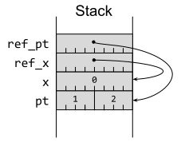 图1-2.带有指向局部变量的指针的栈布局Rust 引用可以指向位于栈或堆上的元素。Rust 默认情况下会在栈上分配内存，但是 Box<T> 指针类型（大致相当于 C++ 的 std::unique_ptr<T>) 会强制分配到堆上，这意味着分配的元素可以比当前代码块的作用域更长寿。本质上，Box<T> 也是一个简单的8字节指针值（64 位平台）：
注意：
- 栈是一种快速但有限制的内存区域，函数调用时分配，函数结束后释放。
- 堆是一种更大但速度较慢的内存区域，程序可以显式分配和释放内存。
#![allow(unused)] fn main() { let box_pt = Box::new(Point { x: 10, y: 20 }); }
这在图1-3中被描述。
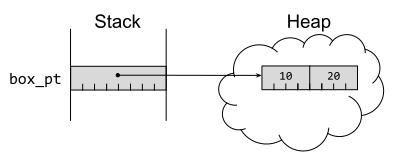
图1-3.栈上的 Box 指针指向堆上的 struct
指针特征
期望一个引用参数，如 &Point 的方法也可以接受一个 &Box<Point>：
fn show(pt: &Point) {
println!("({}, {})", pt.x, pt.y);
}
show(ref_pt);
show(&box_pt);(1, 2)
(10, 20)
这之所以可能，因为 Box<T> 实现了 Deref 特征（Trait），Target = T。某个类型实现这个特征意味着该特征的 deref() 方法可以用于创建对 Target 类型的引用。还有一个等效的 DerefMut 特征，它会生成对 Target 类型的可变引用。
Deref/DerefMut 特征有点特别，因为Rust编译器在处理实现它们的类型时有特定的行为。当编译器遇到解引用表达式（例如，*x），它会根据解引用是否需要可变访问来查找并使用这些特征的实现。这种 Deref 转换允许各种智能指针类型像普通引用一样工作，它是 Rust 中少数允许隐式类型转换的机制之一（如第5条所述）。
作为一个技术细节，理解为什么 Deref 特征不能对目标类型是泛型的（Deref<Target>）是很值得的。如果它们是，那么某些类型 ConfusedPtr 就可以同时实现 Deref<TypeA> 和 Deref<TypeB>，这将使编译器无法为 *x 这样的表达式推导出唯一的类型。因此，目标类型被编码为一个名为 Target 的关联类型。
这种技术细节与另两个标准指针特征 AsRef 和 AsMut 形成对比。这些特征不会在编译器中引起特殊行为，但允许通过对其特征函数（as_ref() 和 as_mut()）的显式调用进行引用或可变引用的转换。转换的目标类型被编码为类型参数（例如，AsRef<Point>），这意味着一个容器类型可以支持多个目标类型。
例如，标准 String 类型实现了 Deref 特征，Target = str，这意味着像 &my_string 这样的表达式可以强制转换为类型 &str。但它也实现了以下特征：
AsRef<[u8]>，允许转换为字节切片&[u8]AsRef<OsStr>，允许转换为OS字符串AsRef<Path>，允许转换为文件系统路径AsRef<str>，允许转换为字符串切片&str（与Deref相同）
胖指针类型
Rust有两个内置的胖指针类型：切片（Slice）和特征（Trait）对象。这些类型的行为像指针，但它们持有关于指向对象的额外信息。
切片
第一种胖指针类型是切片：它引用某个连续值集合的子集。切片由一个（没有所有权的）简单指针和一个长度字段组成，因此大小是简单指针的两倍（在 64 位平台上为 16 字节）。切片的类型写为 &[T] - 它表示对 [T] 的引用，[T]是类型 T 的连续值集合的概念类型。
概念类型 [T] 不能被实例化，但是有两种常见的容器实现了它。第一种是数组：一个连续的值集合，其大小在编译时是已知的。
一个有5个值的数组将始终有5个值。因此，切片可以引用数组的一个子集（如图1-4所示）：
#![allow(unused)] fn main() { let array: [u64; 5] = [0, 1, 2, 3, 4]; let slice = &array[1..3]; }
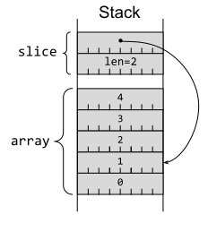 图1-4.指向栈数组的栈切片
连续值的另一种常见容器是 Vec<T>。这像数组一样持有连续的值集合，但与数组不同，Vec中的值的数量可以增长（例如，用 push(value) ）或缩小（例如，用 pop() ）。
Vec 的内容保存在堆上（这允许其大小发生变化），并且总是连续的，因此切片可以引用 Vec 的子集，如图 1-5 所示：
#![allow(unused)] fn main() { let mut vector = Vec::<u64>::with_capacity(8); for i in 0..5 { vector.push(i); } let vslice = &vector[1..3]; }
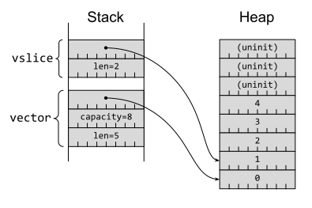 图1-5.指向堆上的Vec内容的栈切片
表达式 &vector[1..3] 的底层有很多细节，所以值得将其拆解成d多个部分：
1..3部分是一个范围表达式(range expression)；编译器会将其转换为Range<usize>类型的实例，该类型包含下限（1）但不包含上限（3）。Range类型实现了特征，该特征描述了对任意类型T的切片的索引操作（因此Output类型为[T]）。vector[]部分是一个索引表达式(indexing expression)；编译器将其转换为在vector上调用Index特征的index方法，并附加一次解引用（即*vector.index()）。2vector[1..3]会调用Vec<T>的Index<I>[实现]，它要求I是SliceIndex<[u64]>的一个实例。这是因为Range<usize>对于任何T类型来说，包括u64，都实现了SliceIndex<[T]>特征。&vector[1..3]取消了解引用，最终得到的表达式类型为&[u64]。
特征对象
第二种内置的胖指针类型是特征对象：它引用实现了特定特征的某个元素。特征对象由一个指向该元素的简单指针和一个指向类型 vtable 的内部指针共同构成，大小为 16 字节（在 64 位平台上）。类型的 vtable 存储了该类型所实现特征的方法实现的函数指针，从而允许在运行时进行动态分配（第12条）。3
例如，定义一个简单的特征：
#![allow(unused)] fn main() { trait Calculate { fn add(&self, l: u64, r: u64) -> u64; fn mul(&self, l: u64, r: u64) -> u64; } }
以及一个实现该特征的结构体：
struct Modulo(pub u64);
impl Calculate for Modulo {
fn add(&self, l: u64, r: u64) -> u64 {
(l + r) % self.0
}
fn mul(&self, l: u64, r: u64) -> u64 {
(l * r) % self.0
}
}
let mod3 = Modulo(3);我们可以将 Modulo 转换为特征对象 &dyn Calculate。dyn 关键字强调了涉及动态分配的事实：
// Need an explicit type to force dynamic dispatch.
let tobj: &dyn Calculate = &mod3;
let result = tobj.add(2, 2);
assert_eq!(result, 1);如图 1-6 所示的相应内存布局。
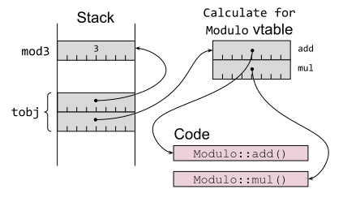
图1-6.指向具体项和 vtable 的 Trait 对象
持有特征对象的代码可以通过 vtable 中的函数指针调用特征的方法，并将元素指针作为 &self 参数传递；有关更多信息和建议，请参考第12条。
更多指针特征
之前的一节描述了两组特征（Deref/DerefMut、AsRef/AsMut），它们用于处理可以轻松转换为引用的类型。除此之外，还有一些标准特征在处理类似指针的类型时也会发挥作用，这些类型可以来自标准库或用户定义的类型。
其中最简单的是 Pointer 特征，它用于格式化指针值以供输出。这对于底层开发调试很有帮助，编译器在遇到{:p}格式说明符时会自动使用这个特征。
更有趣的是 Borrow 和 BorrowMut 特征，它们各自只有一个方法（分别为 borrow 和 borrow_mut ）。这些方法的签名与相应的 AsRef/AsMut 特征方法相同。
通过标准库提供的泛型实现，可以看到这些特征之间的主要意图差异。给定任意Rust引用 &T，标准库都提供了 AsRef 和 Borrow 的泛型实现；同样地，对于可变引用 &mut T，也提供了 AsMut 和 BorrowMut 的泛型实现。
然而，Borrow 还有一个针对（非引用）类型的泛型实现：impl<T> Borrow<T> for T。这意味着，一个接受 Borrow 特征的方法可以同样处理 T 的实例以及对 T 的引用：
#![allow(unused)] fn main() { fn add_four<T: std::borrow::Borrow<i32>>(v: T) -> i32 { v.borrow() + 4 } assert_eq!(add_four(&2), 6); assert_eq!(add_four(2), 6); }
标准库的容器类型有更贴合实际的 Borrow 用法。例如，HashMap::get 使用 Borrow 以便无论通过值还是引用作为键，都可以方便地检索条目。
ToOwned 特征建立在 Borrow 特征的基础上，增加了一个 to_owned() 方法，该方法生成一个新的底层类型的所有权项。这是 Clone 特征的泛化: 其中 Clone 特征特别要求一个Rust引用 &T，而 ToOwned 则处理实现 Borrow 的内容。
这为以统一的方式处理引用和移动项提供了几种可能性：
- 一个操作某些类型引用的函数可以接受
Borrow，以便它也可以用移动项以及引用调用。 - 一个操作某些类型拥有项的函数可以接受
ToOwned，以便它也可以用引用项以及移动项调用；传递给它的任何引用都将被复制到本地拥有项中。
此时值得一提的是 Cow 类型，虽然它不是指针类型，因为它提供了处理相同情况的替代方式。Cow 是一个枚举，可以持有拥有的数据或对借用数据的引用。这个特殊的名称代表“写入时复制”（clone-on-write）：一个 Cow 输入可以作为借用数据一直保持，直到它需要被修改，但在数据需要被更改的时，它才会变成一个拥有的副本。
智能指针类型
Rust 标准库包含多种在某种程度上类似于指针的类型，这些类型在一定程度上充当指针的角色，并由之前描述的标准库特质进行调解。每种智能指针类型都具有一些特定的语义和保证，正确组合它们可以对指针的行为进行细粒度控制，但缺点是由此产生的类型乍一看可能会让人不知所措（比如 Rc<RefCell<Vec<T>>>）。
第一个智能指针类型是 Rc<T>，它是对某个项的引用计数指针（大致类似于 C++中的 std::shared_ptr<T>）。它实现了所有与指针相关的特征，因此在许多方面的行为类似于 Box<T>。
这对于可以通过不同途径访问同一个项的数据结构很有用，但它消除了 Rust 围绕所有权的核心规则之一，每个项只有一个所有者。放宽这条规则意味着现在可能会发生数据泄漏：如果变量 A 有一个指向变量 B 的 Rc 指针，而变量 B 有一个指向 A 的 Rc 指针，那么这对变量将永远不会被释放。4换句话说：你需要 Rc 来支持循环数据结构，但缺点是现在你的数据结构中存在循环。
在某些情况下，可以通过使用相关的 Weak<T> 类型来降低数据泄漏的风险。Weak<T> 持有对底层数据的非所有权引用（弱引用，类似于 C++ 的 std::weak_ptr<T>）。持有弱引用不会阻止底层数据被删除（当所有强引用都被移除时），所以使用 Weak<T> 需要升级为 Rc<T> ——这可能会失败。
在底层，Rc（目前）实现为一对引用计数和被引用的项，所有这些都存储在堆上（如图 1-7 所示）：
#![allow(unused)] fn main() { use std::rc::Rc; let rc1: Rc<u64> = Rc::new(42); let rc2 = rc1.clone(); let wk = Rc::downgrade(&rc1); }
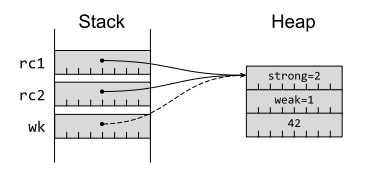 图1-7. Rc和Weak指针都指向堆上同一个项
当强引用计数降至零时，底层数据将被释放，但只有弱引用计数也降至零时，才会释放 bookkeeping 结构。
RcRc或 Weak 引用指向同一项），你才能修改它（通过 get_mut）。这很难协调，因此 Rc 通常与 RefCell 结合使用。
下一个智能指针类型是RefCell<T>，它放宽了只能由所有者或持有唯一可变引用的代码修改数据的规则（参考第15条）。这种内部可变性带来了更大的灵活性，例如允许特征实现修改内部，即使方法签名只允许 &self。然而，这也带来了代价：除了额外的存储开销（需要一个额外的 isize 用于跟踪当前的借用，如图 1-8 所示），正常的借用检查也从编译时转移到了运行时：
#![allow(unused)] fn main() { use std::cell::RefCell; let rc: RefCell<u64> = RefCell::new(42); let b1 = rc.borrow(); let b2 = rc.borrow(); }
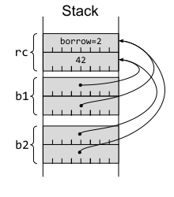 图1-8. 引用了 RefCell 容器的 Ref 借用
这些运行时的借用检查意味着用户使用 RefCell 时，必须在两个不愉快的选项之间做出选择：
- 接受借用可能失败的操作，并处理来自
try_borrow[_mut]的 Result 值。 - 使用所谓不会失败的借用方法
borrow[_mut]，并接受在运行时由于借用规则不合规而引发 panic 的风险（参考第18条）。
无论哪种情况，这种运行时检查意味着 RefCell 不实现任何标准指针特征；相反，它的访问操作返回一个实现了这些特征的 Ref<T> 或 RefMut<T> 智能指针类型。
如果底层类型 T 实现了 Copy 特征（表示按位快速复制生成一个有效的项；参考第10条），那么 Cell<T> 类型允许以更少的开销进行内部修改——get(&self) 方法复制出当前值，set(&self, val) 方法设置一个新值进去。Cell 类型在 Rc 和 RefCell 实现中都被内部使用，用于共享跟踪可以修改的计数器，而无需 &mut self。
到目前为止描述的智能指针类型仅适用于单线程使用；它们的实现假设对其内部没有并发访问。如果不是这种情况，则需要包含额外同步开销的智能指针。
Arc<T> 线程安全 Rc<T> 等价实现，它使用原子计数器来确保引用计数保持准确。与 Rc一样，Arc 实现了所有各种与指针相关的特征。
然而，单独的 Arc 不允许对底层项目进行任何形式的可变访问。这是由 Mutex 类型引起的，它确保只有一个线程可以访问（无论是可变的还是不可变的）底层项目。与 RefCell 一样，Mutex 本身不实现任何指针特征，但它的 lock() 操作返回一个实现了 Deref[Mut] 的类型的值：MutexGuard。
如果读者(读操作线程)可能多于写者(写操作线程)，则更推荐使用 RwLock 类型，因为它允许多个读者并行访问底层项目，前提是当前没有（单个）写者。
在任何情况下，Rust 的借用和线程规则都强制在多线程代码中使用这些同步容器中的一个（但这仅能防止共享状态并发的一些问题；参考第17条）。
对于其他智能指针类型，有时也可以应用相同的策略——查看编译器拒绝的内容，并替换为它建议的内容。然而，更快、更少挫折的方法是理解不同智能指针的行为含义。借用来自Rust编程语言第一版的示例:
Rc<RefCell<Vec<T>>>持有一个具有共享所有权 (Rc) 的Vec，其中Vec可以作为一个整体被修改。Rc<Vec<RefCell<T>>>也持有具有共享所有权的Vec，但这里Vec中的每个单独的条目都可以独立于其他条目进行修改。
涉及的类型精确描述了这些行为。
注释
尽管有来自现代编译器的警告
可变表达式的等价特征是IndexMut
这是一种简化解释；完整的虚函数表(vtable)还包含类型的尺寸和对齐信息，以及一个drop()函数指针，用于安全地释放底层对象
请注意，这并不影响 Rust 的内存安全保证：项目仍然是安全的，只是无法访问
第 9 条：考虑使用迭代器转换代替显式循环
编程语言中简陋朴素的循环经历了一段漫长的发展，逐步提高了使用的便利性和抽象性。B 语言（C 语言的前身）当时仅有 while (condition) { ... } 这种结构，但随着 C 语言的到来，for 循环的加入使通过数组下标进行遍历这种高频行为变得越来越方便：
// C code
int i;
for (i = 0; i < len; i++) {
Item item = collection[i];
// body
}
C++ 的早期版本通过允许将循环变量的声明嵌入到 for 语句中，进一步提高了便利性（这也被 C 语言的 C99 标准所纳入）：
// C++98 code
for (int i = 0; i < len; i++) {
Item item = collection[i];
// ...
}
大多数现代编程语言把循环的概念做了更进一步的抽象：循环的核心功能通常是移动到某个容器的下一项进行访问。维护访问容器元素所需要的逻辑（index++ or ++it）通常是无关紧要的细节。基于这种认识，产生了两个核心的概念：
- 迭代器
Iterators：一种类型，它存在的目的是重复地释出容器的下一个元素，直到把容器耗尽1。 For-each循环：一种紧凑的循环表达式，用于迭代容器中的所有元素，表达式会将容器元素绑定到循环变量上，而不是提供一些让你访问到元素的细节信息。
这些概念允许循环代码变得更简短，（更重要的是）更加清晰地表明意图：
// C++11 code
for (Item& item : collection) {
// ...
}
一旦有了这些可行的概念，它们的强大显而易见，因此它们很快地就被移植到了那些本没有这些概念的语言中（例如，for-each 循环在 Java 1.5 和 C++11 中被引入）。
Rust 包括迭代器和 for-each 风格的循环，但它还包括了更进一步的抽象：允许整个循环体通过迭代器转换 iterator transform（有时候也被称作迭代器适配器 iterator adaptor）来表达。如我们在 第 3 条 中讨论的 Option 和 Reuslt 一样，这条条款会尝试展示如何使用这些迭代器转换来替换显式的循环，并就应该何时使用给出相应的指导。特别要注意的是，迭代器转换或许会比显式的循环更高效，因为编译器可以跳过那些潜在的边界检查。
在看完这条条款后，一个 C 风格的，用于求向量 vector 前五个偶数项的平方和的循环：
#![allow(unused)] fn main() { let values: Vec<u64> = vec![1, 1, 2, 3, 5 /* ... */]; let mut even_sum_squares = 0; let mut even_count = 0; for i in 0..values.len() { if values[i] % 2 != 0 { continue; } even_sum_squares += values[i] * values[i]; even_count += 1; if even_count == 5 { break; } } }
应该能被很自然地表达为函数式表达式的样子：
#![allow(unused)] fn main() { let even_sum_squares: u64 = values .iter() .filter(|x| *x % 2 == 0) .take(5) .map(|x| x * x) .sum(); }
像这样的迭代器转换表达式可以粗略被分解为三个部分：
- 一个源迭代器，来自于一个实现了 Rust 的任意一种
iteratortraits 的类型实例； - 一个由若干迭代器转换组成的操作序列；
- 一个最终的消费者方法
consumer method将迭代的结果合并为最后的值；
其中前两部分有效地将循环的内部功能从循环体内移到 for 表达式中，最后一部分则完全消除了对 for 语句的依赖。
译者注：这里的原文表达的意思有点绕。不熟悉这种编程范式的朋友可以尝试这么理解：
for循环版本代码中的逻辑，通过filter().take().map()这一系列调用“表达”了。而iter()和sum()相当于是这个循环的“启动”和“结束”，对应for循环版本中的for和even_sum_squares += ...。于是我们最终摆脱了对for这个表达式的使用。
Iterator Traits 迭代器 Traits
标准库中这个核心的 Iterator trait 有一个十分简单的接口：一个 next 方法用于生成 Some 元素，直到没法再继续生成（返回 None）。迭代过程中生成元素的类型通过 trait 的关联类型 Item 定义。
那些允许用户对其中元素进行遍历的容器——在其他语言中被称为可迭代对象 iterable）——实现了 IntoIterator trait；trait 中定义的 into_iter 方法会消耗掉 Self 并返回一个 Iterator。编译器会自动对以下形式的表达式自动应用这个 trait：
#![allow(unused)] fn main() { for item in collection { // body } }
并高效地转换成类似如下的代码：
#![allow(unused)] fn main() { let mut iter = collection.into_iter(); loop { let item: Thing = match iter.next() { Some(item) => item, None => break, }; // body } }
或者更简洁惯用的形式：
#![allow(unused)] fn main() { let mut iter = collection.into_iter(); while let Some(item) = iter.next() { // body } }
为了让不同场景下的使用更流畅，对于任何的 Iterator 都有实现 IntoIterator，而实现就是返回 self；毕竟要把 Iterator 转成 Iterator 不费吹灰之力！
这种初始形式生成的是一个消耗型迭代器，在创建的时候会把容器消耗掉。
#![allow(unused)] fn main() { let collection = vec![Thing(0), Thing(1), Thing(2), Thing(3)]; for item in collection { println!("Consumed item {item:?}"); } }
任何在迭代后完成后对容器进行的操作都会失败：
#![allow(unused)] fn main() { println!("Collection = {collection:?}"); }
error[E0382]: borrow of moved value: `collection`
--> src/main.rs:171:28
|
163 | let collection = vec![Thing(0), Thing(1), Thing(2), Thing(3)];
| ---------- move occurs because `collection` has type `Vec<Thing>`,
| which does not implement the `Copy` trait
164 | for item in collection {
| ---------- `collection` moved due to this implicit call to
| `.into_iter()`
...
171 | println!("Collection = {collection:?}");
| ^^^^^^^^^^^^^^ value borrowed here after move
|
note: `into_iter` takes ownership of the receiver `self`, which moves
`collection`
虽然容易理解，但这种消耗整个容器的行为通常不是我们想要的；我们需要对被迭代的元素进行某种借用。
为了确保展示内容的清晰，这里的例子使用了一个没有实现 Copy（第 10 条） 的 Thing 类型，因为 Copy 会掩盖掉所有权（第 15 条）的问题——编译器会偷偷四处拷贝：
#![allow(unused)] fn main() { // Deliberately not `Copy` // 特地不实现 `Copy` #[derive(Clone, Debug, Eq, PartialEq)] struct Thing(u64); let collection = vec![Thing(0), Thing(1), Thing(2), Thing(3)]; }
如果被迭代的集合以 & 作为前缀：
#![allow(unused)] fn main() { for item in &collection { println!("{}", item.0); } println!("collection still around {collection:?}"); }
那么编译器会寻找 &Collection 类型的 IntoIterator 实现。正确设计的集合都会提供这样的一个实现；这个实现仍然会消耗 Self，不过此时 Self 是 &Collection 类型而不是 Collection，并且对应的关联类型 Item 将会是一个引用类型 &Thing。
这使得在迭代之后容器仍然保持完整，等效的扩展代码如下：
#![allow(unused)] fn main() { let mut iter = (&collection).into_iter(); while let Some(item) = iter.next() { println!("{}", item.0); } }
在可以遍历可变引用的场景下1，for item in &mut collection 也有类似的模式：编译器寻找 &mut Collection 的 IntoIterator trait，此时关联类型 Item 是 &mut Thing 类型。
按照惯例，标准库容器会提供一个 iter() 方法返回对底层元素的引用，以及如果可以的话，一个等效的 iter_mut() 方法，其行为与上面提到的相同。这些方法可以在 for 循环中使用，但在用作迭代器转换的场景下有更明显的好处：
#![allow(unused)] fn main() { let result: u64 = (&collection).into_iter().map(|thing| thing.0).sum(); }
可以变成：
#![allow(unused)] fn main() { let result: u64 = collection.iter().map(|thing| thing.0).sum(); }
Iterator Transforms 迭代器转换
Iterator trait 只有一个必须的 next 方法，但也提供了大量的在迭代器上执行转换计算的默认方法实现（第 13 条）。
其中一些转换会影响到整个迭代的过程：
- take(n)：限制迭代器最多只能产生
n个元素。 - skip(n)：跳过迭代器的前
n个元素。 - step_by(n)：转换迭代器，让它每隔
n个元素生成一个元素。 - chain(other)：将两个迭代器粘合在一起构造一个组合迭代器，它会在遍历完第一个迭代器的内容后开始遍历第二个迭代器。
- cycle()：将迭代器转换为一个永久循环的迭代器，当遍历到头后再次从头开始遍历。（迭代器需要实现
Clone来支持这个方法。） - rev()：反转迭代器的方向。（迭代器需要实现 DoubleEndedIterator trait，这个 trait 有一个额外的 next_back 方法。）
其他的转换会影响到 Iterator 对应的 Item 的性质/属性：
- map(|item| {...})：重复应用闭包依次转换迭代的元素。这是最通用的转换，这个列表中的以下若干个方法都可以用
map等价地实现。 - clone()：产生原始迭代器中元素的一个克隆；这个方法在遍历
&Item这种引用的时候十分有用。（显然这需要底层类型Item实现Clone。） - copied()：产生原始迭代器中元素的一个拷贝；这个方法在遍历
&Item这种引用的时候十分有用。（显然这需要底层类型Item实现Copy，如果是这样的话，那么有可能会比cloned()要快一些。） - enumerate()：将迭代器转换成迭代
(usize, Item)值对的迭代器，提供了迭代器中元素的索引。 - zip(it)：将一个迭代器和另一个迭代器联结，构建一个组合迭代器，用于产生值对，每一个值对里面的元素分别来自于两个迭代器，组合迭代器会一直产生元素直到元素较少的迭代器迭代完毕。
还有一些转换可以对 Iterator 产生的 Item 进行过滤：
- filter(|item| {...})：对每个元素的引用应用一个返回布尔值的闭包，来判断这个元素是否应该要被迭代器提供。
- take_while()：基于谓词提供迭代器初始区间中的元素。是
skip_while的镜像。 - skip_while()：基于谓词提供迭代器末端区间中的元素。是
take_while的镜像。
flatten 方法用于处理元素类型还是迭代器类型的迭代器，用于展平结果。单就这个方法来看这好像没有什么用，但是我们发现当 Option 和 Result 类型用作迭代器的时候，这就很有用了：这两个类型会产生零（None，Err(e)）或者一（Some(v)，Ok(v)）。这意味着 flatten 一个 Option 或者 Result 的流是一个提取其中有效值的简单方式。
从整体上看，上面提到的方法允许对迭代器进行转换，以便迭代器精确地生成大多数情况下所需要的元素序列。
Iterator Consumers 迭代器消耗者
前面两节介绍了如何获取迭代器，以及如何对其进行合适的转换来进行精准的迭代。这种目的明确的迭代也可以通过显式循环的方式来实现：
#![allow(unused)] fn main() { let mut even_sum_squares = 0; for value in values.iter().filter(|x| *x % 2 == 0).take(5) { even_sum_squares += value * value; } }
但同时 Iterator 提供的方法集里面还包含了许多可以消费整个迭代以获得结果的方法，从而可以让我们消除显式的 for 循环。
这些方法中最常见的是 for_each(|item| {...})，它会对 Iterator 产生的每个元素应用一个闭包。这可以完成绝大多数显式 for 循环可以完成的工作（除了少量例外，我们会在后面的部分中提到）。但它的普适性也让它用起来有点尴尬——闭包需要捕获对外部状态的可变引用才能“返回”结果：
#![allow(unused)] fn main() { let mut even_sum_squares = 0; values .iter() .filter(|x| *x % 2 == 0) .take(5) .for_each(|value| { // closure needs a mutable reference to state elsewhere even_sum_squares += value * value; }); }
但是如果 for 循环的循环体跟一些常见的模式之一匹配，那么就有更特化的方法来“消费”迭代器，这些方法往往更清晰、简短且符合惯用法。
这些模式包括从一个集合中生成一个值的便捷方法：
- sum()：对数值（整型或浮点型）类型的集合求和。
- product()：将数值类型集合中的元素相乘。
- min()：使用
Item的Ord实现，寻找集合中的最小值。 - max()：使用
Item的Ord实现，寻找集合中的最大值。 - min_by(f)：使用用户提供的比较函数
f，寻找集合中的最小值。 - max_by(f)：使用用户提供的比较函数
f，寻找集合中的最大值。 - reduce(f)：通过在每次迭代中执行闭包来计算
Item的求和值，闭包会接收截止目前的求和值和当前遍历的元素作为参数。这是一个更通用的操作，包含（可以用于实现）前面提到的一些方法。 - fold(f)：通过在每次迭代中执行闭包来计算任意类型（而不限于
Iterator::Item类型）的求和值，闭包会接收截止目前的求和值和当前遍历的元素作为参数。这是reduce的更泛化的版本。 - scan(init, f)：通过在每次迭代中执行闭包来计算某个特定类型的求和值，闭包会接收某种内部状态的可变引用和当前遍历的元素作为参数。这是一个稍特别的
reduce的泛化版本。
还有一些方法可以用从集合中选择一个值：
- find(p)：查找第一个满足谓词的元素。
- position(p)：也是查找第一个满足谓词的元素，不过返回元素对应的索引。
- nth(n)：如果有，返回迭代的第
n的元素。
还有一些方法可以针对集合中的每个元素进行测试：
对于上面两个方法之一，如果遍历过程中找到一个反例，迭代都会提前终止。
有一些方法允许闭包在对元素操作的时候返回失败。在这种场景下，如果闭包对某个元素的操作返回失败，迭代将终止，并返回第一个导致失败产生的操作：
- try_for_each(f)：行为类似于
for_each，但闭包操作可能会失败。 - try_fold(f)：行为类似于
fold，但闭包操作可能会返回失败。 - try_find(f)：行为类似于
find，但闭包操作可能会返回失败。
最后，还有一些方法可以把所有迭代的元素累积到新的集合中。当中最重要的就是 collect() 方法，它可以用于创建任意一种实现了 FromIterator 特征的集合类型。
FromIterator traits 在所有的标准库集合类型上都有实现（Vec,HashMap,BTreeSet 等），但这种普遍性也意味着你总是要显式地指定集合的类型，否则编译器无法推断出你想要组装一个（比如说）Vec<i32> 还是 HashSet<i32>：
#![allow(unused)] fn main() { use std::collections::HashSet; // Build collections of even numbers. Type must be specified, because // the expression is the same for either type. // 创建一个只有偶数的集合。你必须指定集合的类型，因为对于两个集合来说构造的表达式一模一样。 let myvec: Vec<i32> = (0..10).into_iter().filter(|x| x % 2 == 0).collect(); let h: HashSet<i32> = (0..10).into_iter().filter(|x| x % 2 == 0).collect(); }
这个例子也展示了如何使用范围表达式 range expressions 来生成要迭代的初始数据。
还有一些其他（更加晦涩）的集合生成方法：
- unzip()：将一个 pair 的迭代器拆分到两个集合中。
- partition(p)：通过应用谓词到元素上，把一个迭代器迭代的内容切分到两个集合中。
本条款涉及了很多 Iterator 相关的方法，但这仅仅是所有可用方法的子集；要想了解更多，可以参考文档 iterator documentation 或者 Programming Rust 第二版（O'Reilly）的 15 章，书里更详细地介绍了各种可能的用法。
丰富的迭代器转换方法集合在日常中就这么触手可及，这些方法可以让代码变得更符合惯用法、更紧凑，同时更好地表达代码的意图。
将循环表达式转换成迭代器转换还有助于生成更高效的代码。为了安全起见，Rust 在访问诸如 vector 和切片这种连续的容器时会对访问执行边界检查；任何尝试访问越界的元素的操作都会导致 panic 而不是访问无效的数据。传统的访问容器值的方法（如 values[i]）可能会受到这些运行时检查的介入，而一个逐步提供值的迭代器可以被认为是不会越界的。
但是，与迭代器转换等效的传统循环表达式也可能不会受到额外的边界检查的影响。Rust 的编译器和优化器很擅长分析切片访问的上下文代码来决定跳过边界检查是否安全可行的；Sergey "Shnatsel" Davidoff 的文章 2023 article 探讨了其中的细节。
从 Result 值构建集合
上一节我们介绍了如何用 collect() 从迭代器构建集合，但同时 collect() 对于处理 Result 值的场景也有特别有用的特性。
考虑一个例子，将一个 u64 的 vector 转成字节 u8，并期望它们都满足条件：

#![allow(unused)] fn main() { // In the 2021 edition of Rust, `TryFrom` is in the prelude, so this // `use` statement is no longer needed. use std::convert::TryFrom; let inputs: Vec<i64> = vec![0, 1, 2, 3, 4]; let result: Vec<u8> = inputs .into_iter() .map(|v| <u8>::try_from(v).unwrap()) .collect(); }
这是可以的，直到有一些意外的输入：
#![allow(unused)] fn main() { let inputs: Vec<i64> = vec![0, 1, 2, 3, 4, 512]; }
这将导致运行时的失败：
thread 'main' panicked at 'called `Result::unwrap()` on an `Err` value:
TryFromIntError(())', iterators/src/main.rs:266:36
note: run with `RUST_BACKTRACE=1` environment variable to display a backtrace
根据 第 3 条 的建议，我们希望保留 Result 类型并且使用 ? 运算符让任何一个失败的操作作为调用代码的问题返回。修改让代码返回 Result 达不到我们的目的：
#![allow(unused)] fn main() { let result: Vec<Result<u8, _>> = inputs.into_iter().map(|v| <u8>::try_from(v)).collect(); // Now what? Still need to iterate to extract results and detect errors. }
但是还有另一种 collect() 的版本，可以组装一个持有 Vec 的 Result，而不是一个装着 Result 的 Vec。
想要强制使用这个版本就要用到 turbofish 语法（::<Result<Vec<_>, _>>）：
#![allow(unused)] fn main() { let result: Vec<u8> = inputs .into_iter() .map(|v| <u8>::try_from(v)) .collect::<Result<Vec<_>, _>>()?; }
将其与问号运算符结合使用实现了一种有用的行为：
- 如果迭代遇到了错误，错误的值会返回到调用方，并且迭代终止。
- 如果没有遇到错误，则余下代码能处理返回一个合理、类型正确的值的集合。
转换显式循环
这个条款的目的是让你相信很多显式循环都可以被当做基于迭代器的转换。这对于不习惯的程序员来说可能会让人觉得不太自然，所以我们来一步步完成一次转换吧。
我们从一个很 C 语言风格的循环开始，对一个 vector 的头五个偶数项求平方和：
let mut even_sum_squares = 0;
let mut even_count = 0;
for i in 0..values.len() {
if values[i] % 2 != 0 {
continue;
}
even_sum_squares += values[i] * values[i];
even_count += 1;
if even_count == 5 {
break;
}
}
第一步是把 vector 的索引换成 for-each 循环的迭代器：
#![allow(unused)] fn main() { let mut even_sum_squares = 0; let mut even_count = 0; for value in values.iter() { if value % 2 != 0 { continue; } even_sum_squares += value * value; even_count += 1; if even_count == 5 { break; } } }
使用 continue 来跳过某些元素的原始代码分支可以用 filter() 来很自然地表达：
#![allow(unused)] fn main() { let mut even_sum_squares = 0; let mut even_count = 0; for value in values.iter().filter(|x| *x % 2 == 0) { even_sum_squares += value * value; even_count += 1; if even_count == 5 { break; } } }
接下来，一旦我们有 5 个元素了，我们就提前退出循环，这里用 take(5)：
#![allow(unused)] fn main() { let mut even_sum_squares = 0; for value in values.iter().filter(|x| *x % 2 == 0).take(5) { even_sum_squares += value * value; } }
每次迭代我们都只要元素的平方值 value * value，这就是 map() 理想的使用场景：
#![allow(unused)] fn main() { let mut even_sum_squares = 0; for val_sqr in values.iter().filter(|x| *x % 2 == 0).take(5).map(|x| x * x) { even_sum_squares += val_sqr; } }
对原始循环的重构最后成为了 sum() 方法大锤下一颗完美的钉子：
#![allow(unused)] fn main() { let even_sum_squares: u64 = values .iter() .filter(|x| *x % 2 == 0) .take(5) .map(|x| x * x) .sum(); }
什么时候显式循环更好
这条条款强调了迭代器转换的又是，特别是在简洁性和清晰度方面。那么什么时候迭代器转换不是那么适合或者不符合惯用法呢？
-
如果循环体很大、或者功能很多，那么保留在一个显式的循环体里面会比把逻辑压缩到闭包中更合理。
-
如果循环体包含很多会导致功能提前终止的错误条件，最好还是把它们保留在显式的循环体中——
try...()之类的方法也不会帮上很多忙。但是，collect()能把一个值类型为Result的集合转换成一个持有集合类型的Result类型的能力，在配合?运算符的场景下还是可以进行错误条件的处理。 -
如果性能至关重要，包含闭包的迭代器转换理应跟显式的代码一样快 just as fast。但如果代码中一个核心的循环很重要，测量不同的实现方法并进行适当的调优。
- 请确保你的测试能反映实际的性能——编译器的优化可能会对测试数据给出过于乐观的结果（如 第 30 条 所述）。
- Godbolt compiler explorer 是一个了不得的工具，你可以看到编译器都生成了什么。
最重要的，如果转换的过程是强制的或者生搬硬套的，那么就不要把显式循环转成迭代器转换了。这不过是一种编程风格口味的取向而已——但注意到，随着你对函数式的风格越来越熟悉，你的口味也很可能会发生变化。
1:事实上，迭代器可以更通用——在直到结束之前不停地产生下一个元素，这种想法不必跟某种容器强关联。
2:如果对容器元素的修改可能会导致容器内部的一些约束被打破，那么这个方法就不能提供了。比如说：导致元素的 Hash 值发生变化的修改，就可能会导致 HashMap 内部数据结构的失效。
特征（Traits）
Rust 类型系统的第二个核心支柱是特征（traits）的使用，它允许编码在不同类型之间通用的行为。特征在其他语言中大致等同于接口类型，但它们也与 Rust 的泛型（第 12 条）相关联，允许在不产生运行时开销的情况下重用接口。
本章中的条目描述了 Rust 编译器和 Rust 工具链提供的标准特征，并提供了关于如何设计和使用特征编码行为的建议。
第 10 条：熟悉标准库的 traits
Rust 通过一系列详细的、描述类型行为的标准库 traits，把类型系统自身的关键行为特征编码到了类型系统本身上（参考 第 2 条）。
其中的许多 traits 对于 C++ 程序员来说会感觉很熟悉，类比于拷贝构造函数、析构函数、相等性判断和复制运算符等等。
和在 C++ 中一样，为用户的自定义类型实现标准库当中的多数 traits 是个不错的选择；Rust 编译器会在用户的自定义类型需要某些 traits，而类型又缺少对应实现的时候给出有用的错误信息。
实现这么多的 traits 看起来有点吓人，但当中绝大多数的 traits 都可以通过 derive macros 自动应用到用户的自定义类型上。 derive 宏会基于类型生成相应的实现（例如：对于 struct 的字段逐一进行 Eq 判断）；这通常要求结构体的组成部分也实现了对应的 trait。自动生成的实现通常就是你会需要的，但也有例外，我们会在后面讨论具体 trait 的时候提到。
使用 derive 宏会让类型的定义看着像这样：
#![allow(unused)] fn main() { #[derive(Clone, Copy, Debug, PartialEq, Eq, PartialOrd, Ord, Hash)] enum MyBooleanOption { Off, On, } }
这里就触发了对于 8 个不同的 trait 实现的自动生成。
这种细粒度的行为规范一开始可能会让人觉得不适应，但熟悉最常见的标准库 traits 非常重要，这样才能快速了解到一个类型的定义中给它赋予的各种可用行为。
常见的标准库 traits
这一节讨论最常遇到的标准库 traits。以下是对这些 traits 粗略的一句话总结：
- Clone：需要时，该类型的实例可以通过执行用户定义的代码来创建自身的一个副本。
- Copy：如果编译器对类型实例的内存表示数据执行按比特拷贝，会得到一个有效的新副本。
- Default：可以使用合理的默认值创建该类型的实例。
- PartialEq：该类型的实例之间存在偏序关系 partial equivalence relation——任意两个实例可以明确地进行比较，但
x == x并不总为真。 - Eq：该类型的实例之间存在等价关系 equivalence relation，——任意两个实例可以明确地进行比较，且
x == x总为真。 - PartialOrd：该类型的某些实例之间可以进行比较和排序。
- Ord：该类型的所有实例之间可以进行比较和排序。
- Hash：该类型的实例可以在需要的时候生成一个稳定的散列值（哈希值）。
- Debug：该类型的实例可以对程序员显示（调试信息）。
- Display：该类型的实例可以对用户显示。
除了 Display （因为与 Debug 功能有重叠）以外，这些 traits 都可以通过 derive 为用户自定义类型派生。然后有些时候手动实现——或者说不实现这些 traits 可能是个更好的选择。
下面的小节会更详细地讨论这些常见的 traits。
Clone
Clone trait 表示可以通过调用 clone() 函数来创建一个对象的新副本。这跟 C++ 的拷贝函数大致相同，但是表意更加明确：编译器不会默默地调用这个函数（下一节会更详细地说明）。
如果一个类型的所有字段都实现了 Clone ，那么可以通过 derive 为这个类型自动派生 Clone。derive 派生获得的实现会对类型的每个成员依次执行克隆操作；再说一次，这跟 C++ 的构造函数大致相同。这个 trait 需要显式地启用（通过添加 #[derive(Clone)]），这与 C++ 中需要显式禁止（MyType(const MyType&) = delete;）恰恰相反。
派生 Clone 是一个常见且有用的操作，以至于去考虑是否应该实现 Clone、评估默认派生的实现是否符合实际要求变得更加有意思了。
- 如果一个类型的实例持有某些资源的唯一访问权（例如 RAII 类型 第 11 条），或者有其他原因限制拷贝（例如对象持有了加密密钥），那么你不应该实现
Clone。 - 如果类型的某些部分不是
Clone的，那么你也无法实现Clone：- 字段是可变引用（
&mut T），因为借用检查器（第 15 条）在同一时刻只允许一个对同一资源的可变引用的存在。 - 属于上述类别的标准库类型，例如 MutexGuard（体现唯一访问权）或者 Mutex（出于线程安全限制拷贝）。
- 字段是可变引用（
- 如果类型的任何部分不能通过（递归的）字段拷贝，或者有生命周期相关的簿记动作需要执行，那么你需要手动实现
Clone。举个例子，考虑一个在运行时跟踪所有实例数量的类型，你需要手动实现Clone来保证计数器的准确。
Copy
Copy trait 有一个简单的声明：
#![allow(unused)] fn main() { pub trait Copy: Clone { } }
这个 trait 里面没有方法，这意味这是一个标记 trait marker trait（如同第 2 条中所述）：这是用来表示对类型的某些约束，而这种约束本身没有在类型系统中表达。
对于 Copy 而言，这个标记表示，对类型实例的内存进行按比特的拷贝，可以得到一个正确的新对象。实际上，这个 trait 是一个标记，表示一个类型是 plain old data（POD）类型。
这也意味着 Clone 特性可能会有点令人困惑：尽管实现了 Copy 的类型需要实现 Clone，但是当一个实例被拷贝的时候，clone() 方法并没有被调用——编译器在不使用任何用户定义代码的情况下生成了一个新的对象。
跟其他用户自定义的标记 trait（第 2 条）相比，Copy 对编译器有着比作为 trait bound 以外更特殊的意义（和其他 std::marker 中的其他几个 trait 一样）——它使编译器在处理类型的时候从移动语意变成拷贝语义。
在移动语义的场景下，赋值运算符会把运算符右侧的内容，拿走并赋值给左边：
#![allow(unused)] fn main() { #[derive(Debug, Clone)] struct KeyId(u32); let k = KeyId(42); let k2 = k; // value moves out of k into k2 println!("k = {k:?}"); }
error[E0382]: borrow of moved value: `k`
--> src/main.rs:60:23
|
58 | let k = KeyId(42);
| - move occurs because `k` has type `main::KeyId`, which does
| not implement the `Copy` trait
59 | let k2 = k; // value moves out of k into k2
| - value moved here
60 | println!("k = {k:?}");
| ^^^^^ value borrowed here after move
|
= note: this error originates in the macro `$crate::format_args_nl`
help: consider cloning the value if the performance cost is acceptable
|
59 | let k2 = k.clone(); // value moves out of k into k2
| ++++++++
而使用拷贝语义的话，被用于赋值的变量在赋值过后依然存在：
#![allow(unused)] fn main() { #[derive(Debug, Clone, Copy)] struct KeyId(u32); let k = KeyId(42); let k2 = k; // value bitwise copied from k to k2 println!("k = {k:?}"); }
这使得 Copy 成为了最需要注意的 trait 之一：它从根本上改变了赋值的行为——包括方法调用时候的传参。
在这方面，这跟 C++ 的拷贝构造函数又有相似了，但是值得强调的一个关键区别在于：在 Rust 里面没有办法让编译器隐式调用用户定义的代码——要调用的话必须显式指定（比如使用 .clone()），或者让编译器执行并非由用户定义的代码（按比特位的拷贝动作）。
因为 Copy 具有 Clone trait 的特性，所以是可以 .clone() 任意一个满足 Copy 的对象的。但是这不是一个好的主义：按位拷贝总是会比调用 trait 方法要快。Clippy（第 29 条）会提示你：
#![allow(unused)] fn main() { let k3 = k.clone(); }
warning: using `clone` on type `KeyId` which implements the `Copy` trait
--> src/main.rs:79:14
|
79 | let k3 = k.clone();
| ^^^^^^^^^ help: try removing the `clone` call: `k`
|
跟讨论 Clone 的时候类似，何时应该或不应该实现 Copy 也是值得探讨的：
- 显而易见：如果按比特位拷贝不能生成有效的新对象，不要实现
Copy。如果Clone需要手动而不是通过derive实现，那么很有可能是这种情况。 - 如果你的类型比较大，实现
Copy可能是个坏主意。Copy的基本约定是安比特位拷贝是合法的，然而这也通常隐含一个假设：拷贝是很快速的。如果你的类不符合这样的要求，不实现Copy可以阻止意外的耗时拷贝的发生。 - 如果你的类型中某些部分不是
Copy的那么你也不能为类型实现Copy。 - 如果你的类型中所有部分都是
Copy的，那么通常也值得为你的类型 derive 一个Copy。编译器有一个默认的提示项 missing_copy_implementations 来指出这种情况。
Default
Default trait 通过 default() 方法定义了一个默认构造函数。如果用户定义类型的内含类型都有 Default 的实现，那么类型可以通过 derive 来实现这个 trait；如果内含类型并非都实现了 Default，那么用户需要手动为类型实现 这个 trait。还是跟 C++ 做比较：在 Rust 中需要显式地定义默认构造函数——编译器不会自动帮你创建。
enum 类型也可以通过 derive 实现 Default trait，只要给编译器提供一个 #[default] 属性来提示编译器哪一个分支是默认值即可：
#![allow(unused)] fn main() { #[derive(Default)] enum IceCreamFlavor { Chocolate, Strawberry, #[default] Vanilla, } }
Default trait 最有用的一个场景是和结构体更新语法 struct update syntax 组合使用。这个语法允许 struct 实例通过从同一种 struct 的实例中拷贝或者移动内容来初始化自身尚未尚未显式初始化的字段。要被拷贝的模板在初始化结束的时候给出，放在 .. 之后，Default trait 提供了一个理想的模板供使用：
#![allow(unused)] fn main() { #[derive(Default)] struct Color { red: u8, green: u8, blue: u8, alpha: u8, } let c = Color { red: 128, ..Default::default() }; }
这使得初始化具有大量字段，但仅有部分字段不是使用默认值的结构体变得更加容易。（构造器模式，第 7 条，或许对于这种场景也是适用的）。
PartialEq 和 Eq
PartialEq 和 Eq trait 允许你为用户定义的类型定义相等性。这些 trait 尤其重要，因为如果这些 trait 被定义了，编译器会自动在相等性（==）判断的时候调用相关逻辑，类比于 C++ 中的 operator==。derive 来的实现会执行逐字段的相等性判断。
Eq 版本只是一个标记 trait，用于扩展 PartialEq，它添加了自反性：任何声明了 Eq 的类型 T，对于任意的实例 x: T 都应该保证有 x == x。
这很奇怪，你会立即提出这个问题：什么时候 x == x 是不成立的？对相等性的这种拆分主要跟浮点数 floating point numbers。 有关，尤其是涉及到“不是数字”这个 NaN 值（对应 Rust 中的 f32:NAN/f64:NAN）。浮点数的标准要求任何东西不会等于 NaN，包括 Nan 自身；PartialEq trait 的存在就是这种要求的连锁反应。
对于没有任何浮点数相关的特性的用户自定义类型，你应该在实现 PartialEq 的同时也实现 Eq。如果你要把类型当作 HashMap 类型的 key，完整的 Eq trait 也是需要实现的（同样还有 Hash trait）。
如果类型包含一些不影响区分相等性的字段（如内部缓存或者其他类型的性能优化），则应该手动实现 PartialEq。如果 Eq 也被定义了，实现也将用于 Eq，因为 Eq 只是一个标记 trait，它内部并没有任何方法。
排序 trait PartialOrd 和 Ord 允许比较同一类型的两个实现，并返回 Less、Greater 或 Equal 之一。这两个 trait 需要对应的相等性 trait 有对应的实现（PartialOrd 要求 PartialEq; Ord 要求 Eq），并且对应的两个必须逻辑自洽（手动实现的时候尤其要注意）。
跟相等性 trait 一样，比较 traits 也很重要，因为编译器会在比较运算中使用到它们（<，>，<=，>=）。
derive 产生的默认实现会按照字段（或 enum 的不同 variant）定义的顺序，按照字典序进行比较。如果这不符合预期结果则需要手动实现特征（或者对字段进行重新排序）。
跟 PartialEq 不同的是，PartialOrd trait 确实对应各种真实发生的场景。比如说，它可以用于表示集合之间的子集关系(#footnote-2)：{1, 2} 是 {1, 2, 4} 的子集，但 {1, 3} 不是 {2, 4} 的子集，反之亦然。
但是，即使偏序关系准确地描述了你的类型的行为，要小心仅仅实现了 PartialOrd 而没有实现 Ord 的场景（这种情况很少见，它与 第 2 条 中将行为编码到类型系统中的建议相违背）——它可能会导致令人惊讶的结果：
#![allow(unused)] fn main() { // Inherit the `PartialOrd` behavior from `f32`. // 从 `f32` 继承 `PartialOrd` #[derive(PartialOrd, PartialEq)] struct Oddity(f32); // Input data with NaN values is likely to give unexpected results. // NaN 值的输入可能会给出意想不到的结果。 let x = Oddity(f32::NAN); let y = Oddity(f32::NAN); // A self-comparison looks like it should always be true, but it may not be. // 一个看起来应该总是成立的自我比较，但也可能不成立。 if x <= x { println!("This line doesn't get executed!"); } // Programmers are also unlikely to write code that covers all possible // comparison arms; if the types involved implemented `Ord`, then the // second two arms could be combined. // 程序员也不太可能写出覆盖所有可能的比较分支；如果涉及的类型实现了 `Ord`，那么后两种情况可以合并。 if x <= y { println!("y is bigger"); // Not hit. } else if y < x { println!("x is bigger"); // Not hit. } else { println!("Neither is bigger"); } }
Hash
Hash trait 用于给某个对象生成一个大概率与其他对象不相同的值。这个哈希值通常用于一些基于哈希桶的数据结构，比如 HashMap 和 HashSet；因此，这些数据结构中的 key 类型必须实现 Hash （和 Eq）。
反过来说，“相同”的项（以 Eq 来说）必须产生一样的的哈希值：如果 x y （通过 Eq），那么 hash(x) hash(y) 必须始终为真。**如果你手动实现了 Eq，那么要检查确认你是否也需要手动实现 Hash**以满足上述要求。
Debug 和 Display
Debug 和 Display trait 允许类型定义它在输出中应该怎么显示，这包括常规显示（{} 格式化参数）和调试（{:?} 格式化参数）目的，这大致类似于 C++ 中对 iostream 的 operator<< 重载。
这两个 trait 的设计意图差异不仅仅在于格式化占位符的不同，还包括：
Debug可以自动派生derive获得，而Display只能手动实现。Debug的输出格式在不同的 Rust 版本下可能会不一样。如果输出需要被其他的代码做解析，那么使用Display。Debug是面向程序员的，Display是面向用户的。一个有助于理解这个场景的头脑风暴是：如果程序被本地化到程序作者不懂的语言会发生什么——如果显示的内容应该被翻译，那么使用Display是合适的，否则就应该使用Debug。
通常来说，给你的类型添加一个自动生成的 Debug 实现是个不错的选择，除非类型里面包含一些敏感信息（个人详细信息、密码相关的内容等）。为了更容易遵守这个规则，Rust 编译器有一个提示 missing_debug_implementations 可以指出没有实现 Debug 的类型。这个提示默认是禁用的，但可以通过以下任一方式在你的代码中启用：
#![allow(unused)] #![warn(missing_debug_implementations)] fn main() { }
#![allow(unused)] #![deny(missing_debug_implementations)] fn main() { }
如果自动生成的 Debug 实现输出了太多细节信息，那么或许手动实现并且汇总一下类型里面的内容会更好一点。
如果你的类型要作为文本向最终用户显示，那么就实现 Display。
其他条款描述的标准库 trait
除了前面章节描述的常见 trait，标准库还包含其他没那么常见的 trait。在这些之中，以下是最重要的，但它们都在其他条款中有所介绍，因此这里不会详细地介绍：
- Fn，FnOnce 和 FnMut：实现了这些 trait 的对象代表它们是可以被调用的闭包。见第 2 条。
- Error：实现了这个 trait 的对象可以向用户或程序员呈现错误信息，并且可能包含嵌套的子错误信息。见第 4 条。
- Drop：实现了这个 trait 的对象会在它们被销毁的时候执行动作，这对于 RAII 模式来说是至关重要的。见第 11 条。
- From 和 TryFrom：实现了这些 trait 的对象，可以自动从别的类型的实例中转换过来，但后一个 trait 表示转换可能会失败。见第 5 条。
- Deref 和 DerefMut：实现了这些 trait 的对象是类似于指针的对象，它们可以被解引用以获得对内部对象的访问。见第 8 条。
- Iterator 及相关：实现了这些 trait 的对象表示可以它是一个可以被迭代的集合。见第 9 条。
- Send：实现了这个 trait 的对象可以在多个线程之间安全地传输。见第 17 条。
- Sync：实现了这个 trait 的对象可以在多个线程之间被安全地引用。见第 17 条。
这些 trait 都不能被直接 derive 获得。
运算符重载
标准库 trait 的最后一个类别跟运算符重载有关，Rust 允许用户自定义类型通过实现 std::ops 模块里面的标准库 trait，对内置的单目和双目运算符进行重载。这些 trait 不能通过 derive 获得，通常仅用于表示“代数”类型的对象，对于这些类型来说这些运算符都有很自然的解释。
然而，C++ 中的经验表明，最好避免对不相关的类型进行运算符重载，因为它通常会导致代码难以维护，也可能会出现一些意外的性能问题（比如，一个 x + y 操作调用了一个开销为 O(N) 方法）。
为了遵循最小惊讶原则，如果你实现了任何一个运算符重载，那么你应该实现一系列相关的运算符的重载。打个比方，如果 x + y 有一个重载（Add），并且 -y（Neg）也有，那么你应该实现 x - y（Sub）并确保它给出和 x + (-y) 一样的结果。
传递给运算符重载 trait 方法的对象会被移动掉，这意味着非 Copy 的类型默认会被消耗掉。为 &'a MyType 实现这些 trait 可以帮助解决这个问题，但需要更多的样板代码来覆盖所有的可能性（比如，对于双目运算符，入参类型可以是引用/非引用，就有 4 = 2 × 2 种可能性）。
总结
这个条款已经涵盖了很多方便，下面按序给出了一些表格，总结了我们谈论到的标准库 trait。首先，表格 2-1 涵盖了这个条款深入讲述过的 trait，除了 Display 以外，所有这些 trait 都能通过 derive 获得实现。
表格 2-1. 常见的标准库 trait
| Trait | 编译器使用 | 约束 | 方法 |
|---|---|---|---|
| Clone | clone | ||
| Copy | let y = x; | Clone | 标记 trait |
| Default | default | ||
| PartialEq | x == y | eq | |
| Eq | x == y | PartialEq | 标记 trait |
| PartialOrd | x < y, x <= y, … | PartialEq | partial_cmp |
| Ord | x < y, x <= y, … | Eq + PartialOrd | cmp |
| Hash | hash | ||
| Debug | format!("{:?}", x) | fmt | |
| Display | format!("{}", x) | fmt |
运算符重载相关的 trait 在表格 2-2 (#footnote-3) 中总结了。它们都不能通过 derive 获得。
表格 2-2. 运算符重载 trait
| Trait | 编译器使用 | 约束 | Methods |
|---|---|---|---|
| Add | x + y | add | |
| AddAssign | x += y | add_assign | |
| BitAnd | x & y | bitand | |
| BitAndAssign | x &= y | bitand_assign | |
| BitOr | x ⎮ y | bitor | |
| BitOrAssign | x ⎮= y | bitor_assign | |
| BitXor | x ^ y | bitxor | |
| BitXorAssign | x ^= y | bitxor_assign | |
| Div | x / y | div | |
| DivAssign | x /= y | div_assign | |
| Mul | x * y | mul | |
| MulAssign | x *= y | mul_assign | |
| Neg | -x | neg | |
| Not | !x | not | |
| Rem | x % y | rem | |
| RemAssign | x %= y | rem_assign | |
| Shl | x << y | shl | |
| ShlAssign | x <<= y | shl_assign | |
| Shr | x >> y | shr | |
| ShrAssign | x >>= y | shr_assign | |
| Sub | x - y | sub | |
| SubAssign | x -= y | sub_assign |
为完整起见，在其他条款中提及的 trait 在表格 2-3 中涵盖了。这些 trait 都不能通过 derive 获得（但是 Send 和 Sync 可能由编译器自动实现）。
表格 2-3. 在其他条款中提及的 trait
| Trait | 条款 | 编译器使用 | 约束 | Methods |
|---|---|---|---|---|
| Fn | 第 2 条 | x(a) | FnMut | call |
| FnMut | 第 2 条 | x(a) | FnOnce | call_mut |
| FnOnce | 第 2 条 | x(a) | call_once | |
| Error | 第 4 条 | Display + Debug | source | |
| From | 第 5 条 | from | ||
| TryFrom | 第 5 条 | try_from | ||
| Into | 第 5 条 | into | ||
| TryInto | 第 5 条 | try_into | ||
| AsRef | 第 8 条 | as_ref | ||
| AsMut | 第 8 条 | as_mut | ||
| Borrow | 第 8 条 | borrow | ||
| BorrowMut | 第 8 条 | Borrow | borrow_mut | |
| ToOwned | 第 8 条 | to_owned | ||
| Deref | 第 8 条 | *x, &x | deref | |
| DerefMut | 第 8 条 | *x, &mut x | Deref | deref_mut |
| Index | 第 8 条 | x[idx] | index | |
| IndexMut | 第 8 条 | x[idx] = ... | Index | index_mut |
| Pointer | 第 8 条 | format("{:p}", x) | fmt | |
| Iterator | 第 9 条 | next | ||
| IntoIterator | 第 9 条 | for y in x | into_iter | |
| FromIterator | 第 9 条 | from_iter | ||
| ExactSizeIterator | 第 9 条 | Iterator | （size_hint） | |
| DoubleEndedIterator | 第 9 条 | Iterator | next_back | |
| Drop | 第 11 条 | } （作用域结束） | drop | |
| Sized | 第 12 条 | 标记 trait | ||
| Send | 第 17 条 | 跨线程传递 | 标记 trait | |
| Sync | 第 17 条 | 跨线程使用 | 标记 trait |
1:当然，比较浮点数总是一个危险的游戏，因为通常情况下没法保证精度舍入计算会产生跟最初设想的数字（按比特值存储）完全相同的结果。
2:更一般地说，任何序论中的“格” lattice structure 都具有偏序性质。
3:这里的一些名称有点隐晦——例如 Rem 是求余数，Shl 是按位左移——但是 std::ops 的文档清楚第说明了它们的预期行为。
第 11 条：为RAII模式实现Drop trait
“永远不要让人去做机器的工作。” —— 史密斯特工（出自电影《黑客帝国》）
RAII 代表“资源获取即初始化”（Resource Acquisition Is Initialization）是一种编程模式，其中值的生命周期与某些附加资源的生命周期完全相关。 RAII 模式由 C++ 编程语言普及，是 C++ 对编程的最大贡献之一。
值的生命周期与资源的生命周期之间的关联体现在 RAII 类型中：
- 该类型的构造函数获取对某些资源的访问权
- 该类型的析构函数释放对这些资源的访问权
其结果是 RAII 类型具有一个恒定的特性：当且仅当对象存在时，才能访问底层资源。因为编译器确保局部变量在作用域退出时会被销毁，这就意味着底层资源也会在退出作用域时被释放。
这对于程序的可维护性很有帮助：如果对代码的后续改动改变了控制流，对象和资源的生命周期仍然是正确的。为了说明这点，来看一些没有使用 RAII 模式，手动锁定、解锁互斥锁的代码；以下代码是用 C++ 编写的，因为 Rust 的 Mutex 不允许这种易出错的用法！
// C++ code
class ThreadSafeInt {
public:
ThreadSafeInt(int v) : value_(v) {}
void add(int delta) {
mu_.lock();
// ... more code here
value_ += delta;
// ... more code here
mu_.unlock();
}
如果修改程序以在错误发生时提前退出函数，将会导致互斥锁保持锁定状态：
// C++ code
void add_with_modification(int delta) {
mu_.lock();
// ... more code here
value_ += delta;
// Check for overflow.
if (value_ > MAX_INT) {
// Oops, forgot to unlock() before exit
return;
}
// ... more code here
mu_.unlock();
}
然而，如果我们把锁定、解锁的行为放到 RAII 类中：
// C++ code (real code should use std::lock_guard or similar)
class MutexLock {
public:
MutexLock(Mutex* mu) : mu_(mu) { mu_->lock(); }
~MutexLock() { mu_->unlock(); }
private:
Mutex* mu_;
};
对于同样的改动，代码就是安全的：
// C++ code
void add_with_modification(int delta) {
MutexLock with_lock(&mu_);
// ... more code here
value_ += delta;
// Check for overflow.
if (value_ > MAX_INT) {
return; // Safe, with_lock unlocks on the way out
}
// ... more code here
}
在 C++ 中， RAII 模式最初常用于内存管理，以确保手动分配（ new，malloc() ）和释放（ delete，free() ）操作保持同步。C++11 标准库中加入了一个通用版本的内存管理： std::unique_ptr
在 Rust 中，内存指针的这种行为被内置在语言中（第 15 条），但 RAII 的一般原则对于其他类型的资源仍然有用。我们应该对任何持有必须释放资源的类型实现 Drop trait ，例如以下情况：
- 访问操作系统资源。对于类 Unix 系统，这通常意味着持有文件描述符的类型对象；未能正确释放这些资源将会占用系统资源（并最终导致程序的每个进程获取文件描述符受限）。
- 访问同步资源。标准库已经包括内存同步原语，但其他资源（例如文件锁、数据库锁等）可能需要类似的封装。
- 访问原始内存，对于处理低级内存管理的
unsafe类型（例如，用于外部函数接口[FFI]功能）。
Rust 标准库中最明显的 RAII 实例是由 Mutex::lock() 操作返回的 MutexGuard ，它通常用于第 17 条中讨论的通过共享状态实现并行的程序。这大致类似于之前提到的 C++ 示例，但在 Rust 中， MutexGuard 不仅作为持有锁的 RAII 对象，还充当对互斥锁保护的数据的代理：
use std::sync::Mutex;
struct ThreadSafeInt {
value: Mutex<i32>,
}
impl ThreadSafeInt {
fn new(val: i32) -> Self {
Self {
value: Mutex::new(val),
}
}
fn add(&self, delta: i32) {
let mut v = self.value.lock().unwrap();
*v += delta;
}
}
第 17 条建议不要在大段代码中持有锁；为确保这点，可以使用代码块来限制 RAII 对象的作用域。虽然这样会导致奇怪的缩进，但为了增加安全性和确保生命周期的精确性，这是值得的：
impl ThreadSafeInt {
fn add_with_extras(&self, delta: i32) {
// ... more code here that doesn't need the lock
{
let mut v = self.value.lock().unwrap();
*v += delta;
}
// ... more code here that doesn't need the lock
}
}
在推崇了 RAII 模式的用法之后，有必要解释一下如何实现它。 Drop trait 允许你在对象销毁时添加用户自定义的行为。这个 trait 只有一个方法， drop ，编译器会在释放持有对象的内存之前运行这个方法：
#[derive(Debug)]
struct MyStruct(i32);
impl Drop for MyStruct {
fn drop(&mut self) {
println!("Dropping {self:?}");
// Code to release resources owned by the item would go here.
}
}
drop 方法是专门为编译器保留的，不允许手动调用：
x.drop();
#![allow(unused)] fn main() { error[E0040]: explicit use of destructor method --> src/main.rs:70:7 | 70 | x.drop(); | --^^^^-- | | | | | explicit destructor calls not allowed | help: consider using `drop` function: `drop(x)` }
在这里，我们需要了解一些技术细节。请注意， Drop::drop 方法的签名是 drop(&mut self) 而不是 drop(self) ：它接收的是对象的可变引用，而不是将对象移动到方法中。如果 Drop::drop 像普通方法那样运行，就意味着对象在方法执行后仍然可用——尽管它的所有内部状态已经被清理完毕，资源也已释放！
#![allow(unused)] fn main() { { // If calling `drop` were allowed... x.drop(); // (does not compile) // `x` would still be available afterwards. x.0 += 1; } // Also, what would happen when `x` goes out of scope? }
编译器提供了一种简单的替代方案，即调用 drop() 函数手动销毁对象。该函数接收一个参数移动到函数内，其实 drop(_item: T) 函数的实现只是一个空的函数体{}——所以当该作用域到右括号时，被移动的对象会就被销毁。
另外， drop(&mut self) 方法的签名没有返回类型，这意味着它无法传递失败信息。如果释放资源可能会失败，那么你可能需要一个单独的 release 方法来返回一个 Result ，以便用户检测详情。
无论技术细节如何， drop 方法仍然是实现RAII模式的关键；它是实现释放与对象相关资源的最佳位置。
原文点这里查看
第 12 条：理解泛型和特征对象之间的权衡
第2条描述了如何使用特征来封装类型系统中的行为，作为相关方法的集合，并观察到有两种使用特征的方法：作为泛型的特征约束( trait bound )或特征对象( trait object )。本条探讨了这两种可能性之间的权衡。
下面是一个运行示例，请考虑一个涵盖显示图形对象的功能的特征：
#[derive(Debug, Copy, Clone)]
pub struct Point {
x: i64,
y: i64,
}
#[derive(Debug, Copy, Clone)]
pub struct Bounds {
top_left: Point,
bottom_right: Point,
}
/// Calculate the overlap between two rectangles, or `None` if there is no
/// overlap.
fn overlap(a: Bounds, b: Bounds) -> Option<Bounds> {
// ...
}
/// Trait for objects that can be drawn graphically.
pub trait Draw {
/// Return the bounding rectangle that encompasses the object.
fn bounds(&self) -> Bounds;
// ...
}
泛型
Rust 的泛型大致等同于 C++ 的模板：它允许程序员编写适用于任意类型 T 的代码，而泛型代码的特定用途会在编译时生成--这一过程在 Rust 中称为单态化(monomorphization)，在 C++ 中称为模板实例化(template instantiation)。与 C++ 不同的是，Rust 在类型系统中以泛型的特质约束的形式明确编码了对 T 类型的期望。
例如，一个使用特征的 bounds() 方法的泛型函数具有显式的 Draw 特征约束：
/// Indicate whether an object is on-screen.
pub fn on_screen<T>(draw: &T) -> bool
where
T: Draw,
{
overlap(SCREEN_BOUNDS, draw.bounds()).is_some()
}
这也可以通过将特征绑定放在泛型参数之后来更紧凑地编写：
pub fn on_screen<T: Draw>(draw: &T) -> bool {
overlap(SCREEN_BOUNDS, draw.bounds()).is_some()
}
或者使用 impl Trait 作为参数的类型1：
pub fn on_screen(draw: &impl Draw) -> bool {
overlap(SCREEN_BOUNDS, draw.bounds()).is_some()
}
如果一个类型实现了特征：
#[derive(Clone)] // no `Debug`
struct Square {
top_left: Point,
size: i64,
}
impl Draw for Square {
fn bounds(&self) -> Bounds {
Bounds {
top_left: self.top_left,
bottom_right: Point {
x: self.top_left.x + self.size,
y: self.top_left.y + self.size,
},
}
}
}
然后该类型的实例可以传递给泛型函数，通过单例化来产生特定于一种特定类型的代码：
let square = Square {
top_left: Point { x: 1, y: 2 },
size: 2,
};
// Calls `on_screen::<Square>(&Square) -> bool`
let visible = on_screen(&square);
如果将相同的泛型函数用于实现相关特征约束的其他类型：
#[derive(Clone, Debug)]
struct Circle {
center: Point,
radius: i64,
}
impl Draw for Circle {
fn bounds(&self) -> Bounds {
// ...
}
}
然后使用不同的单态化代码：
let circle = Circle {
center: Point { x: 3, y: 4 },
radius: 1,
};
// Calls `on_screen::<Circle>(&Circle) -> bool`
let visible = on_screen(&circle);
换句话说，程序员编写了一个单一的泛型函数，但编译器会为每次调用该函数时使用的不同类型输出一个不同的单态化版本的函数。
特征对象
相比之下，特征对象是一个胖指针(第8条)，它将指向底层具体项目的指针与指向虚表（vtable）的指针结合在一起，而虚表又持有特征实现的所有方法的函数指针，如图 2-1 所示： 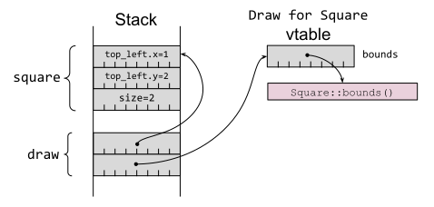 图 2-1.特征对象布局，包含指向具体项目的指针和指向vtable的指针
这意味着接受特征对象的函数不需要泛型，也不需要单态化：程序员使用特征对象编写函数，编译器只输出该函数的一个版本，它可以接受来自多种输入类型的特征对象：
/// Indicate whether an object is on-screen.
pub fn on_screen(draw: &dyn Draw) -> bool {
overlap(SCREEN_BOUNDS, draw.bounds()).is_some()
}
// Calls `on_screen(&dyn Draw) -> bool`.
let visible = on_screen(&square);
// Also calls `on_screen(&dyn Draw) -> bool`.
let visible = on_screen(&circle);
基本比较
这些基本事实已经允许在两种可能性之间进行一些直接比较：
- 泛型可能会导致代码量增大，因为编译器会为每个使用
on_screen函数泛型版本的T类型生成一份全新的代码副本（on_screen::<T>(&T)）。相比之下，该函数的特征对象版本（on_screen(&dyn T)）只需要生成一个实例。 - 从泛型中调用特征方法通常比从使用特征对象的代码中调用特征方法要稍微快一些，因为后者需要执行两次反引用来查找代码的位置（特征对象到 vtable，vtable 到实现位置）。
- 泛型的编译时间可能会更长，因为编译器要编译更多代码，链接器要做更多工作来折叠重复代码。
在大多数情况下，这些差异并不显著--只有当你测量了优化的影响并发现它确实会产生影响（速度瓶颈或占用率增加）时，才应将优化相关的问题作为主要的决策驱动因素。
更重要的区别在于，通用特征约束可用于有条件地提供不同的功能，这取决于类型参数是否实现了多个特征：
// The `area` function is available for all containers holding things
// that implement `Draw`.
fn area<T>(draw: &T) -> i64
where
T: Draw,
{
let bounds = draw.bounds();
(bounds.bottom_right.x - bounds.top_left.x)
* (bounds.bottom_right.y - bounds.top_left.y)
}
// The `show` method is available only if `Debug` is also implemented.
fn show<T>(draw: &T)
where
T: Debug + Draw,
{
println!("{:?} has bounds {:?}", draw, draw.bounds());
}
let square = Square {
top_left: Point { x: 1, y: 2 },
size: 2,
};
let circle = Circle {
center: Point { x: 3, y: 4 },
radius: 1,
};
// Both `Square` and `Circle` implement `Draw`.
println!("area(square) = {}", area(&square));
println!("area(circle) = {}", area(&circle));
// `Circle` implements `Debug`.
show(&circle);
// `Square` does not implement `Debug`, so this wouldn't compile:
// show(&square);
特征对象只对单个特征的实现虚表进行编码，因此要做与之等价的事情就比较麻烦。例如，可以为 show() 情况定义一个组合 DebugDraw 特征，同时定义一个空白实现，以方便使用：
trait DebugDraw: Debug + Draw {}
/// Blanket implementation applies whenever the individual traits
/// are implemented.
impl<T: Debug + Draw> DebugDraw for T {}
但是，如果存在不同特征的多种组合，这种方法的组合学显然会迅速变得臃肿不堪。
更多特征约束
除了使用特征约束来限制泛型函数可接受的类型参数外，还可以将其应用于特征定义本身：
/// Anything that implements `Shape` must also implement `Draw`.
trait Shape: Draw {
/// Render that portion of the shape that falls within `bounds`.
fn render_in(&self, bounds: Bounds);
/// Render the shape.
fn render(&self) {
// Default implementation renders that portion of the shape
// that falls within the screen area.
if let Some(visible) = overlap(SCREEN_BOUNDS, self.bounds()) {
self.render_in(visible);
}
}
}
在本例中，render() 方法的默认实现（第13条）使用了特征 bound，依赖于 Draw 中的 bounds() 方法。
来自面向对象语言的程序员经常会混淆特征约束和继承，误以为这样的特征约束意味着 Shape 就是 Draw。事实并非如此：这两种类型之间的关系最好表述为 Shape 也实现了 Draw。
从底层来看，那些具有特征约束的特征对象：
let square = Square {
top_left: Point { x: 1, y: 2 },
size: 2,
};
let draw: &dyn Draw = □
let shape: &dyn Shape = □
有一个组合的虚表，其中包括顶层特征的方法以及所有特征约束的方法。如图 2-2 所示：Shape 的虚表包括 Draw 特征的 bounds 方法，以及 Shape 特征本身的两个方法。
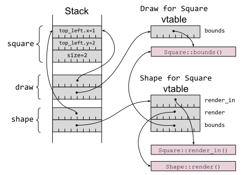
图 2-2.具有 Draw 与 Shape 两种虚表的具有特征约束的特征对象
在撰写本文时（截至Rust 1.70版本），没有办法从 Shape 向上转型到 Draw，因为无法在运行时恢复（纯净的） Draw 虚表；没有办法在相关的特征对象之间进行转换，这反过来又意味着没有里氏替换原则（Liskov substitution）。然而，这种情况很可能在 Rust 的后续版本中发生变化——有关更多信息，请参见第19条。
用不同的语言重复同样的观点，接受 Shape 特征对象的方法具有以下特征：
- 它可以使用
Draw的方法（因为Shape也实现了Draw，而且Shape虚表中存在相关函数指针）。 - 它还不能将特征对象传递给另一个期望使用
Draw特征对象的方法（因为Shape不是Draw，而且Draw虚表也不可用）。
相比之下，接受实现 Shape 的泛型方法具有以下特征：
- 它可以使用
Draw方法。 - 它可以将项目传递给另一个具有
Draw特征约束的泛型方法，因为特征约束在编译时被单态化为使用具体类型的Draw方法。
特征对象安全
对特征对象的另一个限制是对对象安全的要求：只有符合以下两条规则的特征才能用作特征对象：
- 特征方法不能是通用的。
- 特征的方法不能涉及包含
Self的类型，但接收方（调用方法的对象）除外。
第一个限制很容易理解：泛型方法 f 是一组无限多的方法，可能包含 f::<i16>, f::<i32>, f::<i64>, f::<u8> 等。另一方面，特征对象的虚表在很大程度上是指针函数的有限集合，因此不可能将无限的单态实现集放入其中。
第二种限制比较微妙，但往往是在实践中更常遇到的限制--使用 Copy 或 Clone 特征约束（第10条）的特征会立即受到这条规则的限制，因为它们返回的是 Self。如果代码调用（例如） let y = x.clone()，会发生什么情况？调用代码需要在堆栈中为 y 预留足够的空间，但它不知道 y 的大小，因为 Self 是一个任意类型。因此，提及 Self 的返回类型会导致特征对对象不安全2。
第二个限制有一个例外。如果 Self 对编译时已知大小的类型有明确的限制，即 Sized 标记特征作为特征，那么返回某种 Self 相关类型的方法就不会影响对象的安全性：
/// A `Stamp` can be copied and drawn multiple times.
trait Stamp: Draw {
fn make_copy(&self) -> Self
where
Self: Sized;
}
let square = Square {
top_left: Point { x: 1, y: 2 },
size: 2,
};
// `Square` implements `Stamp`, so it can call `make_copy()`.
let copy = square.make_copy();
// Because the `Self`-returning method has a `Sized` trait bound,
// creating a `Stamp` trait object is possible.
let stamp: &dyn Stamp = □
这种特征约束意味着该方法无论如何都不能与特征对象一起使用，因为特征指的是未知大小的东西（dyn Trait），所以该方法违背了对象安全：
// However, the method can't be invoked via a trait object.
let copy = stamp.make_copy();
error: the `make_copy` method cannot be invoked on a trait object
--> src/main.rs:397:22
|
353 | Self: Sized;
| ----- this has a `Sized` requirement
...
397 | let copy = stamp.make_copy();
| ^^^^^^^^^
权衡取舍
从目前各种因素的权衡来看，你应该更倾向于使用泛型而非特征对象，但在某些情况下，特征对象才是最合适的工具。
首先是实际考虑：如果生成代码的大小或编译时间是个问题，那么特征对象的性能会更好（如本项目前面所述）。
从理论上讲，特征对象从根本上涉及类型擦除：在转换为特征对象的过程中，具体类型的信息会丢失。这可能是一个缺点（见第19条），但它也可能是有用的，因为它允许异构对象的集合--因为代码只依赖于特质的方法，它可以调用和组合具有不同具体类型的项的方法。
渲染形状列表的传统面向对象例子就是一个例子：在同一个循环中，可以对正方形、圆形、椭圆形和星形使用相同的 render() 方法：
let shapes: Vec<&dyn Shape> = vec![&square, &circle];
for shape in shapes {
shape.render()
}
当编译时还不知道可用类型时，特征对象的潜在优势就显得模糊得多。如果新代码在运行时被动态加载（例如通过dlopen(3)），那么在新代码中实现特征的项目只能通过特征对象调用，因为没有源代码可以单态化。
原文点这里查看
注释
使用"impl Trait in argument position"并不完全等同于前两个版本，因为它取消了调用者通过类似on_screen::<Circle>(&c)这样的方式明确指定类型参数的功能。
在撰写本文时，对返回 Self 的方法的限制包括像 Box<Self> 这样可以安全地存储在堆栈中的类型；这一限制将来可能会放宽。
第 13 条：使用默认实现来减少必需实现的 trait 方法
在设计 trait 时，需要考虑两种不同的受众：实现 trait 的人和使用 trait 的人。在 trait 设计中，这两种受众之间存在一定的冲突：
- 为了让实现者实现 trait 更轻松，最好让 trait 具有实现其目的所需的最少方法。
- 为了让用户使用 trait 更方便，最好提供一系列覆盖所有常见用法的方法。
通过涵盖更多方便用户的方法，同时为那些可以从接口上其他更基础的操作构建的方法提供默认实现，可以缓解这种冲突。
来看一个简单的例子， ExactSizeIterator 是一个知道确切迭代内容的 Iterator，它的 is_empty() 方法有一个依赖于 len() 方法的默认实现：
#![allow(unused)] fn main() { fn is_empty(&self) -> bool { self.len() == 0 } }
存在默认的实现仅仅意味着它有一个默认值。如果 trait 的实现有不同的方法来判断迭代器是否为空，它也可以用自己的 is_empty() 替换默认实现。
这种方法使得 trait 定义具有少量必需的方法，以及大量默认实现的方法。实现者只需实现前者，即可随意使用所有后者。
Rust 标准库广泛采用了这种方法；Iterator trait 就是一个很好的例子，它只有一个必需方法（ next() ），但包含了大量预提供的方法（ 第9条 ），撰写本文时已经超过50个。
trait 方法可以添加 trait 约束，这意味着只有在相关类型实现特定 trait 时，目标方法才可用。这在结合默认方法实现时非常有用，Iterator 也印证了这点。例如，cloned() 的迭代器方法有一个 trait 约束和一个默认实现：
fn cloned<'a, T>(self) -> Cloned<Self>
where
T: 'a + Clone,
Self: Sized + Iterator<Item = &'a T>,
{
Cloned::new(self)
}
换句话说，cloned() 方法只有在 Item 的类型实现了 Clone trait 时才可用；一旦实现 Clone trait， clone() 方法也会自动实现。
关于带有默认实现的 trait 方法，最后一个要点是，即使在特征的初始版本发布之后，通常也可以安全地向 trait 添加新方法。只要新方法名不与类型实现的其他 trait 方法名冲突，就能保持向后兼容性（详见 第21条）。
因此，请参照标准库的示例，通过添加带有默认实现的方法（并根据需要添加 trait 约束），为实现者提供最少的 API 接口，但为用户提供方便且全面的 API 。
原文点这里查看
概念
本书的前两章涵盖了 Rust 的类型和特征，这有助于提供编写 Rust 代码所需的一些概念词汇 —— 这正是本章的主题。
借用检查器和生命周期检查是 Rust 独特之处的核心；它们也是 Rust 新手常见的绊脚石，因此是本章前两个条目的重点。
本章的其他条目涵盖了一些更容易理解但与其他语言编写代码略有不同的概念。这包括以下内容：
- 关于
Rust的unsafe模式及其避免方法的建议（第 16 条） - 关于在
Rust中编写多线程代码的好消息和坏消息（第 17 条） - 关于避免运行时终止的建议（第 18 条）
- 关于
Rust反射方法的信息（第 19 条） - 关于平衡优化与可维护性的建议（第 20 条）
尝试将你的代码与这些概念的后果对齐是一个好主意。在 Rust 中重现（部分）C/C++ 的行为是可能的，但如果你这样做，为什么还要麻烦使用 Rust 呢？
第 14 条：理解生命周期
这一条描述了 Rust 的生命周期，这是对先前的编译型语言（像 C 和 C++）中存在的概念的更精确的表述——不仅仅在理论上，更是在实践中。生命周期是第 15 条中描述的借用检查器的必要标注；总的来说，这些功能构成了 Rust 内存安全保证的核心。
介绍一下栈
生命周期在根本上跟栈有关，所以快速过一遍栈的知识。
当一个程序运行时，内存会被分成不同的区块，有时被称为段。其中一些块是固定大小的，比如包含程序代码和全局变量的块，但是有两个块——堆和栈——会随着程序运行而改变大小。为了实现这一点，堆和栈通常排列在程序虚拟内存的两端，因此一个可以向下增长，另外一个可以向上增长（至少在你的程序耗尽了内存并崩溃之前），如图 3-1 所示。
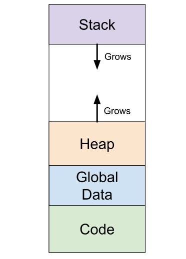图 3-1. 程序内存布局，包括堆向上增长和栈向下增长
对于这两个动态大小的块来说，栈用来保存与当前执行的函数相关的状态。该状态可能包含以下元素：
- 传递给函数的参数
- 函数中的局部变量
- 函数计算的临时值
- 函数调用者在代码中的返回地址
当调用函数f()，一个新的栈帧(stack frame)会被添加到栈中，当超出栈帧结束的位置时，CPU 通常会更新栈指针寄存器，去指向新的栈帧。
当内部函数f()返回，栈指针会被重置到调用函数之前的位置，也就是调用者的完整且未修改的栈帧。
如果调用者随后调用了一个不同的函数g()，这个过程会再次发生，这意味着g()的栈帧将复用f()先前使用的同一块内存区域（如图 3-2 所示）：
#![allow(unused)] fn main() { fn caller() -> u64 { let x = 42u64; let y = 19u64; f(x) + g(y) } fn f(f_param: u64) -> u64 { let two = 2u64; f_param + two } fn g(g_param: u64) -> u64 { let arr = [2u64, 3u64]; g_param + arr[1] } }
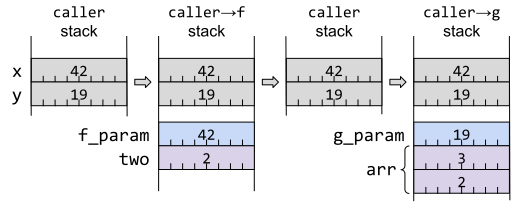
图 3-2. 随着函数调用和返回，栈使用的演变
当然，这是实际情况的极大简化之后的版本——将东西放入栈或取出栈需要时间，所以实际上处理器会有很多优化。然而，这个简化的概念图已经足以理解本条的主题。
生命周期的演化
上一小节解释了参数和局部变量是如何在栈上存储的，同时指出了这些值只是临时存储的。
从历史上来说，这会允许出现一些危险情况：当你持有一个指向这些栈上临时值的指针，会发生什么？
对最开始的 C 来说，返回局部变量的指针是完全可以的（尽管现代编译器会警告）：
/* C code. */
struct File {
int fd;
};
struct File* open_bugged() {
struct File f = { open("README.md", O_RDONLY) };
return &f; /* return address of stack object! */
}
如果你不幸并且立刻使用了调用代码的返回值，你或许会避开这段代码导致的问题：
struct File* f = open_bugged();
printf("in caller: file at %p has fd=%d\n", f, f->fd);
in caller: file at 0x7ff7bc019408 has fd=3
这是不幸的，因为它只是看起来有效。一旦发生任何其他函数调用，栈区域被复用，并且用于保存对象的区域将会被覆盖：
investigate_file(f);
/* C code. */
void investigate_file(struct File* f) {
long array[4] = {1, 2, 3, 4}; // put things on the stack
printf("in function: file at %p has fd=%d\n", f, f->fd);
}
in function: file at 0x7ff7bc019408 has fd=1592262883
这个示例中，丢弃对象的内容会产生额外的不良副作用：打开的文件对应的文件描述符丢失了，因此程序泄漏了结构体中保存的资源。
发展到 C++后，失去资源访问权的问题通过包含析构函数得到了解决，从而启用了 RAII（参考第 11 条）。现在，栈上的东西有了自我清理的能力：如果对象持有某种资源，析构函数可以清理它，并且 C++编译器确保了在清理栈帧的过程中调用栈上对象的析构函数：
// C++ code.
File::~File() {
std::cout << "~File(): close fd " << fd << "\n";
close(fd);
fd = -1;
}
调用者现在获得了一个指向已被销毁并且它的资源已经被回收的对象的（无效）指针：
File* f = open_bugged();
printf("in caller: file at %p has fd=%d\n", f, f->fd);
~File(): close fd 3
in caller: file at 0x7ff7b6a7c438 has fd=-1
然而，C++没有采取任何措施来解决悬垂指针的问题：持有一个指向已经销毁对象（通过调用析构函数）的指针仍是可能的：
// C++ code.
void investigate_file(File* f) {
long array[4] = {1, 2, 3, 4}; // put things on the stack
std::cout << "in function: file at " << f << " has fd=" << f->fd << "\n";
}
in function: file at 0x7ff7b6a7c438 has fd=-183042004
作为一个 C/C++程序员，取决于你来注意这一点，并确保你不会解引用一个指向已消失内容的指针。或者，如果你是一名攻击者并且发现一个悬垂指针，那么你很可能疯狂地咯咯笑，并且利用该漏洞，兴高采烈地解引用该指针。
对于 Rust 来说。Rust 核心吸引力就是从根本上解决了悬垂指针的问题，这立即解决了一堆安全问题。1
为了这一点需要把生命周期的概念从后台（C/C++程序员只需要知道注意它们，没有任何语言支持）拿到前台来：每个包含&符号的类型都有一个关联的生命周期('a)，即使编译器允许你在大部分时间忽略它。
生命周期的作用域
一个在栈上的数据的生命周期是保证它在栈上同一个位置的时间段；换句话说，生命周期是保证对该数据的引用（指针）不会变得无效的时间段。
一个数据的生命周期从被创建开始，一直到该数据被 drop（Rust 中与 C++中对象销毁相同的概念）或被移动。
Rust 中生命周期的普遍性有时会让来自 C/C++的程序员惊讶：很多情况下，Rust 将数据从栈上的一个位置移动到另一个位置，或者从栈移动到堆上，或者从堆移动到栈上。
该数据被自动 drop 的确切位置取决于该数据是否有一个名称。
局部变量和函数参数都提供了名称，并且对应的生命周期从该数据有名称开始：
- 对于局部变量：在
let var = ...处声明 - 对于函数参数：作为函数调用执行框架设置的一部分
当有名称的数据被移动或者名称超出范围，该命名数据的生命周期就会结束：
#![allow(unused)] fn main() { #[derive(Debug, Clone)] /// 某数据的定义 pub struct Item { contents: u32, } }
#![allow(unused)] fn main() { { let item1 = Item { contents: 1 }; // `item1` 数据 1 在此创建 let item2 = Item { contents: 2 }; // `item2` 数据 2 在此创建 println!("item1 = {item1:?}, item2 = {item2:?}"); consuming_fn(item2); // `item2` 数据 2 在此被移动 } // `item1` 数据 1 在此被drop }
还可以“即时”地创建一个数据，作为要传入到其他数据的一部分。这些未命名的数据在不再需要时被 drop。考虑这个问题一个简单但有效的方法是想象表达式的每个部分都会展开它自己的块，通过编译器插入临时变量。例如，这样的表达式：
#![allow(unused)] fn main() { let x = f((a + b) * 2); }
大致相当于：
#![allow(unused)] fn main() { let x = { let temp1 = a + b; { let temp2 = temp1 * 2; f(temp2) } // `temp2` 临时数据 2 在这里drop }; // `temp1` 临时数据 1 在这里drop }
当执行到原始行末尾的分号时，临时数据已经全部被 drop。
查看编译器计算数据生命周期的一种方法是插入一个故意的错误，来让借用检查器（第 15 条）检测。例如，保留对超出生命周期的数据的引用：
#![allow(unused)] fn main() { let r: &Item; { let item = Item { contents: 42 }; r = &item; } println!("r.contents = {}", r.contents); }
错误消息会指明item的生命周期的确切终点：
error[E0597]: `item` does not live long enough
--> src/main.rs:190:13
|
189 | let item = Item { contents: 42 };
| ---- binding `item` declared here
190 | r = &item;
| ^^^^^ borrowed value does not live long enough
191 | }
| - `item` dropped here while still borrowed
192 | println!("r.contents = {}", r.contents);
| ---------- borrow later used here
同样的，对于未命名的临时数据：
#![allow(unused)] fn main() { let r: &Item = fn_returning_ref(&mut Item { contents: 42 }); println!("r.contents = {}", r.contents); }
错误消息显示了表达式末尾的终点：
error[E0716]: temporary value dropped while borrowed
--> src/main.rs:209:46
|
209 | let r: &Item = fn_returning_ref(&mut Item { contents: 42 });
| ^^^^^^^^^^^^^^^^^^^^^ - temporary
| | value is freed at the
| | end of this statement
| |
| creates a temporary value which is
| freed while still in use
210 | println!("r.contents = {}", r.contents);
| ---------- borrow later used here
|
= note: consider using a `let` binding to create a longer lived value
关于引用生命周期的最后一点：如果编译器可以自证代码中某处之外没有再使用该引用，那么它将引用的生命周期的末尾端点视为最后使用的位置，而不是在一个中括号范围的末尾。这个特性被称为非词法生命周期（NLL），这允许借用检查器更灵活一些：
#![allow(unused)] fn main() { { // `s` 拥有 `String`。 let mut s: String = "Hello, world".to_string(); // 创建一个 `String` 的可变引用 let greeting = &mut s[..5]; greeting.make_ascii_uppercase(); // .. 在这之后没再使用 `greeting` // 创建一个 `String` 的不可变引用是允许的， // 即使这里有一个可变引用还在该中括号范围内 let r: &str = &s; println!("s = '{}'", r); // s = 'HELLO, world' } // 可变引用 `greeting` 会在这里被drop }
生命周期标注
尽管 Rust 中处理引用时生命周期无处不在，但是你不必详细标注——没有人会说：“我正在处理ref.rs从第 17 行延伸到第 32 行的生命周期”。相反，代码中的引用有任意名称的生命周期，通常是'a，'b，'c等等，并且编译器有其自己的内部，不可访问的表示形式，这些表示形式相当于源代码中内容。（唯一例外是'static生命周期，这是一个特殊情况，后续将会介绍。）
你不必对生命周期的名称考虑太多；主要考虑的事情是比较一个名称和另一个名称，或重复名称来标注两个生命周期是“相同的”。
这种生命周期标注最容易用函数签名来说明：如果函数的输入和输出需要处理引用，那么它们的生命周期之间是什么关系？
最常见的情况就是接收单个引用作为输入并返回一个引用的函数。返回的引用必须有一个生命周期，那么是什么呢？这里只有一种可能（除了'static）可供选择：输入的生命周期，这意味着它们共享相同的名称，例如'a。把该名称作为生命周期标注，添加给这两个类型会得到：
#![allow(unused)] fn main() { pub fn first<'a>(data: &'a [Item]) -> Option<&'a Item> { // ... } }
因为这种情况非常常见，并且因为（几乎）没有选择关于输出的生命周期应该是什么，Rust 具有生命周期省略规则，这意味着你不必为这种情况显式标注生命周期名称。相同的函数签名更惯用的版本应该是这样的：
#![allow(unused)] fn main() { pub fn first(data: &[Item]) -> Option<&Item> { // ... } }
所涉及的引用仍具有生命周期——省略规则只是意味着你不必编写任何生命周期名称并在这两个地方使用它。
如果有不止一种输入的生命周期选择可以映射到返回值的生命周期呢？这种情况下，编译器无法弄清楚该怎么做：
#![allow(unused)] fn main() { pub fn find(haystack: &[u8], needle: &[u8]) -> Option<&[u8]> { // ... } }
error[E0106]: missing lifetime specifier
--> src/main.rs:56:55
|
56 | pub fn find(haystack: &[u8], needle: &[u8]) -> Option<&[u8]> {
| ----- ----- ^ expected named
| lifetime parameter
|
= help: this function's return type contains a borrowed value, but the
signature does not say whether it is borrowed from `haystack` or
`needle`
help: consider introducing a named lifetime parameter
|
56 | pub fn find<'a>(haystack: &'a [u8], needle: &'a [u8]) -> Option<&'a [u8]> {
| ++++ ++ ++ ++
基于函数和参数名称的精明的假设是，此处输出的预期生命周期应该和输入的haystack匹配：
#![allow(unused)] fn main() { pub fn find<'a, 'b>( haystack: &'a [u8], needle: &'b [u8], ) -> Option<&'a [u8]> { // ... } }
有趣的是，编译器建议了一种不同的替代方式：让函数的两个输入使用相同的生命周期'a。例如，以下这个函数其中的生命周期组合或许会有意义：
#![allow(unused)] fn main() { pub fn smaller<'a>(left: &'a Item, right: &'a Item) -> &'a Item { // ... } }
这似乎暗示输入的两个生命周期是“一样的”，但这话用了引号（这里和之前）表明情况并非如此。
设计生命周期的原因就是确保数据的引用不会活得比数据本身更长；考虑这点，输出的生命周期'a与输入的生命周期'a“相同”，只是意味着输入必须比输出活得久。
当两个生命周期都是“相同的”'a时，这仅意味着输出的生命周期必须包含在两个输入的生命周期内。
#![allow(unused)] fn main() { { let outer = Item { contents: 7 }; { let inner = Item { contents: 8 }; { let min = smaller(&inner, &outer); println!("smaller of {inner:?} and {outer:?} is {min:?}"); } // `min` dropped } // `inner` dropped } // `outer` dropped }
换句话说，输出的生命周期必须包含在两个输入寿命中较小的那一个。
相反，如果生命周期与输入之一的生命周期无关，则不需要这些生命周期嵌套。
#![allow(unused)] fn main() { { let haystack = b"123456789"; // 生命周期 'a 开始 let found = { let needle = b"234"; // 生命周期 'b 开始 find(haystack, needle) }; // 生命周期 'b 结束 println!("found={:?}", found); // `found` 在 'a 内部， 在 'b 外部使用 } // 声明周期 'a 结束 }
生命周期省略规则
除了前面描述的“一入，一出”的省略规则之外，还有另外两种可以省略标注名称的规则。
第一种情况是函数的输出没有引用；这种情况下，输入的引用都会自动获得自己的生命周期，且与其他输入的参数不同。
第二种情况是方法中有self的引用（&self或&mut self）；这种情况下，编译器会假设任何输出的引用的生命周期与self相同，因为这（到目前为止）是最常见的情况。
以下是函数生命周期省略规则的总结：
- 一个输入，一个或者多个输出：假设输入和输出有“相同的”生命周期：
#![allow(unused)] fn main() { fn f(x: &Item) -> (&Item, &Item) // ... 相当于 ... fn f<'a>(x: &'a Item) -> (&'a Item, &'a Item) }
- 多个输入，没有输出：假设所有输入都有不同的生命周期：
#![allow(unused)] fn main() { fn f(x: &Item, y: &Item, z: &Item) -> i32 // ... 相当于 ... fn f<'a, 'b, 'c>(x: &'a Item, y: &'b Item, z: &'c Item) -> i32 }
- 多个输入，包括
&self，一个或多个输入：假设输出的生命周期与&self的生命周期“相同”：
#![allow(unused)] fn main() { fn f(&self, y: &Item, z: &Item) -> &Thing // ... 相当于 ... fn f(&'a self, y: &'b Item, z: &'c Item) -> &'a Thing }
当然，如果省略的生命周期标注没有达到你的预期，你仍可以显式标注生命周期来指定哪些生命周期彼此相关。实际上，这会导致编译报错，该错误表明省略的生命周期不能匹配函数或调用者涉及的引用。
'static生命周期
上一节描述了函数的输入和输出的引用的生命周期之间的各种可能的映射，但是忽略了一种特殊情况。如果没有输入生命周期，但输出的返回值仍然包含引用会发生什么？
#![allow(unused)] fn main() { pub fn the_answer() -> &Item { // ... } }
error[E0106]: missing lifetime specifier
--> src/main.rs:471:28
|
471 | pub fn the_answer() -> &Item {
| ^ expected named lifetime parameter
|
= help: this function's return type contains a borrowed value, but there
is no value for it to be borrowed from
help: consider using the `'static` lifetime
|
471 | pub fn the_answer() -> &'static Item {
| +++++++
唯一允许的改正是对于返回的引用，有一个生命周期保证永远它不会超出作用范围。这是由特殊的生命周期'static来标注的，它也是唯一一个特定名称而不是任意占位符名称的生命周期。
#![allow(unused)] fn main() { pub fn the_answer() -> &'static Item { }
获取有'static生命周期的引用最简单的方法是引用已经标记为static的全局变量：
#![allow(unused)] fn main() { static ANSWER: Item = Item { contents: 42 }; pub fn the_answer() -> &'static Item { &ANSWER } }
Rust 编译器保证这个static变量在整个程序的持续时间中具有相同的地址并永远不会移动。这意味着static变量具有'static生命周期，从逻辑上来说是这样。
很多情况下，对const变量的引用也会被提升为'static生命周期，但是有一些小的副作用需要注意。首先，如果涉及的类型具有析构函数或者内部可变性，则不会发生此提升：
#![allow(unused)] fn main() { pub struct Wrapper(pub i32); impl Drop for Wrapper { fn drop(&mut self) {} } const ANSWER: Wrapper = Wrapper(42); pub fn the_answer() -> &'static Wrapper { // `Wrapper` 有析构函数，所以const变量的引用无法提升到 `'static` 生命周期 &ANSWER } }
error[E0515]: cannot return reference to temporary value
--> src/main.rs:520:9
|
520 | &ANSWER
| ^------
| ||
| |temporary value created here
| returns a reference to data owned by the current function
第二个潜在副作用是，只有const的值才能保证在各处都相同；无论变量在何处被使用，编译器都可以根据需要制作任意份拷贝。如果你正在依赖'static引用背后的底层指针值来做些邪恶事，请注意这可能涉及多个内存位置。
还有一种方法来获取具有'static生命周期的引用。'static主要承诺了该生命周期应该比程序中任何其他生命周期都长；在堆上分配且从未释放的值也满足此约束。
普通的堆上分配Box<T>在此处不起作用，因为不能保证（如下一节所述）该数据不会在超出作用域后被丢弃。
#![allow(unused)] fn main() { { let boxed = Box::new(Item { contents: 12 }); let r: &'static Item = &boxed; println!("'static item is {:?}", r); } }
error[E0597]: `boxed` does not live long enough
--> src/main.rs:344:32
|
343 | let boxed = Box::new(Item { contents: 12 });
| ----- binding `boxed` declared here
344 | let r: &'static Item = &boxed;
| ------------- ^^^^^^ borrowed value does not live long enough
| |
| type annotation requires that `boxed` is borrowed for `'static`
345 | println!("'static item is {:?}", r);
346 | }
| - `boxed` dropped here while still borrowed
然而，Box::leak函数可以把已有所有权的Box<T>变为T的可变引用。不再有所有者拥有该值的所有权，因此它将会永远不会被删除——这满足了'static生命周期的要求：
#![allow(unused)] fn main() { { let boxed = Box::new(Item { contents: 12 }); // `leak()` 销毁了 `Box<T>` 并返回 `&mut T`. let r: &'static Item = Box::leak(boxed); println!("'static item is {:?}", r); } // `boxed` 在这里没被drop，因为它被移动进了 `Box::leak()` // 因为 `r` 没有超出作用域，`Item` 被永远的泄漏了。 }
无法 drop 该数据，也意味着永远无法使用 safe Rust 来回收该数据的内存，这可能会导致永久性的内存泄漏。（注意，这块泄漏的内存并不违反 Rust 的内存安全保证——内存中永远无法访问的数据仍然是安全的。）
生命周期和堆
到目前为止的讨论集中在栈上数据的生命周期，无论是函数参数，局部变量或临时变量。但堆上的数据又如何呢？
关于堆上的值要认识到关键的事情是每块数据都有一个所有者（除了特殊情况，例如上一节描述的故意泄漏(leak)）。例如，一个简单的Box<T>就可以把T的值放堆上，同时变量也就是所有者拥有Box<T>的所有权。
#![allow(unused)] fn main() { { let b: Box<Item> = Box::new(Item { contents: 42 }); } // `b` 在此drop，那么 `Item` 也drop了。 }
拥有所有权的Box<Item>在超出生命周期范围后 drop 了里面的数据，因此堆上的Item的生命周期与栈上的的Box<Item>相同。
堆上的值的所有者本身可能也在堆上，而不是栈上，那么此时谁拥有该所有者？
#![allow(unused)] fn main() { { let b: Box<Item> = Box::new(Item { contents: 42 }); let bb: Box<Box<Item>> = Box::new(b); // `b` 被移动到堆上 } // `bb` 在此drop，那么 `Box<Item>` 也drop了，那么 `Item` 也drop了。 }
所有权链必须在某处结束，并只有两种可能性：
- 该链以局部变量或函数参数结束——这种情况下该链中所有数据的生命周期就是栈上变量的生命周期
'a。当栈上的变量超出作用域，该链上所有数据也都被 drop。 - 该链以标记了
static的全局变量结束——这种情况下，链中所有的数据的生命周期都是'static的，static变量永远不会超出作用域，所以链中任何内容都不会被自动 drop。
总结，堆上数据的生命周期根本上是绑定到栈上的生命周期。
结构体中的生命周期
前面关于生命周期的章节集中于函数的输入和输出，但是存储在结构体中的引用也存在类似问题。
如果试图在不使用生命周期标注的情况下，偷偷把引用放到结构体中，编译器会发生尖锐的爆鸣声：
#![allow(unused)] fn main() { pub struct ReferenceHolder { pub index: usize, pub item: &Item, } }
error[E0106]: missing lifetime specifier
--> src/main.rs:548:19
|
548 | pub item: &Item,
| ^ expected named lifetime parameter
|
help: consider introducing a named lifetime parameter
|
546 ~ pub struct ReferenceHolder<'a> {
547 | pub index: usize,
548 ~ pub item: &'a Item,
|
像往常一样，编译器错误信息告诉我们应该怎么做。第一部分很简单：为引用类型显式标注一个生命周期'a，因为结构体中使用引用没有生命周期省略规则。
第二部分不太明显，但具有更深层次的影响：结构体本身需要一个生命周期参数<'a>，它与包含的引用的生命周期相匹配：
#![allow(unused)] fn main() { // 由于字段有引用，所以结构体需要有生命周期参数 pub struct ReferenceHolder<'a> { pub index: usize, pub item: &'a Item, } }
结构体的生命周期参数具有传染性：任何结构体包含了该类型也必须获取一个生命周期参数：
#![allow(unused)] fn main() { // 由于字段有生命周期参数，所以结构体需要有生命周期参数 pub struct RefHolderHolder<'a> { pub inner: ReferenceHolder<'a>, } }
如果结构体包含切片类型，则也需要生命周期参数，因为它们又是对借用数据的引用。
如果结构体包含多个相互关联的生命周期的字段，那么你必须选择合适的生命周期绑定。在一对字符串内查找公共子串是一个非常好的具有独立生命周期的例子：
#![allow(unused)] fn main() { /// 一对字符串的公共子串存在的位置 pub struct LargestCommonSubstring<'a, 'b> { pub left: &'a str, pub right: &'b str, } /// 在 `left` 和 `right` 字符串中找到最长公共子串 pub fn find_common<'a, 'b>( left: &'a str, right: &'b str, ) -> Option<LargestCommonSubstring<'a, 'b>> { // ... } }
而引用同一字符串的多个位置的结构体，将具有共同的生命周期：
#![allow(unused)] fn main() { /// 在一个字符串内重复的两个子串 pub struct RepeatedSubstring<'a> { pub first: &'a str, pub second: &'a str, } /// 找到 `s` 中第一个重复子串。 pub fn find_repeat<'a>(s: &'a str) -> Option<RepeatedSubstring<'a>> { // ... } }
生命周期参数的传播是有意义的：任何包含引用的东西，无论嵌套多深，都仅在所引用数据的生命周期内有效。如果该数据被移动或 drop，那么整个结构体嵌套链都不再有效。
然而，这也意味着涉及引用的结构体更难使用——结构体的所有者必须保证生命周期全部一致。因此，尽可能选择拥有其内部数据所有权的结构体，特别是在代码不需要高度优化(第 20 条)的情况下。如果做不到这一点，第 8 条描述的各种智能指针类型(例如Rc)可以让你生命周期约束中解放出来。
匿名生命周期
当不能保证一个结构体拥有其数据的所有权时，结构体必然会以生命周期参数结束，如上一节所述。这可能会与本条之前说的生命周期省略规则产生一些不幸。
例如，考虑一个返回带有生命周期参数的结构体的函数。该函数的完全显式标注使涉及的生命周期变得清晰易读：
#![allow(unused)] fn main() { pub fn find_one_item<'a>(items: &'a [Item]) -> ReferenceHolder<'a> { // ... } }
然而，省略生命周期的相同标注可能会有点误导：
pub fn find_one_item(items: &[Item]) -> ReferenceHolder {
// ...
}
因为返回类型的生命周期参数被省略，因此阅读代码的人不会得到太多涉及生命周期的提示。
匿名生命周期'_允许你将省略的生命周期标注出来，而无需恢复所有生命周期名称。
#![allow(unused)] fn main() { pub fn find_one_item(items: &[Item]) -> ReferenceHolder<'_> { // ... } }
粗略地说，'_标注要求编译器为我们生成一个唯一的生命周期名称，我们可以在不需要其他地方使用该名称的情况下使用它。
这意味着对于其他生命周期省略场景也很有用。例如，Debug trait 的fmt方法，使用匿名生命周期来指示Formatter实例具有和&self不同的生命周期，但该生命周期是什么名称并不重要：
#![allow(unused)] fn main() { pub trait Debug { fn fmt(&self, f: &mut Formatter<'_>) -> Result<(), Error>; } }
牢记
- 所有的 Rust 引用都有一个关联的生命周期，由生命周期标签(比如
'a)指示。在某些常见情况下，函数参数和返回值的生命周期可以省略（但仍然存在）。 - 任何（传递地）包含引用的结构体都有关联的生命周期参数；因此，使用拥有其数据所有权的结构体通常更容易。
'static生命周期用来保证永远不会超出作用域的数据的引用，例如全局数据或堆上已经显式泄漏的数据。- 生命周期标签只能指示生命周期是“相同的”，这意味着输出的生命周期被包含在输入的一个（或更多）生命周期内。
- 匿名生命周期
'_可以用在不需要特定生命周期标签的地方。
注释
例如，Chromium 项目估计70%的安全 bug 都归咎于内存安全。
原文点这里查看
第 15 条：理解借用检查器
Rust 中的每一个值都有一个所有者，但该所有者可以将值借用到代码中的其他位置。这种借用机制涉及引用的创建和使用。并遵守借用检查器(本条的主题)的规则。
抛开表面，Rust 引用使用与 C 或 C++代码中相当常见的相同类型指针值（第 8 条），但为了确保避免 C/C++中的错误，这个指针有规则和限制。来快速比较一下：
- 就像 C/C++指针一样，Rust 引用使用&符号创建：
&value。 - 就像 C++ 引用一样，Rust 引用不能为
nullptr。 - 就像 C/C++指针或引用一样，Rust 引用可以在创建后进行修改来引用不同内容。
- 与 C++ 不同，从值创建的引用总是需要显式（
&）传参——如果你看到这样的代码f(value)，你应该意识到f正在接收传入值的所有权。（但是，如果这个value的类型实现了Copy，那么它可能接收的是该数据的copy的所有权——详见第 10 条。） - 与 C/C++ 不同，新创建的可变引用总是显式标明（
&mut）。如果你看到了这样的代码f(&value)，你应该意识到value不能被改变（即 C/C++中的const）。只有像f(&mut value)这样的表达式才可能更改value的内容。1
C/C++指针和 Rust 引用之间最重要的区别由术语借用 (borrow) 表示：你可以获取某个数据的引用（指针），但是你不能永久持有该引用。特别是，你不能持有它活得比指向数据的生命周期更长，正如编译器所跟踪的生命周期，以及我们在第 14 条中探索过的一样。
这些对引用的限制使得 Rust 能保证其内存安全，但这也意味着你需要接受借用规则的学习成本，并接受它改变你如何设计软件的方式——尤其是存储数据的结构体。
本条会首先描述 Rust 的引用可以做什么，以及使用它们的借用检查器规则。本条的其余部分重点关注使用这些规则后更改代码的措施：如何重构，返工和重新设计代码，以便在与借用检查器斗争中获胜。
访问控制
有三种办法来访问一块 Rust 数据：通过这块数据的所有者(item)，引用(&item)，或可变引用(&mut item)。每种访问数据的方式都有不同的访问权。使用CRUD存储模型（增删改查）来粗略地概括（Rust drop 术语即 delete ）：
- 数据的所有者可以创建 (create)，读取 (read)，更新 (update)，或删除 (drop) 它。
- 可变引用可以从底层数据中读取，或更新它。
- （普通）引用只能读取底层数据。
这儿有个 Rust 独有的数据访问规则：只有该数据的所有者可以移动该数据。如果你认为移动就是创建（在新位置）并drop这些数据占用的内存（在旧位置）的某种组合，这或许有点道理。
对于一块数据的可变引用的代码，这可能会导致一些奇怪情况。例如，下面替换Option内部值是允许的：
#![allow(unused)] fn main() { /// 这段代码使用的结构体。 #[derive(Debug)] pub struct Item { pub contents: i64, } /// 替换 `item` 的 content 为 `val`. pub fn replace(item: &mut Option<Item>, val: Item) { *item = Some(val); } }
但是返回之前的值的操作违反了移动限制：2
#![allow(unused)] fn main() { /// 替换 `item` 的 content 为 `val`，返回之前的 content pub fn replace(item: &mut Option<Item>, val: Item) -> Option<Item> { let previous = *item; // 移出所有权 *item = Some(val); // 替换 previous } }
error[E0507]: cannot move out of `*item` which is behind a mutable reference
--> src/main.rs:34:24
|
34 | let previous = *item; // move out
| ^^^^^ move occurs because `*item` has type
| `Option<inner::Item>`, which does not
| implement the `Copy` trait
|
help: consider removing the dereference here
|
34 - let previous = *item; // move out
34 + let previous = item; // move out
|
尽管从一个可变引用读取是有效的，但这段代码尝试在用新值替换该被移动的值之前，将值移出——并试图避免复制(copy)原始值。借用检查器非常保守，并注意到在两行中间存在一段可变引用未引用有效值的时间段。
对人来说，我们知道这种组合操作——提取旧值并使用新值替换——是既安全又实用的，所以标准库提供了 std::mem::replace 函数。在底层上，replace 使用了 unsafe （参考第 16 条）来一次性执行交换：
#![allow(unused)] fn main() { /// 替换 `item` 的 content 为 `val`，返回之前的 content pub fn replace(item: &mut Option<Item>, val: Item) -> Option<Item> { std::mem::replace(item, Some(val)) // 返回之前的值 } }
特别对于 Option 类型，由于这是一种非常常见的模式，所以 Option 自己提供了 replace 方法：
#![allow(unused)] fn main() { /// 替换 `item` 的 content 为 `val`，返回之前的 content pub fn replace(item: &mut Option<Item>, val: Item) -> Option<Item> { item.replace(val) // 返回之前的值 } }
借用规则
Rust 中借用引用时主要有两条关键规则需牢记。
第一条规则是任何引用的作用域必须小于所引用的数据的生命周期。第 14 条详细讨论了生命周期，但是值得注意的是编译器对于引用生命周期有特殊行为；非词法生命周期特性允许引用生命周期缩短，以便让他们在最后一次使用时结束，而不是在中括号末尾结束。
借用引用的第二条规则是，除了数据的所有者之外，还可以是以下任一一种借用方式：
- 对数据的任意数量不可变引用
- 对数据的单个可变引用
当然，不能同时用两者（在代码中的同一个位置）。
因此，同一个数据的引用可以被传入参数为多个不可变引用的函数：
#![allow(unused)] fn main() { /// 判断两个参数是否都为零 fn both_zero(left: &Item, right: &Item) -> bool { left.contents == 0 && right.contents == 0 } let item = Item { contents: 0 }; assert!(both_zero(&item, &item)); }
但是参数有多个可变引用就不能了：
#![allow(unused)] fn main() { /// 判断两个参数是否都为零 fn zero_both(left: &mut Item, right: &mut Item) { left.contents = 0; right.contents = 0; } let mut item = Item { contents: 42 }; zero_both(&mut item, &mut item); }
error[E0499]: cannot borrow `item` as mutable more than once at a time
--> src/main.rs:131:26
|
131 | zero_both(&mut item, &mut item);
| --------- --------- ^^^^^^^^^ second mutable borrow occurs here
| | |
| | first mutable borrow occurs here
| first borrow later used by call
对于函数参数有可变引用和不可变引用的混合来说，也有同样的限制：
#![allow(unused)] fn main() { /// 把 `left` 的 content 设置为 `right` 的 content。 fn copy_contents(left: &mut Item, right: &Item) { left.contents = right.contents; } let mut item = Item { contents: 42 }; copy_contents(&mut item, &item); }
error[E0502]: cannot borrow `item` as immutable because it is also borrowed
as mutable
--> src/main.rs:159:30
|
159 | copy_contents(&mut item, &item);
| ------------- --------- ^^^^^ immutable borrow occurs here
| | |
| | mutable borrow occurs here
| mutable borrow later used by call
借用规则允许编译器对数据的别名作出更好的决策：即跟踪何时两个不同的指针可能或可能不，引用内存中同一个底层数据。如果编译器可以确定（正如 Rust 中那样）一些不可变引用所指向的内存位置，不会通过一个已设置别名的可变引用进行更改，那么编译器可以生成具有以下优点的代码：
- 得到更好的优化：例如值可以被缓存到寄存器中，因为已知底层的内存存储的内容不会同时改变。
- 更安全：线程之间对内存的不同步访问（第 17 条）不会引起数据竞争。
所有者操作
围绕引用存在的规则导致了一个重要后果，它们还会影响数据所有者可执行的操作。帮助理解这一点的一种方法是想象涉及所有者的操作是通过在幕后创建和使用引用来执行的。
例如，尝试通过数据所有者来更新数据相当于创建了一个临时的可变引用，然后通过这个引用来更新数据。如果另外一个引用已存在，那么这个名义上第二个可变引用将会无法被创建：
#![allow(unused)] fn main() { let mut item = Item { contents: 42 }; let r = &item; item.contents = 0; // ^^^ 更改这个 item 大概相当于 // (&mut item).contents = 0; println!("reference to item is {:?}", r); }
error[E0506]: cannot assign to `item.contents` because it is borrowed
--> src/main.rs:200:5
|
199 | let r = &item;
| ----- `item.contents` is borrowed here
200 | item.contents = 0;
| ^^^^^^^^^^^^^^^^^ `item.contents` is assigned to here but it was
| already borrowed
...
203 | println!("reference to item is {:?}", r);
| - borrow later used here
另一方面，由于多个不可变引用是被允许的，因此当存在不可变引用时，从所有者读取数据是可以的：
#![allow(unused)] fn main() { let item = Item { contents: 42 }; let r = &item; let contents = item.contents; // ^^^ 从 item 中读取大概相当于 // let contents = (&item).contents; println!("reference to item is {:?}", r); }
但是存在可变引用是不可以的：
#![allow(unused)] fn main() { let mut item = Item { contents: 42 }; let r = &mut item; let contents = item.contents; // i64 实现了 `Copy` r.contents = 0; }
error[E0503]: cannot use `item.contents` because it was mutably borrowed
--> src/main.rs:231:20
|
230 | let r = &mut item;
| --------- `item` is borrowed here
231 | let contents = item.contents; // i64 implements `Copy`
| ^^^^^^^^^^^^^ use of borrowed `item`
232 | r.contents = 0;
| -------------- borrow later used here
最后，任何处于活动状态的引用都会阻止数据的所有者移动或 drop 数据，因为这样的话，意味着引用将会引用无效的数据：
#![allow(unused)] fn main() { let item = Item { contents: 42 }; let r = &item; let new_item = item; // 移动 println!("reference to item is {:?}", r); }
error[E0505]: cannot move out of `item` because it is borrowed
--> src/main.rs:170:20
|
168 | let item = Item { contents: 42 };
| ---- binding `item` declared here
169 | let r = &item;
| ----- borrow of `item` occurs here
170 | let new_item = item; // move
| ^^^^ move out of `item` occurs here
171 | println!("reference to item is {:?}", r);
| - borrow later used here
这种情况下，第 14 条中描述的非词法生命周期非常有用，因为（粗略地说）它在最后一次使用引用后结束了生命周期，而不是在中括号封闭的结尾。在移动发生之前将引用的最终使用提前，意味着不会发生编译错误：
#![allow(unused)] fn main() { let item = Item { contents: 42 }; let r = &item; println!("reference to item is {:?}", r); // 引用 `r` 仍在作用域但是不再使用，所以它被当作该引用已经被 drop let new_item = item; // 正常进行移动 }
在与借用检查器斗争中获胜
Rust 新手（甚至更有经验的人！）常常会觉得他们在与借用检查器斗争中花费了太多时间。有什么方法可以帮助你赢得这些斗争？
本地代码重构
第一个策略是关注编译器的错误信息，因为 Rust 开发者已经付出了大量努力来让它们尽可能有用：
#![allow(unused)] fn main() { /// 如果 `needle` 存在于 `haystack` 中， 返回包含它的切片。 pub fn find<'a, 'b>(haystack: &'a str, needle: &'b str) -> Option<&'a str> { haystack .find(needle) .map(|i| &haystack[i..i + needle.len()]) } // ... let found = find(&format!("{} to search", "Text"), "ex"); if let Some(text) = found { println!("Found '{text}'!"); } }
error[E0716]: temporary value dropped while borrowed
--> src/main.rs:353:23
|
353 | let found = find(&format!("{} to search", "Text"), "ex");
| ^^^^^^^^^^^^^^^^^^^^^^^^^^^^^^^ - temporary value
| | is freed at the end of this statement
| |
| creates a temporary value which is freed while still in
| use
354 | if let Some(text) = found {
| ----- borrow later used here
|
= note: consider using a `let` binding to create a longer lived value
错误消息的第一部分是最重要的部分，因为它描述了编译器认为你违反哪些借用规则和原因。当你遇到足够多这样的错误时——你总会的——你会逐渐建立关于借用检查器的一种直觉，这种直觉与前面叙述的规则中包含的更理论化的版本相吻合。
错误消息的第二部分包括编译器对于如何修改该问题的建议，本例中是很简单的：
#![allow(unused)] fn main() { let haystack = format!("{} to search", "Text"); let found = find(&haystack, "ex"); if let Some(text) = found { println!("Found '{text}'!"); } // `found` 现在引用了 `haystack`，它可以活到函数以外 }
这是两个简单的代码调整实例之一，可以帮助“安抚”借用检查器：
- 扩展生命周期：使用
let将一个临时变量（生命周期只到该表达式结尾）绑定到一个新的被命名的局部变量（生命周期被扩展到该块的末尾）。 - 缩减生命周期：在使用的引用周围添加一个额外的块
{ ... }，以便其生命周期在新块的末尾结束。
后者不太常见，因为非词法生命周期的存在：编译器通常可以在引用在块末尾正式释放之前，提前判断出该引用不再被使用。但是，如果你确实发现自己反复在相似的小代码块中周围引入一个人为的中括号块，那么需要考虑是否应该将这些代码封装到一个独立的方法中。
编译器建议的修复对于简单的问题很有帮助，但是当你编写更复杂的代码时，你会发现这些建议不再有用，而且对不符合借用规则之处的解释更难以理解：
#![allow(unused)] fn main() { let x = Some(Rc::new(RefCell::new(Item { contents: 42 }))); // 调用函数签名 `check_item(item: Option<&Item>)` check_item(x.as_ref().map(|r| r.borrow().deref())); }
error[E0515]: cannot return reference to temporary value
--> src/main.rs:293:35
|
293 | check_item(x.as_ref().map(|r| r.borrow().deref()));
| ----------^^^^^^^^
| |
| returns a reference to data owned by the
| current function
| temporary value created here
这种情况下，临时引入一些局部变量会很有帮助，每个变量都对应了相应的转化步骤，并且每个变量都有对应的类型注解：
#![allow(unused)] fn main() { let x: Option<Rc<RefCell<Item>>> = Some(Rc::new(RefCell::new(Item { contents: 42 }))); let x1: Option<&Rc<RefCell<Item>>> = x.as_ref(); let x2: Option<std::cell::Ref<Item>> = x1.map(|r| r.borrow()); let x3: Option<&Item> = x2.map(|r| r.deref()); check_item(x3); }
error[E0515]: cannot return reference to function parameter `r`
--> src/main.rs:305:40
|
305 | let x3: Option<&Item> = x2.map(|r| r.deref());
| ^^^^^^^^^ returns a reference to
| data owned by the current function
这缩小了编译器报错的精确转换范围，从而允许代码可以重构：
#![allow(unused)] fn main() { let x: Option<Rc<RefCell<Item>>> = Some(Rc::new(RefCell::new(Item { contents: 42 }))); let x1: Option<&Rc<RefCell<Item>>> = x.as_ref(); let x2: Option<std::cell::Ref<Item>> = x1.map(|r| r.borrow()); match x2 { None => check_item(None), Some(r) => { let x3: &Item = r.deref(); check_item(Some(x3)); } } }
一旦根本问题明确并得到解决，之后你就可以轻松的把局部变量重新组合在一起，然后你就可以假装你是一直这样做对的：
#![allow(unused)] fn main() { let x = Some(Rc::new(RefCell::new(Item { contents: 42 }))); match x.as_ref().map(|r| r.borrow()) { None => check_item(None), Some(r) => check_item(Some(r.deref())), }; }
结构体设计
接下来有助于与借用检查器斗争的是在设计结构体时考虑使用借用检查器。你的结构体拥有所有它需要的数据是万能方法，避免使用任何引用以及随之而来的第 14 条中所描述的生命周期注解的传播。
然而，对于现实世界的结构体来说，这不总是可能的；当数据结构的内部连接成一个比树结构（一个根拥有很多分支，每个分支又拥有它自己的叶子等）更相互关联的图时，那么简单的单一所有权是不可能的。
举一个简单的例子，想象一个简单的来宾详情登记册，记录他们按照顺序到达的时间：
#![allow(unused)] fn main() { #[derive(Clone, Debug)] pub struct Guest { name: String, address: String, // ... many other fields } /// Local error type, used later. #[derive(Clone, Debug)] pub struct Error(String); /// Register of guests recorded in order of arrival. #[derive(Default, Debug)] pub struct GuestRegister(Vec<Guest>); impl GuestRegister { pub fn register(&mut self, guest: Guest) { self.0.push(guest) } pub fn nth(&self, idx: usize) -> Option<&Guest> { self.0.get(idx) } } }
如果此代码也需要根据到达时间和姓名字母表序来有效地查询来宾，那么根本上涉及两个结构体，并且其中一个拥有该数据。
如果涉及的数据很小且不可变，那么仅仅克隆数据就可以是一个快速的解决方案：
#![allow(unused)] fn main() { mod cloned { use super::Guest; #[derive(Default, Debug)] pub struct GuestRegister { by_arrival: Vec<Guest>, by_name: std::collections::BTreeMap<String, Guest>, } impl GuestRegister { pub fn register(&mut self, guest: Guest) { // 需要 `Guest` 来被 `Clone` self.by_arrival.push(guest.clone()); // 为了示例更短，这里没有检查重复的名字 self.by_name.insert(guest.name.clone(), guest); } pub fn named(&self, name: &str) -> Option<&Guest> { self.by_name.get(name) } pub fn nth(&self, idx: usize) -> Option<&Guest> { self.by_arrival.get(idx) } } } }
然而，如果数据可以被修改，那么这种克隆方法就显得捉襟见肘。例如，如果要更新 Guest 的地址，你需要找到两个存储的 Guest 的地方并确保这俩地方的数据保持同步。
另一种可能的方法是添加另一层中间层，将 Vec<Guest> 作为所有者，并使用向量索引来名称查找。
#![allow(unused)] fn main() { mod indexed { use super::Guest; #[derive(Default)] pub struct GuestRegister { by_arrival: Vec<Guest>, // Guest 的 name to 映射到 `by_arrival` 的 index 的索引。 by_name: std::collections::BTreeMap<String, usize>, } impl GuestRegister { pub fn register(&mut self, guest: Guest) { // 为了示例更短，这里没有检查重复的名字 self.by_name .insert(guest.name.clone(), self.by_arrival.len()); self.by_arrival.push(guest); } pub fn named(&self, name: &str) -> Option<&Guest> { let idx = *self.by_name.get(name)?; self.nth(idx) } pub fn named_mut(&mut self, name: &str) -> Option<&mut Guest> { let idx = *self.by_name.get(name)?; self.nth_mut(idx) } pub fn nth(&self, idx: usize) -> Option<&Guest> { self.by_arrival.get(idx) } pub fn nth_mut(&mut self, idx: usize) -> Option<&mut Guest> { self.by_arrival.get_mut(idx) } } } }
这个方法中，每一个来宾都由单个 Guest 数据表示，这允许 named_mut() 方法返回对该数据的可变引用。反过来意味着可以正常更改来宾的地址——（单个） Guest 由 Vec 所有，并且在底层上始终可被访问。
#![allow(unused)] fn main() { let new_address = "123 Bigger House St"; // 真实情况下，代码不会假设 "Bob" 存在... ledger.named_mut("Bob").unwrap().address = new_address.to_string(); assert_eq!(ledger.named("Bob").unwrap().address, new_address); }
但是，如果来宾可以注销，则很容易无意中出现 bug：
#![allow(unused)] fn main() { // 注销位置为 `idx` 的 `Guest`，随后的来宾都往前移 pub fn deregister(&mut self, idx: usize) -> Result<(), super::Error> { if idx >= self.by_arrival.len() { return Err(super::Error::new("out of bounds")); } self.by_arrival.remove(idx); // 哦，忘记更新了 `by_name`。 Ok(()) } }
现在 Vec 可能被打乱，其中的 by_name 索引实际上就像指针一样，但我们引入了一个 bug 会导致这些“指针”指向不存在的内容（超出 Vec 范围）或指向不正确的数据：
#![allow(unused)] fn main() { ledger.register(alice); ledger.register(bob); ledger.register(charlie); println!("Register starts as: {ledger:?}"); ledger.deregister(0).unwrap(); println!("Register after deregister(0): {ledger:?}"); let also_alice = ledger.named("Alice"); // Alice 的索引仍然是 0，但现在该位置是 Bob println!("Alice is {also_alice:?}"); let also_bob = ledger.named("Bob"); // Bob 的索引仍然是 1，但现在该位置是 Charlie println!("Bob is {also_bob:?}"); let also_charlie = ledger.named("Charlie"); // Charlie 的索引仍然是 2，但现在已经超出了 Vec 索引范围 println!("Charlie is {also_charlie:?}"); }
这里的代码使用自定义的 Debug 实现（没展示出来），以减少输出大小；截断的输出如下：
Register starts as: {
by_arrival: [{n: 'Alice', ...}, {n: 'Bob', ...}, {n: 'Charlie', ...}]
by_name: {"Alice": 0, "Bob": 1, "Charlie": 2}
}
Register after deregister(0): {
by_arrival: [{n: 'Bob', ...}, {n: 'Charlie', ...}]
by_name: {"Alice": 0, "Bob": 1, "Charlie": 2}
}
Alice is Some(Guest { name: "Bob", address: "234 Bobton" })
Bob is Some(Guest { name: "Charlie", address: "345 Charlieland" })
Charlie is None
前面的示例展示了 注销 代码的 bug，但是即便修复了这个 bug，也无法防止调用者使用该索引值，并传入 nth() ——从而获得意外或无效结果。
核心问题是两个结构体需要保持同步。处理这种问题的更好方法是使用 Rust 的智能指针（第 8 条）。使用 Rc 和 RefCell 来避免使用索引作为无效指针的问题。更新示例——但是保持该 bug 不变——如下所示：
#![allow(unused)] fn main() { mod rc { use super::{Error, Guest}; use std::{cell::RefCell, rc::Rc}; #[derive(Default)] pub struct GuestRegister { by_arrival: Vec<Rc<RefCell<Guest>>>, by_name: std::collections::BTreeMap<String, Rc<RefCell<Guest>>>, } impl GuestRegister { pub fn register(&mut self, guest: Guest) { let name = guest.name.clone(); let guest = Rc::new(RefCell::new(guest)); self.by_arrival.push(guest.clone()); self.by_name.insert(name, guest); } pub fn deregister(&mut self, idx: usize) -> Result<(), Error> { if idx >= self.by_arrival.len() { return Err(Error::new("out of bounds")); } self.by_arrival.remove(idx); // 哦，又忘了更新 `by_name`。 Ok(()) } // ... } } }
Register starts as: {
by_arrival: [{n: 'Alice', ...}, {n: 'Bob', ...}, {n: 'Charlie', ...}]
by_name: [("Alice", {n: 'Alice', ...}), ("Bob", {n: 'Bob', ...}),
("Charlie", {n: 'Charlie', ...})]
}
Register after deregister(0): {
by_arrival: [{n: 'Bob', ...}, {n: 'Charlie', ...}]
by_name: [("Alice", {n: 'Alice', ...}), ("Bob", {n: 'Bob', ...}),
("Charlie", {n: 'Charlie', ...})]
}
Alice is Some(RefCell { value: Guest { name: "Alice",
address: "123 Aliceville" } })
Bob is Some(RefCell { value: Guest { name: "Bob",
address: "234 Bobton" } })
Charlie is Some(RefCell { value: Guest { name: "Charlie",
address: "345 Charlieland" } })
输出不再有不匹配的名称，但是 Alice 挥之不去的数据仍旧存在，直到我们确保两个集合保持同步，才能修复该 bug：
#![allow(unused)] fn main() { pub fn deregister(&mut self, idx: usize) -> Result<(), Error> { if idx >= self.by_arrival.len() { return Err(Error::new("out of bounds")); } let guest: Rc<RefCell<Guest>> = self.by_arrival.remove(idx); self.by_name.remove(&guest.borrow().name); Ok(()) } }
Register after deregister(0): {
by_arrival: [{n: 'Bob', ...}, {n: 'Charlie', ...}]
by_name: [("Bob", {n: 'Bob', ...}), ("Charlie", {n: 'Charlie', ...})]
}
Alice is None
Bob is Some(RefCell { value: Guest { name: "Bob",
address: "234 Bobton" } })
Charlie is Some(RefCell { value: Guest { name: "Charlie",
address: "345 Charlieland" } })
智能指针
上一小节最后一个方法是更通用的解决方案的示例：在互联的结构体中使用 Rust 智能指针。
第 8 条描述了 Rust 标准库提供的常见的智能指针类型：
Rc允许共享所有权，多个变量可以引用同一个数据。Rc总是和RefCell一起使用。RefCell允许内部可变性，以便在不需要可变引用的情况下更改内部状态。这是将借用检查从编译期移到运行时为代价的。Arc是Rc的多线程版本。Mutex（和RwLock）允许多线程环境中内部可变性，大概相当于RefCell。Cell允许Copy类型的内部可变性。
对于从 C++转向 Rust 并适应了的程序员来说，最常用的就是 Rc<T>（和它的线程安全版本 Arc<T>），并通常结合 RefCell（或者线程安全的替代 Mutex）使用。将共享指针（甚至是 std::shared_ptr）简单地转换为 Rc<RefCell<T>> 实例通常在 Rust 中工作良好，而且借用检查器不会有太多抱怨。
然而，使用该方法意味着你会得不到 Rust 提供的一些保护。特别是，当同一个数据可变借用（通过 borrow_mut()）时，另外一个引用已经存在，会导致运行时 panic!，而不是一个编译期错误。
例如，打破树结构所有权单向流的一种模式是，有一个“所有者”指针从该数据指回这个数据的所有者，如图 3-3 所示。这些所有者链接对于在数据结构中上下移动很有用；例如，向叶子添加新的同级节点，找到涉及该叶子所属的分支。
图 3-3. 树结构层级关系
在 Rust 中实现此模式可以利用 Rc<T> 的精明的伙伴，Weak<T>：
#![allow(unused)] fn main() { use std::{ cell::RefCell, rc::{Rc, Weak}, }; // 对每个标识符类型使用新类型。 struct TreeId(String); struct BranchId(String); struct LeafId(String); struct Tree { id: TreeId, branches: Vec<Rc<RefCell<Branch>>>, } struct Branch { id: BranchId, leaves: Vec<Rc<RefCell<Leaf>>>, owner: Option<Weak<RefCell<Tree>>>, } struct Leaf { id: LeafId, owner: Option<Weak<RefCell<Branch>>>, } }
Weak 引用不会增加主引用计数，因此必须显式验证所引用的数据是否已经被释放：
#![allow(unused)] fn main() { impl Branch { fn add_leaf(branch: Rc<RefCell<Branch>>, mut leaf: Leaf) { leaf.owner = Some(Rc::downgrade(&branch)); branch.borrow_mut().leaves.push(Rc::new(RefCell::new(leaf))); } fn location(&self) -> String { match &self.owner { None => format!("<unowned>.{}", self.id.0), Some(owner) => { // 升级弱引用所有者指针 let tree = owner.upgrade().expect("owner gone!"); format!("{}.{}", tree.borrow().id.0, self.id.0) } } } } }
如果 Rust 的智能指针不能很好的解决你的结构体所需，这里还有终极解决方案，即编写 unsafe 代码并使用裸（并且绝对不智能的）指针。然而，根据第 16 条，这应该是最后的解决方案——其他人可能已经在安全接口内实现了你想要的功能，你只需要搜索标准库和 crates.io，你或许会找到适合这种情况的工具。
例如，假设你写了一个函数，它有时返回输入的参数之一的引用，有时返回一些新分配的数据。根据第 1 条，对这两种可能性在类型系统中进行编码的非常自然的方式是写一个 enum，然后你可以实现第 8 条描述的各种指针 trait。但是你不必这样做：标准库已经提供了std::borrow::Cow类型，它已经包含了这些情况：
自引用结构体
有一场与借用检查器的特殊斗争总是阻碍程序员从其他语言转向 Rust：尝试创建自引用结构体，结构体中包含已拥有的数据，和对该已拥有的数据内的引用的混合：
#![allow(unused)] fn main() { struct SelfRef { text: String, // `text` 的切片中有 title 文本。 title: Option<&str>, } }
在语法级别上，这段代码无法编译，因为它不符合第 14 条中所述的生命周期规则：引用需要生命周期注解，并且这意味着包含该数据的结构体也需要生命周期参数。但是生命周期是针对此 SelfRef 结构体外部的某些东西而言的，而这里没意义：被引用的数据在结构体内部。
关于此限制在语义层面的原因很值得思考。Rust 中的数据结构是可移动的：从栈到堆上，从堆到栈上，并从一个地方到另一个地方。如果上述情况发生了，"内部" title 指针将不再有效，并且也无法保持同步。
对于这种情况，一个简单的解决办法是使用前面讨论过的索引：对于 text 的一系列的偏移量不会因为移动而失效，并且对于借用检查器来说是不可见的，因为它不涉及引用：
#![allow(unused)] fn main() { struct SelfRefIdx { text: String, // title 文本的位置对 `text` 的索引 title: Option<std::ops::Range<usize>>, } }
然而，这种索引方法只适合简单的示例，并且具有前面提到过的相同的缺点：索引本身是一个伪指针，可能会变得不同步，甚至 text 已经不存在之后仍在索引不存在的数据。
当编译器处理异步代码时，会出现常见的自引用问题。3粗略地说，编译器将待处理的异步代码整合到闭包中，该闭包会既包含代码，又包含上下文环境中捕获到的需要的变量（如第 2 条所述）。该捕获环境能够同时包含值和对这些值的引用。这本质上是一种自引用数据结构，因此异步支持是标准库中的 Pin 类型的主要动机。该指针类型可以“固定”值，强制该值保留在内存中的同一位置，从而确保内部自引用保持有效。
因此 Pin 可以作为自引用类型的一种可能解决方法，但如何正确使用该类型很棘手——请务必阅读官方文档。
在可能的情况下，避免使用自引用数据结构，或者尝试找到能够为此封装的包（例如ouroboros）。
牢记
- Rust 的引用是被借用的，表明他们不能被永久保留。
- 借用检查器允许对某个数据进行多次不可变借用，或者单次可变借用，但不能同时有两者。由于非词法生命周期，引用的生命周期在引用最后一次被使用之后结束，而不是在中括号封闭范围内末尾。
- 借用检查器的错误可通过多种方式处理：
- 添加额外的
{ ... }作用域来减少值的生命周期范围。 - 把值赋值给已命名的局部变量，可以延长该值的生命周期到该作用域的末尾。
- 暂时添加多个局部变量可以帮助缩小借用检查器“抱怨”的范围。
- 添加额外的
- Rust 的智能指针提供了绕过借用检查器规则的方法，并且对于互联的结构体非常有用。
- 然而，自引用结构体在 Rust 中仍难以处理。
注释
注意，上述提到的可能在这样的表达式失效，比如m!(value)，因为这涉及宏（第 28 条），因为宏可以扩展出任意代码。
编译器的建议在这里没有任何用处，因为后续行需要 item。
Cow 意思是写时克隆 (clone-on-write)；仅当数据需要对其更改（写入）时才克隆底层数据。
处理 async 代码已经超出本书的范围；要了解更多关于自引用(self-referential)结构体的更多信息，参考 Jon Gjengset (No Starch Press) 编写的《Rust for Rustaceans》的第 8 章节。
原文点这里查看
第 16 条：避免写 unsafe 代码
Rust 独特的卖点就是其内存安全保证（无运行时开销）；这是其他任何主流语言所没有的 Rust 的特性。这种保证是有代价的：写 Rust 需要你重新组织你的代码来通过借用检查器（第 15 条）并精确指定你使用的引用类型（第 8 条）。
Unsafe Rust 是 Rust 语言的超集，削弱了一些限制——以及对应的保证。代码块前面加上 unsafe 就可以切换到 unsafe 模式，这会允许通常情况下 Rust 所不支持的操作。特别是，它允许使用裸指针，就像旧式 C 指针一样。这些指针不受借用规则的约束，程序员有责任保证他们在解引用时仍指向有效的内存。
因此浅显地说，本条的建议很简单：如果你只想用 Rust 来编写 C 代码，为什么要用 Rust？然而，在某些情况下，unsafe 代码是必要的：对于底层库或当你的 Rust 代码必须与其他语言代码交互时（第 34 条）。
所以本条的建议非常明确：避免写 unsafe 代码。重点在于“写”，因为大多数时候，你可能需要的 unsafe 代码都已经为你编写好了。
Rust 标准库包含大量 unsafe 代码；快速查找发现 alloc 库中大约有 1000 个unsafe使用，core 中有 1,500 个，std 中最多，有 2,000 个。这些代码都由大佬编写，并在数千个 Rust 代码库中久经考验。
其中一些 unsafe 代码在我们介绍过的标准库功能的底层：
- 第 8 条描述的智能指针类型（
Rc，RefCell，Arc等）在底层上都使用unsafe代码（通常是裸指针），以便向用户呈现其特定的语义。 - 第 17 条中的同步原语（
Mutex，RwLock和其他相关守卫）在内部使用unsafe的系统特定操作代码。如果你想了解这些原语中设计的微妙细节，推荐 Mara Bos (O'Reilly) 的《Rust Atomics and Locks》。
标准库中还有一些涵盖了更高级特性的功能，其内部也使用 unsafe 实现：1
std::pin::Pin强制数据不能在内存中移动（第 15 条）。这会允许自引用数据结构，这对于 Rust 新手通常来说是非常令人讨厌的（bête noire）。std::borrow::Cow提供了写时克隆智能指针：同一个指针可用于读取和写入，并且只当写入时才会发生底层数据的克隆。std::mem中的这些函数（take,swap,replace）允许操作内存中的数据，而不会与借用检查器发生冲突。
这些功能可能仍需要小心一些才能正确使用，但 unsafe 代码已经通过消除该类问题的方式封装起来了。
除了标准库以外，crates.io 生态也有很多封装了 unsafe 代码来提供常用功能的 crate：
once_cell：提供了一种类似全局变量的方法，只初始化一次。rand：提供随机数生成，利用操作系统和 CPU 提供的较低级别的底层功能。byteorder：允许数据的原始字节（raw bytes）与数字（number）之间进行转换。cxx：允许 C++代码和 Rust 代码互操作（也在第 35 条提到）。
还有很多其他例子，但是期望的总体思路是清楚的。如果你想做的事情显然不符合 Rust 的约束（尤其对于第 14 条和第 15 条），搜索标准库，查看是否已有功能可以满足你的需要。如果你没有找到所需的，也可以尝试在 crates.io 中搜索。毕竟，遇到其他人从来没遇到过的独特问题是不寻常的。
当前，总有一些地方强制使用 unsafe，比如，当你想要通过外部函数接口（FFI）编写的代码进行交互时，正如第 34 条中讨论的那样。但当必要时，考虑编写一个包装层来保存所有的 unsafe 代码，以便其他程序员可以遵循本条给出的建议。这也有助于定位问题：当出现问题时，unsafe 的包装层应是首先被怀疑的对象。
另外，如果你被迫编写 unsafe 代码，注意关键字本身蕴含的警告：此处有龙（Hic sunt dracones，中世纪航海术语，用来描述该地域很危险）。
- 添加安全注释，记录
unsafe代码依赖的前提条件和不变量。Clippy（第 29 条）有一个警告来提醒您这一点。 - 最小化使用
unsafe代码块，以限制错误影响的潜在范围。考虑启用unsafe_op_in_unsafe_fnlint，以便于执行unsafe操作时需要显式的unsafe代码块，甚至这些操作是在本身就unsafe函数中执行的。 - 编写比平时更多的测试（第 30 条）。
- 对代码运行附加诊断工具（第 31 条）。特别是，考虑在
unsafe代码上运行 Miri——Miri 会解释编译器中间层的输出，使其能够检测到 Rust 编译器无法察觉到某类错误。 - 仔细考虑多线程的使用，特别是有共享状态情况下（第 17 条）。
添加 unsafe 标记并不意味着不再有任何规则适用，这意味着你（程序员）现在负责维护 Rust 的安全保证，而不是编译器负责。
注释
实际上，大多数 std 功能实际上都由 core 提供，因此可用于 no_std 代码，如第 33 条所述。
原文点这里查看
第 17 条：对共享状态的并行性保持警惕
"即使是最大胆的共享数据形式在 Rust 中也能保证安全。"-Aaron Turon
官方文档描述说 Rust 实现了“无畏并发”，但本条将探讨为什么（令人遗憾的是）即使是在 Rust 中，仍有一些理由需要对并发保持警惕。
本条特别关注共享状态的并行性：正在执行的不同线程通过共享内存相互通信。无论是哪种语言，线程之间共享状态通常会带来两个可怕的问题：
- 数据竞争：这可能导致数据损坏。
- 死锁：这可能导致你的程序陷入停滞。
上述两个问题都很可怕（“引起或可能导致恐慌”），因为他们在实际调试中会变得非常困难：错误的发生是不固定的，并且通常更有可能在有负载的情况下发生——这意味着他们可能不会在单元测试，集成测试或其他任何类型测试中被发现（第 30 条），但他们会在生产环境中出现。
Rust 已经向前迈出了一大步，因为它完全解决了上述两个问题之一。然而，正如我们所见，另外一个问题仍然存在。
数据竞争
让我们先通过探索数据竞争和 Rust 来看一个好消息。数据竞争的精确定义因语言而异，但我们可以将关键部分总结如下：
当两个不同的线程在以下条件访问内存中同一位置时，会发生数据竞争：
- 至少有一个线程在写入。
- 没有强制规定访问顺序的同步机制。
C++ 中的数据竞争
通过一个例子可以很好地说明这这些基础知识。考虑一个跟踪银行账户的数据结构：
// C++ code.
class BankAccount {
public:
BankAccount() : balance_(0) {}
int64_t balance() const {
if (balance_ < 0) {
std::cerr << "** Oh no, gone overdrawn: " << balance_ << "! **\n";
std::abort();
}
return balance_;
}
void deposit(uint32_t amount) {
balance_ += amount;
}
bool withdraw(uint32_t amount) {
if (balance_ < amount) {
return false;
}
// 如果此时其他线程更改了 `balance_` 会发生什么？
std::this_thread::sleep_for(std::chrono::milliseconds(500));
balance_ -= amount;
return true;
}
private:
int64_t balance_;
};
这个例子用 C++ 写的，不是 Rust，原因很快就会明了。然而，相同的一般概念也适用于许多其他（非 Rust）语言——Java，Go，Python 等。
该类在单线程中工作正常，但是考虑多线程下情况：
BankAccount account;
account.deposit(1000);
// 启动一个线程，用来监视余额不足的情况，并为账户充值。
std::thread payer(pay_in, &account);
// 启动三个线程，每个线程尝试重复取款。
std::thread taker(take_out, &account);
std::thread taker2(take_out, &account);
std::thread taker3(take_out, &account);
这里有若干线程反复尝试从账户中取款，并且有一个额外的线程在账户余额不足时为账户充值：
// 持续监控 `account` 余额，如果余额不足则进行充值。
void pay_in(BankAccount* account) {
while (true) {
if (account->balance() < 200) {
log("[A] Balance running low, deposit 400");
account->deposit(400);
}
// (此带有 sleep 的无限循环只是为了示范/模拟耗时操作的目的)
std::this_thread::sleep_for(std::chrono::milliseconds(5));
}
}
// 反复尝试从 `account` 取款。
void take_out(BankAccount* account) {
while (true) {
if (account->withdraw(100)) {
log("[B] Withdrew 100, balance now " +
std::to_string(account->balance()));
} else {
log("[B] Failed to withdraw 100");
}
std::this_thread::sleep_for(std::chrono::milliseconds(20));
}
}
最终，程序会出错：
** Oh no, gone overdrawn: -100! **
这个问题不难发现，特别是 withdraw() 方法写了有用的注释：当涉及多个线程时，余额的值在检查和修改之间可能发生变化。然而，现实世界的此类 bug 会更难被发现——尤其是如果允许编译器在幕后执行各种小技巧以及代码重新排序（如 C++这样）。
包含了 sleep 的调用是为了人为地提高这种错误被命中，并尽早发现的机会；当此类问题实际发生时，他们很可能很少出现或间歇性发生——这使得他们很难被调试。
BankAccount 类是线程兼容的，这意味着它可以在多线程环境中使用，但使用该类的人要确保对其访问需要受到某种外部同步机制的控制。
通过添加内部同步操作，可以将该类转换为线程安全类，这意味着可以安全地从多个线程使用该类：1
// C++ code.
class BankAccount {
public:
BankAccount() : balance_(0) {}
int64_t balance() const {
// 对该作用域上锁 mu_。
const std::lock_guard<std::mutex> with_lock(mu_);
if (balance_ < 0) {
std::cerr << "** Oh no, gone overdrawn: " << balance_ << " **!\n";
std::abort();
}
return balance_;
}
void deposit(uint32_t amount) {
const std::lock_guard<std::mutex> with_lock(mu_);
balance_ += amount;
}
bool withdraw(uint32_t amount) {
const std::lock_guard<std::mutex> with_lock(mu_);
if (balance_ < amount) {
return false;
}
balance_ -= amount;
return true;
}
private:
mutable std::mutex mu_; // 保护 balance_
int64_t balance_;
};
内部字段 balance_ 现在由锁 mu_ 进行保护：这是一种可以确保同一时刻只有一个线程可以持有该锁的同步对象。调用者可以通过调用 std::mutex::lock() 来获取锁；第二个以及后续调用者调用 std::mutex::lock() 都会被阻塞，直到最开始的调用者调用了 std::mutex::unlock()，然后被阻塞的线程之一会解除阻塞并继续执行 std::mutex::lock()。
现在，对余额的所有访问都在持有锁的情况下进行，这确保了此值在检查和修改之间保持一致。std::lock_guard 也值得强调一下：它是一个 RAII 类（参考第 11 条），创建时调用 lock() 并在销毁时调用 unlock()。这确保了锁在离开作用域时被 unlock，从而减少了在手动调用 lock() 和 unlock() 时出错的概率。
然而，这里的线程安全仍然非常脆弱；摧毁这种安全只需要对类进行一个错误的修改：
// 添加一个新的 C++ 方法...
void pay_interest(int32_t percent) {
// ...但是忘记关于 mu_ 的事情了
int64_t interest = (balance_ * percent) / 100;
balance_ += interest;
}
然后线程安全被摧毁了。2
Rust 中的数据竞争
对于一本关于 Rust 的书来说，本条已经写了够多 C++了，所以考虑将这个类直接转换成 Rust：
#![allow(unused)] fn main() { pub struct BankAccount { balance: i64, } impl BankAccount { pub fn new() -> Self { BankAccount { balance: 0 } } pub fn balance(&self) -> i64 { if self.balance < 0 { panic!("** Oh no, gone overdrawn: {}", self.balance); } self.balance } pub fn deposit(&mut self, amount: i64) { self.balance += amount } pub fn withdraw(&mut self, amount: i64) -> bool { if self.balance < amount { return false; } self.balance -= amount; true } } }
以及尝试永久向账户付款或取款的功能：
#![allow(unused)] fn main() { pub fn pay_in(account: &mut BankAccount) { loop { if account.balance() < 200 { println!("[A] Running low, deposit 400"); account.deposit(400); } std::thread::sleep(std::time::Duration::from_millis(5)); } } pub fn take_out(account: &mut BankAccount) { loop { if account.withdraw(100) { println!("[B] Withdrew 100, balance now {}", account.balance()); } else { println!("[B] Failed to withdraw 100"); } std::thread::sleep(std::time::Duration::from_millis(20)); } } }
这在单线程上下文中工作正常——即使该线程不是主线程：
#![allow(unused)] fn main() { { let mut account = BankAccount::new(); let _payer = std::thread::spawn(move || pay_in(&mut account)); // 在该作用域结尾，`_payer` 线程开始独立运行 // 并且成为 `BankAccount` 的唯一所有者。 } }
但如果简单地尝试跨多个线程使用 BankAccount：
#![allow(unused)] fn main() { { let mut account = BankAccount::new(); let _taker = std::thread::spawn(move || take_out(&mut account)); let _payer = std::thread::spawn(move || pay_in(&mut account)); } }
会立即编译失败：
error[E0382]: use of moved value: `account`
--> src/main.rs:102:41
|
100 | let mut account = BankAccount::new();
| ----------- move occurs because `account` has type
| `broken::BankAccount`, which does not implement the
| `Copy` trait
101 | let _taker = std::thread::spawn(move || take_out(&mut account));
| ------- ------- variable
| | moved due to
| | use in closure
| |
| value moved into closure here
102 | let _payer = std::thread::spawn(move || pay_in(&mut account));
| ^^^^^^^ ------- use occurs due
| | to use in closure
| |
| value used here after move
借用检查器规则（第 15 条）能告知我们原因：对同一项目有两个可变引用，其中一个超出了允许的范围。借用检查器的规则是，你可以对某个项目有单个可变引用，或者多个（不可变）引用，但是不能同时有二者。
这与本条开头的数据竞争的定义有一个奇怪的相同点：强制只有一个写入者，或多个读取者（但不能两者同时），这意味着不能出现数据竞争。通过强制执行内存安全，Rust “免费” 获得了线程安全。
与 C++ 一样，需要某种同步来使得 struct 线程安全。最常见的机制也称为 Mutex 互斥锁，但 Rust 版本的 Mutex “包装” 受保护的数据，而不是变成一个独立的对象（如 C++中）：
#![allow(unused)] fn main() { pub struct BankAccount { balance: std::sync::Mutex<i64>, } }
Mutex 泛型上的 lock() 方法返回具有 RAII 行为的 MutexGuard 对象，如 C++ 的 std::lock_guard 一样：在作用域结束时，guard 被 drop，互斥锁会自动释放。（与 C++ 相比，Rust 的互斥锁并没有手动获取或释放的方法，因为它们会让开发者陷入忘记保持这些调用完全同步的风险中。）
更准确地说，lock() 实际上返回了一个持有 MutexGuard 的 Result，以应对 Mutex 被中毒的可能性。如果线程在持有锁时失败，就会发生中毒，因为这可能意味着任何被互斥锁保护的不变量已经不再可靠。实际上，锁中毒是非常罕见的（并且当它发生时让程序终止是可取的），因此通常会直接调用 .unwarp() 来处理 Result（尽管这与第 18 条相违背）。
MutexGuard 对象还通过实现 Deref 和 DerefMut trait 第 8 条来充当 Mutex 所包含数据的代理，允许它可以进行读取操作。
#![allow(unused)] fn main() { impl BankAccount { pub fn balance(&self) -> i64 { let balance = *self.balance.lock().unwrap(); if balance < 0 { panic!("** Oh no, gone overdrawn: {}", balance); } balance } } }
对于写入操作：
#![allow(unused)] fn main() { impl BankAccount { // 注意：不再需要 `&mut self`。 pub fn deposit(&self, amount: i64) { *self.balance.lock().unwrap() += amount } pub fn withdraw(&self, amount: i64) -> bool { let mut balance = self.balance.lock().unwrap(); if *balance < amount { return false; } *balance -= amount; true } } }
这些方法的签名中隐藏一个有趣的细节：尽管他们正在修改 BankAccount 的余额，但是这些方法参数是 &self 而不是 &mut self。这是不可避免的：如果多个线程想要保存对同一个 BankAccount 的引用，根据借用检查器规则，这些引用最好是不可变的。这也是第 8 条中描述的内部可变性模式的另一个实例：借用检查实际上从编译时移动到运行时，但是此处具有了同步跨线程行为。如果可变引用已经存在，则尝试获取第二个引用将被阻止，直到第一个引用已被删除。
把共享状态包装在 Mutex 中可以安抚借用检查器，但仍存在生命周期问题（第 14 条）需要修复：
#![allow(unused)] fn main() { { let account = BankAccount::new(); let taker = std::thread::spawn(|| take_out(&account)); let payer = std::thread::spawn(|| pay_in(&account)); // 在该作用域末尾，`account` 被 drop，但是 // `_taker` 和 `_payer` 线程仍在运行，所以 // 仍持有对 `account` 的（不可变）引用。 } }
error[E0373]: closure may outlive the current function, but it borrows `account`
which is owned by the current function
--> src/main.rs:206:40
|
206 | let taker = std::thread::spawn(|| take_out(&account));
| ^^ ------- `account` is
| | borrowed here
| |
| may outlive borrowed value `account`
|
note: function requires argument type to outlive `'static`
--> src/main.rs:206:21
|
206 | let taker = std::thread::spawn(|| take_out(&account));
| ^^^^^^^^^^^^^^^^^^^^^^^^^^^^^^^^^^^^^^^^^
help: to force the closure to take ownership of `account` (and any other
referenced variables), use the `move` keyword
|
206 | let taker = std::thread::spawn(move || take_out(&account));
| ++++
error[E0373]: closure may outlive the current function, but it borrows `account`
which is owned by the current function
--> src/main.rs:207:40
|
207 | let payer = std::thread::spawn(|| pay_in(&account));
| ^^ ------- `account` is
| | borrowed here
| |
| may outlive borrowed value `account`
|
note: function requires argument type to outlive `'static`
--> src/main.rs:207:21
|
207 | let payer = std::thread::spawn(|| pay_in(&account));
| ^^^^^^^^^^^^^^^^^^^^^^^^^^^^^^^^^^^^^^^
help: to force the closure to take ownership of `account` (and any other
referenced variables), use the `move` keyword
|
207 | let payer = std::thread::spawn(move || pay_in(&account));
| ++++
给出的错误消息清晰展示问题所在：BankAccount 将在该块末尾被 drop，但是这里有两个线程引用了它，并可能在这之后继续运行。（编译器给出关于如何修改的建议并没有太大帮助——如果 BankAccount 数据被移动到第一个闭包中，则第二个闭包将无法再接收对它的引用！）
用来确保对象保持活动状态，直到对它的所有引用都消失，这种标准工具是引用计数指针，Rust 用于多线程使用的变体是 std::sync::Arc：
#![allow(unused)] fn main() { let account = std::sync::Arc::new(BankAccount::new()); account.deposit(1000); let account2 = account.clone(); let _taker = std::thread::spawn(move || take_out(&account2)); let account3 = account.clone(); let _payer = std::thread::spawn(move || pay_in(&account3)); }
每个线程都会获得自己的引用计数指针的副本，并移动至闭包中，并且仅当引用计数降至零时，才会使底层数据 BankAccount 被 drop。Arc<Mutex<T>> 这种组合在使用共享状态并行性的 Rust 程序中很常见。
从技术细节退一步来看，Rust 完全避免了困扰其他语言的多线程编程的数据竞争问题。当然，这个好消息仅限于 safe Rust——unsafe 代码（第 16 条）和尤其是 FFI 绑定（第 34 条）可能不会避免数据竞争——但是这仍是一个值得注意的现象。
标准库 trait 标记
有两个标准库 trait 会影响线程之间 Rust 对象的使用。这两个 trait 都是标记 trait（第 10 条），他们没有关联的方法，但在多线程场景中对于编译器具有特殊含义：
Sendtrait 表明某种类型的数据可以安全地跨线程传输；这种类型的数据的所有权可以从一个线程传递到另一个线程。Synctrait 表明某种类型的数据可以由多个线程安全地访问，但必须遵守借用检查器规则。
换句话说，我们可以发现，Send 意味着 T 可以在线程间传输，Sync 意味着 &T 可以在线程间传输。
这两个 trait 都是自动 trait：编译器会自动把他们派生（derive）为新类型，只需要该类型的组成部分也实现了 Send / Sync。
大多数安全类型都实现了 Send 和 Sync，这些类型太多了，所以我们需要清楚的了解哪些类型没有实现这些 trait（以 impl !Sync for Type 来表示）。
没有实现 Send 的类型只能在单个线程使用。一个典型的例子是非同步引用计数指针 Rc<T>（第 8 条）。这种类型在实现上就明确假定使用单线程（为了速度）；它没有尝试同步内部引用计数来供多线程使用。因此，不允许在线程之间传输 Rc<T>；为此应该用 Arc<T>（以及额外性能开销）。
未实现 Sync 的类型无法安全地从多个线程通过非mut引用来使用（因为借用检查器会确保永远不会有多个 mut 引用）。典型的例子是，以不同步方式提供内部可变性的类型，例如 Cell<T> 和 RefCell<T>。使用 Mutex<T> 或 RwLock<T> 来在多线程环境中提供内部可变性。
原始指针类型，比如 *const T 和 *mut T 也都没实现 Send 和 Sync；相见第 16 条和第 34 条。
死锁
现在有个坏消息。虽然 Rust 已经解决了数据竞争问题（如前所述），但对于具有共享状态的多线程代码来说，它仍会受到第二个可怕问题的影响：死锁。
考虑一个简化的多人服务器，它是用多线程应用来实现的，可以并行地为许多玩家提供服务。有两个核心的数据结构，可能是玩家的集合（按用户名索引），以及正在进行游戏的集合（按某个唯一的标识符进行索引）：
#![allow(unused)] fn main() { struct GameServer { // 从玩家名字到玩家信息的映射 players: Mutex<HashMap<String, Player>>, // 当前游戏，由唯一的 game ID 来索引。 games: Mutex<HashMap<GameId, Game>>, } }
这两种数据结构都有 Mutex 来保护，所以不会出现数据竞争。然而，操作这两种数据结构的代码可能有潜在的问题。两者之间的单一交互可以正常运行：
#![allow(unused)] fn main() { impl GameServer { /// 添加新玩家并将他们加入当前游戏。 fn add_and_join(&self, username: &str, info: Player) -> Option<GameId> { // 添加新玩家 let mut players = self.players.lock().unwrap(); players.insert(username.to_owned(), info); // 找到一个未满的游戏房间来让他们加入 let mut games = self.games.lock().unwrap(); for (id, game) in games.iter_mut() { if game.add_player(username) { return Some(id.clone()); } } None } } }
然而，两个相互独立且锁定的数据结构之间的第二次交互，就会开始产生问题：
#![allow(unused)] fn main() { impl GameServer { /// 通过 `username` 来封禁掉玩家，把他们从任何当前游戏中移除 fn ban_player(&self, username: &str) { // 找到该用户所在所有的游戏房间，并移除。 let mut games = self.games.lock().unwrap(); games .iter_mut() .filter(|(_id, g)| g.has_player(username)) .for_each(|(_id, g)| g.remove_player(username)); // 从用户列表删除他们。 let mut players = self.players.lock().unwrap(); players.remove(username); } } }
为了理解该问题，想象有两个单独的线程使用这两种方法，他们的执行顺序如表 3-1 所示。
表 3-1. 线程死锁顺序
| 线程 1 | 线程 2 |
|---|---|
进入 add_and_join() 并立即获取 players 锁。 | |
进入 ban_player() 并立即获取 games 锁。 | |
尝试获取 games 锁；但目前由线程 2 所有，所以线程 1 阻塞。 | |
尝试获取 players 锁；但目前由线程 1 所有，所以线程 2 阻塞。 |
此时，程序陷入死锁：两个线程都不会继续运行，任何其他线程也不会对两个 Mutex 保护的数据结构中的任何一个执行任何操作。
其根本原因是锁反转：一个函数按照 player 然后 games 的顺序获取锁，而另外一个函数使用相反的顺序（games 然后 players）。这只是一个普遍问题的简单示例；更长的嵌套锁链也会出现这种情况（线程 1 取得锁 A，然后 B，然后尝试获取 C；线程 2 获取 C，然后尝试获取 A）以及跨更多线程（线程 1 给 A 上锁，然后 B；线程 2 给 B 上锁，然后 C；线程 3 给 C 上锁，然后 A）。
解决此问题的尝试的简单方法有：缩小锁的范围，因此我没有必要同时持有两个锁。
#![allow(unused)] fn main() { /// 添加新玩家，并把他们加入到当前游戏 fn add_and_join(&self, username: &str, info: Player) -> Option<GameId> { // 添加新玩家。 { let mut players = self.players.lock().unwrap(); players.insert(username.to_owned(), info); } // 找到一个未满的游戏房间来让他们加入 { let mut games = self.games.lock().unwrap(); for (id, game) in games.iter_mut() { if game.add_player(username) { return Some(id.clone()); } } } None } /// 通过 `username` 来封禁掉玩家，把他们从任何当前游戏中移除 fn ban_player(&self, username: &str) { // 找到该用户所在所有的游戏房间，并移除。 { let mut games = self.games.lock().unwrap(); games .iter_mut() .filter(|(_id, g)| g.has_player(username)) .for_each(|(_id, g)| g.remove_player(username)); } // 从用户列表删除他们。 { let mut players = self.players.lock().unwrap(); players.remove(username); } } }
（更好的方法是将 players 数据结构的操作封装到 add_player() 和 remove_player() 辅助方法中，来减少忘记关闭作用域范围的可能性。）
这解决了死锁问题，但是又多了数据一致性的问题：如果执行顺序如表 3-2 所示，players 和 games 的数据结构可能会彼此不同步。
表 3-2. 状态不一致顺序
| 线程 1 | 线程 2 |
|---|---|
进入 add_and_join("Alice") 并且添加 Alice 到 players 数据结构中（然后释放 players 锁） | |
进入 ban_player("Alice") 并且从所有 games 中移除 Alice（然后释放 games 锁） | |
从 players 数据结构中删除 Alice；线程 1 已经释放了锁，所以不会阻塞 | |
继续并获取 games 锁（已由线程 2 释放）。持有锁后，添加 "Alice" 到正在进行的游戏中 |
此时，根据 player 数据结构，有一个游戏包含不存在的玩家！
问题的核心是，有两个数据结构都需要保持彼此同步。做到这一点的最好方法是使用一个覆盖二者的同步原语：
#![allow(unused)] fn main() { struct GameState { players: HashMap<String, Player>, games: HashMap<GameId, Game>, } struct GameServer { state: Mutex<GameState>, // ... } }
建议
为了避免共享状态并行性所出现的问题，最明显的建议就是避免共享状态的并行性。Rust 程序设计语言中引用了 Go 语言文档：“不用通过共享内存进行通信；相反，通过通信来共享内存。”
Go 语言内置了用于这种操作的管道；对 Rust 来说，相同的功能可以在标准库 std::sync::mpsc 模块中找到：函数 channel() 返回一个 (Sender, Receiver) 元组对，允许特性类型的值在线程之间进行通信。
如果共享状态进行并发无法避免，那么有一些方法可以减少编写容易出现死锁问题的代码：
- 将必须保持一致的数据结构包含在单个互斥锁中。
- 保持互斥锁的范围越小越明显越好；尽可能使用辅助方法来获取和设置锁所包含的内容。
- 避免调用持有锁的闭包；这会使得代码受到将来可能添加到代码库中的任何闭包的影响。
- 同样，避免将
MutexGuard返回给调用者：从死锁的角度看，这就像是分发一把已经上膛的枪。 - 在 CI 系统（第 32 条）中加入死锁检测工具，例如
no_deadlocks，ThreadSanitizer，或parking_lot::deadlock。 - 最后手段：设计、记录、测试并严格执行一个上锁的层次结构，该结构描述了允许\需求的锁定顺序。这应该作为最后的手段，因为任何依赖于工程师从不犯错策略从长远来看都很可能失败。
更抽象地说，多线程代码应该应用于以下一般建议的理想场所：倾向于编写明显没有错误的简单代码，而不是编写复杂到不明显有错误的代码。
注释
第三种类的行为是*线程对立（thread-hostile）*的：即使对它的所有访问都是对外同步的，代码在多线程环境中也是危险的。
Clang C++ 编译器包含一个 -Wthread-safety 选项，有时也称为注释，它允许通过关于哪一个互斥锁保护该数据的信息来注释该数据，并通过关于该函数获取锁的信息来注释该函数。当这些不变量被破坏时，会在编译期产生错误，就像 Rust 一样；然而，并没有强制使用这些注释——例如，当一个线程兼容的库第一个在多线程环境中使用时。
原文点这里查看
不要 panic
“它看起来非常复杂，这就是为什么它紧凑的塑料盖子上用大大的友好字母写着 DON'T PANIC 的原因之一。”——Douglas Adams
本条的标题应当更准确的描述为更应该返回 Result 而不是使用 panic!（但是不要 panic 更吸引人）。
Rust 的 panic 机制主要是针对程序中不可恢复的错误而设计的，默认情况下会终止发出 panic! 的线程。然而，除了默认情况还有其他选择。
特别是，来自具有异常系统的语言（例如 Java 或者 C++）的 Rust 新手通常会使用 std::panic::catch_unwind 作为模拟异常的方法，因为这似乎提供了一种在调用栈上捕获 panic 的机制。
考虑一个因无效输入而 panic 的函数：
#![allow(unused)] fn main() { fn divide(a: i64, b: i64) -> i64 { if b == 0 { panic!("Cowardly refusing to divide by zero!"); } a / b } }
尝试用无效输入调用它，会按预期一样报错：
#![allow(unused)] fn main() { // 尝试去计算 0/0 是什么... let result = divide(0, 0); }
thread 'main' panicked at 'Cowardly refusing to divide by zero!', main.rs:11:9
note: run with `RUST_BACKTRACE=1` environment variable to display a backtrace
以下包装函数使用 catch_unwind 来捕获 panic：
#![allow(unused)] fn main() { fn divide_recover(a: i64, b: i64, default: i64) -> i64 { let result = std::panic::catch_unwind(|| divide(a, b)); match result { Ok(x) => x, Err(_) => default, } } }
似乎可以正常运行并模拟 catch：
#![allow(unused)] fn main() { let result = divide_recover(0, 0, 42); println!("result = {result}"); }
result = 42
然而，外在具有欺骗性。这种方法的第一个问题是，panic 并不总是被回退（unwind）；有一个编译器选项（可通过 Cargo.toml 配置文件配置）可以改变 panic 后的行为，以便立即终止进程：
thread 'main' panicked at 'Cowardly refusing to divide by zero!', main.rs:11:9
note: run with `RUST_BACKTRACE=1` environment variable to display a backtrace
/bin/sh: line 1: 29100 Abort trap: 6 cargo run --release
这使得任何尝试模拟异常的方式完全受到整个项目配置文件的支配。还有一种情况是，无论编译器或项目配置如何，某些目标平台（例如，WebAssembly）总会因 panic 而终止。
一个更微妙的问题是，panic 处理引发了异常安全：如果 panic 发生在对数据结构进行操作的过程中，则会消除对数据结构已处于自一致状态的任何保证。自 20 世纪 90 年代以来，在存在异常的情况下保持内部不变量已被证明极其困难；1这也是为什么 Google （众所周知）禁止在其 C++ 代码中使用异常的主要原因之一。
最后，panic 传播与 FFI（外部函数接口）绑定（第 34 条）的交互也很差； 应使用 catch_unwind 来防止 Rust 代码中的 panic 跨 FFI 绑定传播到非 Rust 调用代码。
那么除了 panic! 之外还有什么方法可以处理错误呢？对于库代码，最好的替代方案就是返回具有合适错误类型的 Result（第 4 条），以此将错误视为其他人的问题。这允许使用该库的人自行决定下一步该做什么——这可能涉及通过 ? 运算符将问题传播给队列中的下一个调用者。
错误传播必须在某处停止，如果你可以控制 main 的行为，那么根据经验适当调用 panic! 是可以的（或者 unwrap()，expect() 等等）；此时，就没有其他的调用者可以将错误传播给它了。
即使在库代码中，panic! 另一个合理的用处是在极少数遇到错误的情况下，并且你不希望用户必须通过 .unwrap() 调用来搞乱他们的代码。
如果错误情况应当发生只是因为（比如说）内部数据损坏，而不是由于无效输入，那么触发 panic! 是合理的。
允许无效输入引发的 panic 有时甚至是有用的，但这种无效输入应该是不常见的。这样的方法在相关的入点成对出现时效果最好：
- “万无一失”函数，其签名意味着它总是会成功运行（如果不能成功就会 panic）
- “可能出错”函数，返回一个
Result
对于前者，Rust 的 API 指南 建议 panic! 应该记录在内联文档的特定部分中（第 27 条）。
标准库中的 String::from_utf8_unchecked 和 String::from_utf8 的入点是后者的示例（尽管在这种情况下，panic 实际上被推迟到使用无效输入来构造 String 的位置）。
假设你正在尝试遵循本条给出的建议，则需要牢记以下几点。首先，panic 可能以不同形式出现；避免 panic! 的同时也要避免以下情况：
更难发现的情况如下：
slice[index]索引超出范围x / y当y是零时
关于避免 panic 的第二种观察是，一个依赖于人类持续保持警觉的计划永远不是一个好主意。
然而，让机器去持续保持警觉是另一回儿事：向你的系统持续集成（详见第 32 条）检查系统，以发现新的，潜在的 panic 代码要可靠的多。一个简单的版本可以是针对最常见的 panic 入点进行简单地 grep（如前所述）；更彻底的检查可以涉及使用 Rust 生态系统中的其他工具（第 31 条），例如设置一个构建变体，并引入 no_panic crate。
注释
Tom Cargill 在 1994 年的文章《C++ Report》中探讨了保持 C++ 模板代码的异常安全性是多么困难，Herb Sutter 的 Guru of the Week #8 也有类似的讨论。
原文点这里查看
第 19 条：避免反射
从其他语言转向 Rust 的程序员通常习惯于将反射作为他们工具箱的一部分。他们会浪费大量时间尝试在 Rust 中实现基于反射的设计，结果他们会发现他们尝试做的事情即使能做成，也会很糟糕。本条希望通过描述 Rust 关于反射有的和没有的，以及可以用什么来代替，从而节省探索死胡同所浪费的时间。
反射是程序在运行时上检查自身的能力。给运行时丢一个数据，会有以下问题：
- 可以确定有关该数据的类型的哪些信息？
- 可以利用这些信息做什么？
具有完全反射支持的语言对这些问题有很多解答。具有反射的语言通常根据反射信息在运行时上支持以下或全部功能：
- 判断一个数据的类型
- 发掘其内容
- 更改其字段
- 调用其方法
具有这种程度的反射支持的语言也往往是动态类型语言（比如 Python, Ruby），但是还有一些出名的静态类型语言也支持反射，特别是 Java 和 Go。
Rust 不支持这种类型的反射，这使得避免反射的建议在这种层次上非常容易实现——但其实是不可能的。对于来自完整支持反射的语言的程序员来说，乍一看，反射的缺席似乎是一个重大差距，但 Rust 的其他功能提供了许多解决相同问题的替代方法。
C++ 有一种有限制的反射，称为运行时类型识别（run-time type identification, RTTI）。typeid 操作符为多态类型的对象（大概是：有虚函数的类），返回每个类型的独一无二的标识符。
typeid：可以通过基类引用来恢复对象的具体类dynamic_cast<T>：在安全且正确的情况下，允许将基类转换为派生类
Rust 也不支持这种 RTTI 风格的反射，延续了本条建议所遵循的主题。
Rust 确实支持一些在 std::any 模块中提供的类似功能特性，但它们功能受限（接下来将探索的）并且最好避免使用，除非没有其他代替方案。
std::any 中第一个类似反射的功能乍一看非常神奇——是一种确定数据类型名字的方法。以下示例使用了用户定义的 tname() 函数：
#![allow(unused)] fn main() { let x = 42u32; let y = vec![3, 4, 2]; println!("x: {} = {}", tname(&x), x); println!("y: {} = {:?}", tname(&y), y); }
输出在值的旁边显示类型：
x: u32 = 42
y: alloc::vec::Vec<i32> = [3, 4, 2]
tname() 的实现揭示了编译器的秘密：这是一个泛型函数（根据第 12 条），所以实际上每次调用都会生成一个不同的函数（tname::<u32> 或 tname::<Square>）：
#![allow(unused)] fn main() { fn tname<T: ?Sized>(_v: &T) -> &'static str { std::any::type_name::<T>() } }
函数的实现由 std::any::type_name<T> 库函数提供，也是泛型函数。该函数只能访问编译期信息；没有代码在运行时来确定类型。第 12 条中返回到 trait 对象的类型证实了这一点：
#![allow(unused)] fn main() { let square = Square::new(1, 2, 2); let draw: &dyn Draw = □ let shape: &dyn Shape = □ println!("square: {}", tname(&square)); println!("shape: {}", tname(&shape)); println!("draw: {}", tname(&draw)); }
只有 trait 对象的类型可用，而不是具体底层数据的类型（Square）：
square: reflection::Square
shape: &dyn reflection::Shape
draw: &dyn reflection::Draw
type_name 返回的字符串仅能用于诊断——它显然是一个“尽力了”的助手，其内容可能改变并且可能不唯一——所以不要尝试解析 type_name 的结果。如果你需要全局唯一的类型标识符，请使用 TypeId 代替：
#![allow(unused)] fn main() { use std::any::TypeId; fn type_id<T: 'static + ?Sized>(_v: &T) -> TypeId { TypeId::of::<T>() } }
#![allow(unused)] fn main() { println!("x has {:?}", type_id(&x)); println!("y has {:?}", type_id(&y)); }
x has TypeId { t: 18349839772473174998 }
y has TypeId { t: 2366424454607613595 }
输出对人类来说是不可读的，但唯一性确保结果可以在代码中使用。但是，通常最好不要直接用 TypeId，而是使用 std::any::Any trait 来替代，因为标准库有用于处理 Any 实例的附加方法（如下）。
Any trait 有一个方法 [type_id()]，对实现了该 trait 的类型返回一个 TypeId 值。不过，你不能自行实现该 trait，因为 Any 已经为大多数任意类型 T 提供了全面的实现：
#![allow(unused)] fn main() { impl<T: 'static + ?Sized> Any for T { fn type_id(&self) -> TypeId { TypeId::of::<T>() } } }
这种一揽子实现并未覆盖所有类型 T：T: 'static 生命周期约束意味着如果 T 包含任何具有非'static 生命周期的引用，那么 TypeId 就没有为 T 实现。这是有意的限制，因为生命周期并不完全属于该类型：TypdId::of::<&'a T> 与 TypeId::of::<&'b T> 虽然是相同的，但他俩生命周期不同，这增加了混淆和不安全代码的可能性（译者注：意思是 type_id() 对他俩只会返回相同的 TypeId，但是他俩生命周期是不同的，生命周期不是类型的一部分，判断他俩的 id 会导致混淆并且不安全，所以要加限制为 'static）。
回想一下第 8 条，trait 对象是一个胖指针，存储了指向底层具体数据的指针，以及指向该 trait 实现的虚表的指针。对于 Any，虚表只有一个入点，即用于返回项目类型的 type_id() 方法，如图 3-4 所示：
#![allow(unused)] fn main() { let x_any: Box<dyn Any> = Box::new(42u64); let y_any: Box<dyn Any> = Box::new(Square::new(3, 4, 3)); }
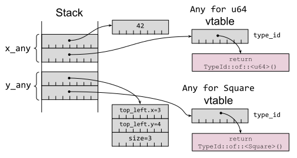
图 3-4. Any trait 对象，每个都有指向具体数据以及虚表的指针
除了一些间接寻址之外，一个 dyn Any trait 对象实际上就是一个裸指针和一个类型标识符的结合体。这意味着标准库可以为一个 dyn Any trait 对象提供一些附加的已定义的通用方法；这些方法对于某些附加类型 T 是通用的：
is::<T>()：指示了 trait 对象是否等于某个特定的其他类型Tdowncast_ref::<T>()：返回对具体类型T的引用，前提是 trait 对象的类型与T匹配downcast_mut::<T>()：返回对具体类型T的可变引用，前提是 trait 对象的类型与T匹配
你会发现 Any trait 只是近似反射的功能：语法选择了（在编译时）显式构建一些东西（&dyn Any）来跟踪该数据的编译时类型以及位置。仅当构建 Any trait 对象的开销已经发生时，（比如）向下转型回原始类型的能力才是可能的。
Rust 中很少有场景会在一个数据上关联不同的编译时类型和运行时类型。其中最主要的就是 trait objects：具体类型为 Square 的数据可以被强制转换为该类型实现的 trait 对象 dyn Shape。这种强制是从一个简单的指针（对象/数据）构建了一个胖指针（对象 + 虚表）。
回想第 12 条，Rust 的 trait 对象并不是真正面向对象的。Square 并不是一个 Shape；只是 Square 实现了 Shape 的接口。对于 trait 约束也是如此：一个 trait 约束 Shape: Draw 并不意味着 is-a；这只意味着也实现了，因为 Shape 的虚表包含了 Draw 的方法的入点。
对于一些简单的 trait 约束：
#![allow(unused)] fn main() { trait Draw: Debug { fn bounds(&self) -> Bounds; } trait Shape: Draw { fn render_in(&self, bounds: Bounds); fn render(&self) { self.render_in(overlap(SCREEN_BOUNDS, self.bounds())); } } }
等效的 trait 对象：
#![allow(unused)] fn main() { let square = Square::new(1, 2, 2); let draw: &dyn Draw = □ let shape: &dyn Shape = □ }
带有箭头的图片（如图 3-5；与第 12 条重复）使问题变得清晰明了；给定一个 dyn Shape 对象，没有直接的方法来构建 dyn Draw trait 对象，因为没有方法变回 impl Draw for Square 的虚表——即使其内容的相关部分（Square::bounds() 方法的地址）理论上是可以恢复的。（这可能在 Rust 的更高版本中发生变化；请参阅本条最后部分。）
图 3-5. 用于 trait 约束的 trait 对象，用于 Draw 和 Shape 的不同虚表
与上图对比，显然，显式构造的 &dyn Any trait 对象没有用处。Any 允许恢复底层数据的具体类型，但没有方法可以查看它实现了哪些 trait，或者访问可能允许创建的 trait 对象的相关虚表。
那么可以用什么来替代呢？
最主要的工具是 trait 定义，这与其他语言的建议一致——Effective Java第 65 条建议，“接口比反射更好”。如果代码需要依赖于某个数据的某些行为的可用性，请为该行为编写一个 trait（第 2 条）。即使所需的行为无法表达为一组方法签名，也可以使用标记 trait 来表明所需行为所需的遵守，这比（例如）检查类名的特定前缀更安全且高效。
需要 trait 对象的代码也可以用于哪些在程序链接时尚未提供支持代码的对象，因为这些代码是在运行时动态加载的（通过 dlopen(3) 或类似方法）——这意味着范型的单态化(第 2 条)是不可能的。
相关地，反射有时也被用在其他语言中，以允许同一依赖库的多个不兼容版本一次加载到程序中，绕过“只能有一个”的链接约束。这在 Rust 中是不需要的，因为 Cargo 已经可以处理同一个库的多个版本（第 25 条）。
最后，宏——尤其是 derive 宏——可以被用于自动生成在编译期了解数据类型的代码，作为一种更高效、更类型安全的等效代码，相当于在运行时解析数据内容的代码。第 28 条讨论了 Rust 的宏系统。
Rust 未来版本中的向上转型
本条的文本首次于 2021 年编写，期间是一直保持准确的，直到本书准备于 2024 年出版——此时 Rust 将会添加一个新功能，该功能会更改一些细节。
新的“trait 向上转型”功能，当 U 是 T 的父 trait 时（trait T: U {...}），可以将 trait 对象 dyn T 向上转型为 dyn U。该功能在正式发布前已在 #![feature(trait_upcasting)] 开启，预计在 Rust 1.76 版本。
对于之前的示例，这意味着 &dyn Shape trait 对象可以被转型为 &dyn Draw trait 对象，更接近于 Liskov 替换原则中的 is-a 关系。允许这种转换会对虚表实现的内部细节产生连锁反应，它们可能会变得比上图所示的版本更复杂。
然而，该数据的核心不受影响——Any trait 没有父 trait，所以其向上转型的能力不会增加任何功能。
原文点这里查看
依赖项
"当神想要惩罚我们时，他们会满足我们的祈祷。" —— 奥斯卡·王尔德
几十年来，代码重用的想法仅仅是一个梦想。编写一次代码，打包成库，并在许多不同的应用程序中重用的想法是一个理想，这种理想只实现了少数标准库和公司内部工具。
互联网的增长和开源软件的兴起最终改变了这一切。第一个公开可访问的仓库，它收集了大量的有用库、工具和辅助程序，全部打包以便于重用，这就是 CPAN：综合 Perl 存档网络，自1995年以来在线。今天，几乎每种现代语言都有一个全面的开源库集合，存放在一个包仓库中，这使得添加新依赖项的过程变得简单快捷。1
然而，随着这种便捷、方便和速度，新的问题也随之而来。通常，重用现有代码仍然比自己编写代码容易，但依赖他人的代码会带来潜在的风险和陷阱。本书的这一章将帮助您意识到这些问题。
重点是特别针对 Rust，以及使用 cargo 工具，但许多关注的问题、主题和议题同样适用于其他工具链（和其他语言）。
显著的例外是C和C++，其中包管理仍然有些碎片化。
第 23 条：避免通配符导入
Rust 的 use 语句可以从另一个 crate 或者模块中引入一个具名项，使得该项可以在当前模块的代码中不加限定符使用。形如 use somecrate::module::* 的通配符导入 wildcard import（或称 glob import）表示那个模块所有的 public 符号都被添加到了本地的命名空间中。
如 第 21 条 中所述，一个外部 crate 可能会向 API 中添加新的条目作为次要版本升级的一部分；这是一种向后兼容的修改。
这两个场景一旦结合到一起就会产生新的忧虑，依赖项的一个非破坏性更改可能会破坏你的代码：如果依赖项添加了一个与你已经使用的名称冲突的新符号，会发生什么情况？
从最简单的角度来看，这倒不是个问题：通配符导入的符号被视为低优先级，所以在你的代码中使用的匹配的名称都会被优先匹配：
#![allow(unused)] fn main() { use bytes::*; // Local `Bytes` type does not clash with `bytes::Bytes`. // 本地定义的 `Bytes` 类型不会跟 `bytes::Bytes` 发生冲突。 struct Bytes(Vec<u8>); }
不幸的是，仍然存在发生冲突的情况。例如，依赖项添加了一个新的 trait 并且为某些类型实现了：
#![allow(unused)] fn main() { trait BytesLeft { // Name clashes with the `remaining` method on the wildcard-imported // `bytes::Buf` trait. // `remaining` 方法跟通配符导入的 `bytes::Buf` trait 冲突了。 fn remaining(&self) -> usize; } impl BytesLeft for &[u8] { // Implementation clashes with `impl bytes::Buf for &[u8]`. // 实现和 `impl bytes::Buf for &[u8]` 冲突了。 fn remaining(&self) -> usize { self.len() } } }
如果新 trait 中任一个方法的名称与该类型现有的方法名称发生冲突，编译器就没法明确地识别出要调用的是哪个方法：
#![allow(unused)] fn main() { let arr = [1u8, 2u8, 3u8]; let v = &arr[1..]; assert_eq!(v.remaining(), 2); }
就像编译时候的错误显示那样：
#![allow(unused)] fn main() { error[E0034]: multiple applicable items in scope --> src/main.rs:40:18 | 40 | assert_eq!(v.remaining(), 2); | ^^^^^^^^^ multiple `remaining` found | note: candidate #1 is defined in an impl of the trait `BytesLeft` for the type `&[u8]` --> src/main.rs:18:5 | 18 | fn remaining(&self) -> usize { | ^^^^^^^^^^^^^^^^^^^^^^^^^^^^ = note: candidate #2 is defined in an impl of the trait `bytes::Buf` for the type `&[u8]` help: disambiguate the method for candidate #1 | 40 | assert_eq!(BytesLeft::remaining(&v), 2); | ~~~~~~~~~~~~~~~~~~~~~~~~ help: disambiguate the method for candidate #2 | 40 | assert_eq!(bytes::Buf::remaining(&v), 2); | ~~~~~~~~~~~~~~~~~~~~~~~~~ }
因此，你应该避免从你无法控制的 crate 中进行通配符导入。
如果你可以控制被通配符导入的项目的代码，那么之前提到的问题就消失了。例如，test 模块通常会使用 use super::*;。对于主要通过模块来划分代码的 crate 来说，从内部模块进行通配符导入也是一种可能的场景：
#![allow(unused)] fn main() { mod thing; pub use thing::*; }
然而，还有另一种常见的例外情况也是适用通配符导入的。有一些 crate 遵循一个约定，crate 中常见的条目会通过 prelude 模块重新导出，而这个就是特地被用于使用通配符导入的：
#![allow(unused)] fn main() { use thing::prelude::*; }
尽管从理论上来讲这种场景也会出现上面提及过的问题，但实际上这种 prelude 模块大多经过精心的设计，这样使用带来的更高的便利性可能会远超过未来出现问题的小概率风险。
最后，如果你不打断遵循这个条款的建议，考虑将你使用通配符引入的依赖项固定到一个特定的版本上（见 第 21 条），让依赖项不会自动升级次要版本。
工具
泰特斯-温特斯（Titus Winters，谷歌 C++ 库开发负责人）将软件工程描述为随着时间推移而整合的编程，有时也称为随着时间和人员而整合的编程。在更长的时间尺度和更广泛的团队中，代码库中的内容不仅仅是代码。
包括 Rust 在内的现代语言都意识到了这一点，并建立了一个工具生态系统，而不仅仅是将程序转换为可执行的二进制代码（编译器）。
本章将探讨 Rust 工具生态系统，并提出一些建议关于基础工具的使用建议。比如在开发过程中显而易见的是，需要考虑适度性 —— 对于一个只运行若干次的一次性程序来说，设置 CI、文档构建以及六种类型的验证测试可能是不必要的情况（杀鸡焉用牛刀）。但是，对于本节中描述的大部分内容，通过巧妙的根据项目需求选择合适的工具集成进来，能够提高开发效率，减少错误，并且增强代码质量。适当学工具使用学习的投入，在长远来看会有更大的回报。最终达到"物有所值"的效果。
第 27 条：为公共接口撰写文档
如果你的包（crate）会被其他程序员所使用，那么为包中的内容添加文档就是很好的实践，尤其是包中的公共接口。如果你的包不仅仅是随用随丢的代码，那么这个“其他程序员”就包括未来的你，那个已经忘掉了自己代码细节的你。
这个建议并不是 Rust 所独有的，它也并不是一个新的建议 —— 比如，Effective Java 第二版（2008年出版）在第 44 条中建议：“为所有导出的 API 元素编写文档注释”。
Rust 文档类型注释的细节 —— 基于 Markdown 格式，以 /// 或者 //! 分割 —— 已经在Rust book中介绍了，如下为示例：
/// Calculate the [`BoundingBox`] that exactly encompasses a pair
/// of [`BoundingBox`] objects.
pub fn union(a: &BoundingBox, b: &BoundingBox) -> BoundingBox {
// ...
}
然而，关于文档型注释的格式仍有一些值得关注的细节：
- 使用代码格式：对于任何作为源代码的注释，使用反引号来确保在最终的文档中代码会以一种等宽字体来展示，并以此来明确的区分
code以及一般的文本。 - 添加丰富的引用内容：为任何能够给读者提供上下文信息的内容添加 Markdown 链接。特别地，可以使用比较方便的 [
SomeThing] 格式的交叉引用标注符语法 —— 括号内的Something将会在最终文档中被添加正确的超链接。 - 多添加示例代码：如果接口应该如何使用并非一目了然的，那么添加一个使用该接口的
# Example段落将会很有用。如在文档注释里的示例代码会在你执行cargo test（详情查看第 13 条）时编译并且运行，这一特性将有助于示例代码和它希望表述的代码保持一致。 - 为
panic和unsafe的代码添加说明文档：如果存在会导致函数panic的输入，在文档（# Panics段落）里说明规避panic!的前置条件。同样地，在文档（# Safety段落）里说明unsafe代码的使用要求。
Rust 的标准库是一个能够实践了上述所有细节的优秀示例。
工具
在注释文档中使用 Markdown 格式不仅意味着优美的输出，还意味着需要有一个明确的转换步骤（cargo doc）。而转换也就会增加出现问题的可能性。
对于这个问题，最简单的建议是在写完文档后，运行cargo doc --open（或者cargo doc --no-deps --open，这个指令能够严格约束仅产生当前包中的文档）并来仔细阅读生成的结果。
对于所有生成超链接的有效性，你当然可以人工地去校验它们，或者让机器来完成这项工作 —— 通过broken_intra_dock_links的包特性1：
#![allow(unused)] #![deny(broken_intra_doc_links)] fn main() { /// The bounding box for a [`Polygone`]. #[derive(Clone, Debug)] pub struct BoundingBox { // ... } }
当特性生效的时候，cargo doc将会找出无效的链接：
#![allow(unused)] fn main() { error: unresolved link to `Polygone` --> docs/src/main.rs:4:30 | 4 | /// The bounding box for a [`Polygone`]. | ^^^^^^^^ no item named `Polygone` in scope | }
你也可以设置要求文档化，通过在包里设置![warn(missing_docs)]属性。当设置生效的时候，编译器将会给每个未配置文档的公开条目生成警告信息。然而，这样设置也存在着为了解决编译器报错而提供低质量注释文档的风险 —— 当然设置引入的问题不仅如此。
同样地，为了能够及时发现潜在风险，这些工具应该被纳入到你的持续集成系统（第 32 条）。
其他的文档位置
cargo doc的输出是包中文档所在的主要位置，但并不是唯一的地方 —— 在项目中的其他地方添加注释也可以帮助用户理解如何使用你的代码。
在 Cargo 项目的examples/子目录下可以添加一些方便使用包的示例代码。这些代码可以构建并运行，和集成测试（第 30 条）的运行方式非常类似，不同的是这些代码提供的是便于理解包中接口使用的代码。
需要说明的是，tests/子目录下的集成测试代码也可以给用户提供帮助，虽然它们的主要作用是测试包的对外接口。
发布包的文档
如果你的包会发布到crates.io，项目的文档就可以在docs.rs中查看到。docs.rs 是为发布的包构建并提供文档的官方 Rust 网站。
注意，crates.io和docs.rs的受众是不同的：crates.io旨在为选择包的用户提供服务，而docs.rs的受众是那些需要弄明白他们已经引用的包该如何使用的人（很明显的，这两种场景有很大的重叠）。
综上，一个包的主页在不同的地方会展示不同的内容：
docs.rs：展示cargo doc产出结果的顶层页面，比如从顶层src/lib.rs文件的//!生成的文档。crates.io：展示包含在项目仓库中的任何顶层README.md 2文件内容。
不文档化的内容
当一个项目要求公共条目都需要添加注释的时候，很容易就陷入到给无价值的内容也文档化的陷阱中。编译器的缺少注释文档的警告只是提醒你添加真正需要内容 —— 有用的文档 —— 的一种表现，并且仅仅期望程序员添加必要的内容来消除警告。
好的注释文档是一种能够帮助用户了解他们所使用代码的福利；糟糕的注释文档则增加了代码的维护成本并且让用户在它们不再和代码保持一致的时候变得更加困惑。那么好与不好的区别是什么呢？
最重要的建议是避免重复可以从代码中看出的信息。第 1 条建议你的代码尽量的和 Rust 的类型系统保持一致；一旦你做到了这一点，就通过类型系统来说明这些语意。可以假定使用代码的用户对 Rust 已经熟悉了 —— 可能他们已经读了一些描述了如何高效使用语言的建议 —— 并且不需要重复从代码中的参数类型和函数签名中就能读出来的东西。
回到之前的例子，一个冗余的注释文档可能如下面描述的这样：
#![allow(unused)] fn main() { /// Return a new [`BoundingBox`] object that exactly encompasses a pair /// of [`BoundingBox`] objects. /// /// Parameters: /// - `a`: an immutable reference to a `BoundingBox` /// - `b`: an immutable reference to a `BoundingBox` /// Returns: new `BoundingBox` object. pub fn union(a: &BoundingBox, b: &BoundingBox) -> BoundingBox { }
这个注释重复了很多从函数签名中就能读到的信息，注释信息毫无益处。
更糟的是，考虑一种代码重构后，将结果存储到其中一个参数（这是一种不兼容的变更；参照第 21 条）。没有编译器或者工具能够发现注释没有随之更新，结果就产生了一个未能和代码逻辑保持一致的注释：
#![allow(unused)] fn main() { /// Return a new [`BoundingBox`] object that exactly encompasses a pair /// of [`BoundingBox`] objects. /// /// Parameters: /// - `a`: an immutable reference to a `BoundingBox` /// - `b`: an immutable reference to a `BoundingBox` /// Returns: new `BoundingBox` object. pub fn union(a: &mut BoundingBox, b: &BoundingBox) { }
相反地，原本恰当的注释在重构中则可以毫发无损地保留下来，因为它的文本描述的是行为，而非语意本身：
#![allow(unused)] fn main() { /// Calculate the [`BoundingBox`] that exactly encompasses a pair /// of [`BoundingBox`] objects. pub fn union(a: &mut BoundingBox, b: &BoundingBox) { }
先前的建议也可以帮助提升文档质量：在文档中包含任何从代码中无法了解的内容。这包含前置条件、可变性、异常、报错条件以及任何可能会让用户感到意外的事情；如果你的代码不能遵守最小惊讶原则，确保这些意外都被记录在文档里，至少你可以说“我已经告诉过你了”。
另一个常见的失败情形是，注释里描述了其他使用这个方法的代码，而非这个方法做了什么：
#![allow(unused)] fn main() { /// Return the intersection of two [`BoundingBox`] objects, returning `None` /// if there is no intersection. The collision detection code in `hits.rs` /// uses this to do an initial check to see whether two objects might overlap, /// before performing the more expensive pixel-by-pixel check in /// `objects_overlap`. pub fn intersection( a: &BoundingBox, b: &BoundingBox, ) -> Option<BoundingBox> { }
像这样的注释几乎不可能和代码保持一致：当使用了这个方法的代码（比如，hits.rs）变更的时候，这段描述了调用行为的注释相隔甚远而无法保持一致。
应当将注释重新组织以聚焦在为什么这样使用，可以让这段注释更好的适应未来的变更。
#![allow(unused)] fn main() { /// Return the intersection of two [`BoundingBox`] objects, returning `None` /// if there is no intersection. Note that intersection of bounding boxes /// is necessary but not sufficient for object collision -- pixel-by-pixel /// checks are still required on overlap. pub fn intersection( a: &BoundingBox, b: &BoundingBox, ) -> Option<BoundingBox> { }
当编写软件时，“面向未来的编程”3是一种很好的实践：调整代码结构以适应未来的变更。同样的原则也适用于文档：聚焦在语意，为什么这样做以及为什么不这样做，会让文本在未来的运行中始终是有意义的。
总结
- 给公共的 API 内容添加注释文档。
- 为那些从代码中无法明确看出的内容添加描述 —— 比如
panics以及unsafe的条件。 - 不要给可以从代码中明确看出的内容重复描述。
- 通过交叉引用及添加标志符来让导航变得明确。
注释
这个配置也曾称成为intra_doc_link_resolution_failure。
包含 README.md 的引用动作可以被Cargo.toml 中的 readme 字段覆盖。
Scott Meyers，More Effective C++ (Addison-Wesley)，第 32 条。
原文点这里查看。
第 28 条：在合适的时候使用宏
“在一些场景下，我们会很容易来决定应该使用宏（macro）而非函数（function），因为只有宏才能满足我们的需求。” - Paul Graham，“On Lisp (Prentice Hall)”
Rust 的宏能够让你实现元编程（metaprogramming）：在项目中使用代码来生成代码。这一特性在需要编写很多确定性、重复性都很强的“样板代码”时会很有用，不借助宏的话我们就只能手动维护这些代码了。
程序员接触 Rust 之前可能已经预先了解了 C/C++ 中通过预处理（preprocessor）来实现的宏，这种方式是在预处理阶段通过文本替换来展开宏定义。而 Rust 的宏则有一些不同，它是在符号流（parsed tokens of the program）或者在抽象语法树（abstract syntax tree, AST）的基础上实现的宏，而非在文本处理阶段。
这就意味着 Rust 的宏是能够理解代码结构并且规避掉一系列的文本替换方式实现的宏所存在的意外情况。比如说，在接下来的内容中，我们可以看到 Rust 所声明的宏是卫生的 —— 在宏里不会意外引用（或者捕获）宏所嵌入代码中的变量信息。
/* 这段内容较为晦涩。引用一段维基百科上的内容来说明文本替换方式实现的宏所带来的问题。*/
#define INCI(i) { int a=0; ++i; }
int main(void)
{
int a = 4, b = 8;
INCI(a);
INCI(b);
printf("a is now %d, b is now %d\n", a, b);
return 0;
}
/* 以上代码中的 INCI 宏期望分别对 a, b 进行加一操作。文本替换后的结果如下所示。*/
int main(void)
{
int a = 4, b = 8;
{ int a = 0; ++a; }; // 注意这里对 a 进行了重新声明，实际上是对声明的这个 a 进行了自增。
{ int a = 0; ++b; };
printf("a is now %d, b is now %d\n", a, b);
return 0;
}
/* 最终的结果会输出如下。
*
* a is now 4, b is now 9
*
* 这显然是不符合预期的。产生这一结果的原因是由于文本替换过于粗暴，而无法进行实际语意上的理解。
*
* 本注释内容为译者添加。
*/
一种理解宏的方法是将其视为代码的不同抽象方式。函数也是代码的一种简单抽象：它将同一类型的不同值的不同抽象出来，实现了针对这一类型，而非特定的值，会做的操作及方法。而宏中的生成则是另外一个层面的抽象：宏是对符合同一特性的不同类型进行抽象，使用针对这些不同类型所具备的相同特性，而非特性的类型，进行代码的实现。
宏可以对不同程序中扮演相同角色（类型、标记、表达式等）的代码抽象出来，然后这些程序就可以以同一种方式来使用抽象出的逻辑。
Rust 提供了两种方式来定义宏：
- 声明宏，也被成为“示例宏”。声明宏允许将输入到宏中任意的 Rust 程序，基于抽象语法树中的结果，集成到代码中。
- 过程宏。过程宏同样可以将任意的 Rust 程序集成到代码中，不过是基于源码中的解析符号。
derive宏就是常见的过程宏。derive宏可以基于代码的结构定义来展开代码。
声明宏
虽然这篇文章不是为了重复声明宏的内容，但还是有必要来提醒下声明宏中需要关注的内容。
首先，需要注意的是声明宏的作用域范围和直觉上的理解的是不同的（对比 C 里的预处理宏）。如果一个声明宏在源代码中被定义了，就只有跟在宏里的代码能够使用：
#![allow(unused)] fn main() { fn before() { println!("[before] square {} is {}", 2, square!(2)); } /// Macro that squares its argument. macro_rules! square { { $e:expr } => { $e * $e } } fn after() { println!("[after] square {} is {}", 2, square!(2)); } }
#![allow(unused)] fn main() { error: cannot find macro `square` in this scope --> src/main.rs:4:45 | 4 | println!("[before] square {} is {}", 2, square!(2)); | ^^^^^^ | = help: have you added the `#[macro_use]` on the module/import? }
#[macro_export]特性让宏可以访问更多的数据，但是也存在一些奇怪的事情：尽管宏并没有在模块中定义，它还是出现在了模块的顶层。
#![allow(unused)] fn main() { mod submod { #[macro_export] macro_rules! cube { { $e:expr } => { $e * $e * $e } } } mod user { pub fn use_macro() { // Note: *not* `crate::submod::cube!` let cubed = crate::cube!(3); println!("cube {} is {}", 3, cubed); } } }
Rust 的声明宏是卫生（hygienic）的：宏内部展开的代码无法使用所在作用域的局部变量。比如，宏内部使用了局部变量 x 时：
#![allow(unused)] fn main() { // Create a macro that assumes the existence of a local `x`. macro_rules! increment_x { {} => { x += 1; }; } }
这样的用法将会造成编译错误：
#![allow(unused)] fn main() { let mut x = 2; increment_x!(); println!("x = {}", x); }
#![allow(unused)] fn main() { error[E0425]: cannot find value `x` in this scope --> src/main.rs:55:13 | 55 | {} => { x += 1; }; | ^ not found in this scope ... 314 | increment_x!(); | -------------- in this macro invocation | = note: this error originates in the macro `increment_x` }
这种“卫生”的特性意味着 Rust 的宏比 C 的基于预处理替换的宏要安全很多。然而，仍有一些需要在使用时注意的内容。
第一，尽管一个宏看起来很像是函数的声明，它并不是。宏将会在调用的地方进行代码展开，而且可以随着传入参数的不同进行不同形式的展开：
#![allow(unused)] fn main() { macro_rules! inc_item { { $x:ident } => { $x.contents += 1; } } }
这就意味着常规意义上的参数被移动（moved）或者 & （被引用）的情形没有发生：
#![allow(unused)] fn main() { let mut x = Item { contents: 42 }; // type is not `Copy` // Item is *not* moved, despite the (x) syntax, // but the body of the macro *can* modify `x`. inc_item!(x); println!("x is {x:?}"); }
#![allow(unused)] fn main() { x is Item { contents: 43 } }
如果我们还记得宏只是在调用它的地方进行展开的话，上述示例就会变得清楚了 —— 在这个示例中，调用宏的地方只相当于添加了一行增加x.contents值的代码。借助cargo-expand可以很清晰地看到编译器将宏进行展开后的代码：
#![allow(unused)] fn main() { let mut x = Item { contents: 42 }; x.contents += 1; { ::std::io::_print(format_args!("x is {0:?}\n", x)); }; }
展开的代码中可以看到直接使用了变量本身，而非其引用。（一个有意思的事情是，我们可以看到println!的展开中，依赖了format_args!宏1。）
所以，宏里的!起到了一个警示的作用：展开的代码可能会对参数做一些任性的事情。
展开的代码也可能会包含一些在调用代码中无法访问的控制流，可能包括循环、判断、返回值甚至使用?操作符。显然，这里会和[最小惊讶原则]相冲突，所以在使用宏时，应当考虑封装常规的 Rust 语句。（另一方面，如果使用宏的目的是实现一些奇怪的控制流，请确保这些控制流在文档中都给用户提供了！）
举例来说，考虑这样一个宏（用来校验 HTTP 状态码）包含了一个return语句：
#![allow(unused)] fn main() { /// Check that an HTTP status is successful; exit function if not. macro_rules! check_successful { { $e:expr } => { if $e.group() != Group::Successful { return Err(MyError("HTTP operation failed")); } } } }
用这段宏来校验一些 HTTP 行为的代码可能会以一些很晦涩的控制流来结束：
#![allow(unused)] fn main() { let rc = perform_http_operation(); check_successful!(rc); // may silently exit the function // ... }
另一种可以实现上述功能的宏是产生一个Result：
#![allow(unused)] fn main() { /// Convert an HTTP status into a `Result<(), MyError>` indicating success. macro_rules! check_success { { $e:expr } => { match $e.group() { Group::Successful => Ok(()), _ => Err(MyError("HTTP operation failed")), } } } }
而这样依赖，代码就很好理解了：
#![allow(unused)] fn main() { let rc = perform_http_operation(); check_success!(rc)?; // error flow is visible via `?` // ... }
对于声明宏来说，第二件需要注意的事情是和 C 的预编译宏同样的问题：如果宏的参数是一个存在副作用的表达式，当心在宏里多次使用的情况。比如我们在早先定义的square!宏输入了较为随意的表达式来作为参数，然后使用两次，这将会造成奇怪的结果：
#![allow(unused)] fn main() { let mut x = 1; let y = square!({ x += 1; x }); println!("x = {x}, y = {y}"); // output: x = 3, y = 6 }
假设这种行为并非有意的，一种修复的方法是尝试仅执行给定的表达式一次，然后将结果赋值给一个本地的变量：
#![allow(unused)] fn main() { macro_rules! square_once { { $e:expr } => { { let x = $e; x*x // Note: there's a detail here to be explained later... } } } // output now: x = 2, y = 4 }
另一种可选的方案是不允许将表达式作为宏的输入。如果将[expr]替换为indent，那么这个宏就仅会接受标志符作为入参，而使用类似任意的表达式将不再能编译通过。
格式化参数
声明宏的一种常见的使用模式将多个值汇聚成一个消息。比如，标准库中的format!用来拼接一个字符串，println!用来输出到标准输出，eprintln!用来输出到标准错误输出。fmt 文档中阐述了format!的语法，和C中的printf使用几乎是相同的。当然，Rust 中的format!参数是类型安全并且会在编译时进行检查的，并且format!宏实现时使用了Display以及Debug特性用来约束宏的参数。Display以及Debug宏的使用参见[第 10 条]2。
你可以（同时也建议）在项目中的宏中使用相同的格式化语法。比如，一个log库中的logging宏就可以使用和format!相同的语法。在实践中，使用format_args!来实现参数的格式化而不是重复造轮子。
#![allow(unused)] fn main() { /// Log an error including code location, with `format!`-like arguments. /// Real code would probably use the `log` crate. macro_rules! my_log { { $($arg:tt)+ } => { eprintln!("{}:{}: {}", file!(), line!(), format_args!($($arg)+)); } } }
#![allow(unused)] fn main() { let x = 10u8; // Format specifiers: // - `x` says print as hex // - `#` says prefix with '0x' // - `04` says add leading zeroes so width is at least 4 // (this includes the '0x' prefix). my_log!("x = {:#04x}", x); }
#![allow(unused)] fn main() { src/main.rs:331: x = 0x0a }
过程宏
Rust 也支持了过程宏，也被称为proc macros。和声明宏类似，过程宏能够任意的 Rust 代码插入到程序的源代码中。不同的时，过程宏的输入不再仅限制在特定的传入参数。过程宏可以访问一些源代码中的解析符号（parsed tokens）。这就过程宏一定程度上类似动态语言，比如 Lisp，的非常富有表达力的能力 —— 但是仍然在编译时进行检查。这也帮助缓解了 Rust 中反射的局限，这在第 19 条中讨论了。
过程宏需要和其被使用的代码定义在不同的包中（并且包需要被声明为proc_macro），并且包中往往需要引入[proc-macro]（官方工具链中提供）或者[proc-macro2]（由 David Tolnay 提供）的依赖，这两个依赖可以宏能够操作输入的符号。
实际上，有三种不同的过程宏：
- 类函数宏（Function-like macros）：通过传入的参数调用。
- 类属性宏（Attribute macros）：附加到程序中的某些特定语法的代码中。
- 派生宏（Derive macros）：附加到特定的数据结构中。
类函数宏
函数式的宏会通过传递参数来调用，宏的实现中可以访问参数的解析符号（parsed tokens），并且返回任意的符号。注意在先前的表述中，我们使用的是单数的参数， —— 即使函数式的宏调用的时候看起来传入了很多参数：
#![allow(unused)] fn main() { my_func_macro!(15, x + y, f32::consts::PI); }
但是宏本身只接收到了一个解析后的符号流。一个将符号流输出（在编译时）的宏实现示例如下：
#![allow(unused)] fn main() { use proc_macro::TokenStream; // Function-like macro that just prints (at compile time) its input stream. #[proc_macro] pub fn my_func_macro(args: TokenStream) -> TokenStream { println!("Input TokenStream is:"); for tt in args { println!(" {tt:?}"); } // Return an empty token stream to replace the macro invocation with. TokenStream::new() } }
其运行结果如下：
#![allow(unused)] fn main() { Input TokenStream is: Literal { kind: Integer, symbol: "15", suffix: None, span: #0 bytes(10976..10978) } Punct { ch: ',', spacing: Alone, span: #0 bytes(10978..10979) } Ident { ident: "x", span: #0 bytes(10980..10981) } Punct { ch: '+', spacing: Alone, span: #0 bytes(10982..10983) } Ident { ident: "y", span: #0 bytes(10984..10985) } Punct { ch: ',', spacing: Alone, span: #0 bytes(10985..10986) } Ident { ident: "f32", span: #0 bytes(10987..10990) } Punct { ch: ':', spacing: Joint, span: #0 bytes(10990..10991) } Punct { ch: ':', spacing: Alone, span: #0 bytes(10991..10992) } Ident { ident: "consts", span: #0 bytes(10992..10998) } Punct { ch: ':', spacing: Joint, span: #0 bytes(10998..10999) } Punct { ch: ':', spacing: Alone, span: #0 bytes(10999..11000) } Ident { ident: "PI", span: #0 bytes(11000..11002) } }
由于输入流涉及到的底层特性式的这段宏在实现时必须要能够解析所传入的参数。比如，宏中分隔那些需要分隔的参数需要使用TokenTree:Punct。syn 包（David Tolnay开发）提供了一个解析的库来辅助这些事情，下一节会进行介绍。
正因为这些解析的工作，使用声明宏往往比函数式的过程宏要简单，因为声明宏所处理的是匹配所定义的结构。
这种需要手动处理繁杂的另一面是函数是的宏可以更加灵活的接受那些无法像一般 Rust 代码解析的输入。这种特性并非经常需要的，所以函数式的宏相对较少出现。
类属性宏
类属性宏通过将其放置在程序的一些片段前调用的，而这些片段的解析符号会被传入到宏的内部进行处理。类属性宏也可以将任意的结果作为返回值，但是一般返回值是对输出的一些转换处理。
比如，下面是一个用来封装函数体的类属性宏：
#![allow(unused)] fn main() { #[log_invocation] fn add_three(x: u32) -> u32 { x + 3 } }
之后，在调用这个被封装的函数时，就会有日志输出：
#![allow(unused)] fn main() { let x = 2; let y = add_three(x); println!("add_three({x}) = {y}"); }
#![allow(unused)] fn main() { log: calling function 'add_three' log: called function 'add_three' => 5 add_three(2) = 5 }
这个宏的实现是极为复杂的，这里并不打算将其细节附上。在实现时，需要校验输入符号的结构以便构建新的输出符号。当然，这一过程仍然可以使用syn包来辅助实现。
派生宏
最后一种过程宏是派生宏。派生宏可以为其修饰的数据（struct, enum 或者 union 均可）自动地生成代码。这一点和类属性宏有些像，但是会多一些派生的操作 —— 请注意理解这里的派生概念。
首先，派生宏会附加到输入的符号中，而非将其替换。这就意味着原始的数据结构的定义会被保留，而派生宏将在原始数据结构的基础上附加代码。
其次，派生宏可以用来声明一些辅助性的特征。当数据需要用作一些特殊的处理时，可以使用派生宏来辅助标注。比如，[serde 库]的Deserialize派生宏有一个serde的辅助特性，用户可以使用派生宏来声明这些结构体符合某种特性：
#![allow(unused)] fn main() { fn generate_value() -> String { "unknown".to_string() } #[derive(Debug, Deserialize)] struct MyData { // If `value` is missing when deserializing, invoke // `generate_value()` to populate the field instead. #[serde(default = "generate_value")] value: String, } }
关于派生宏的最后一个概念是，syn 包可以完成将输入符号解析到相应的语法树的工作。syn::parse_macro_input!宏可以将符号转换成syn::DeriveInput数据结构，这种结构描述被修饰对象的主要内容，并且DeriveInput操作起来远比原始的符号流要好处理。
特别地，derive宏是所有过程宏中最常使用的宏 —— 这种逐字段或逐变量操作的能力能够让程序员最简单地实现最多的功能 —— 比如，仅通过添加一行类似#[derive(Debug, Clone, PartialEq, Eq)]的代码，即可实现预期的目的。
由于派生宏的代码插入是自动实现地，这也意味着这些插入的代码可以同时和结构体的实现保持一致。比如，如果你向struct中插入了一个新的字段，如果采用手动实现Debug特征的话，你就需要在插入后对结构体进行更新以使其满足特征的需求。而对于自动插入代码的派生宏来说，你并不需要做任何调整（当然了，如果插入的字段不满足派生宏的实现要求，编译时会报错）。
什么时候使用宏
使用宏的首要原因当然是避免重复的代码 —— 尤其是那些需要人工确保和其他代码关联正确性的重复代码。从这一点来说，使用宏仅是编程常用的封装抽象的扩展：
- 如果需要重复一段处理同一类型的不同值的代码，将其封装为一个函数并在所有需要这段逻辑的地方使用它。
- 如果需要重复一段处理不同类型的代码，构建一个
trait并且使用该trait来封装逻辑并在所有满足该特性的要求的地方进行使用。 - 如果需要重复一段结构相同的代码，将其封装成一个宏并且在所有满足类似结构的代码中进行使用。
举例如下：如果希望规避重复处理不同enum的代码，使用宏即可：
enum Multi { Byte(u8), Int(i32), Str(String), } /// Extract copies of all the values of a specific enum variant. #[macro_export] macro_rules! values_of_type { { $values:expr, $variant:ident } => { { let mut result = Vec::new(); for val in $values { if let Multi::$variant(v) = val { result.push(v.clone()); } } result } } } fn main() { let values = vec![ Multi::Byte(1), Multi::Int(1000), Multi::Str("a string".to_string()), Multi::Byte(2), ]; let ints = values_of_type!(&values, Int); println!("Integer values: {ints:?}"); let bytes = values_of_type!(&values, Byte); println!("Byte values: {bytes:?}"); // Output: // Integer values: [1000] // Byte values: [1, 2] }
另一个宏的使用场景是，规避同一结构体中的数据被分散在代码的不同区域。
比如，假设一个结构体封装了 HTTP 的状态码。通过宏可以避免实现这些信息时代码的分散：
#![allow(unused)] fn main() { // http.rs module #[derive(Debug, PartialEq, Eq, Clone, Copy)] pub enum Group { Informational, // 1xx Successful, // 2xx Redirection, // 3xx ClientError, // 4xx ServerError, // 5xx } // Information about HTTP response codes. http_codes! { Continue => (100, Informational, "Continue"), SwitchingProtocols => (101, Informational, "Switching Protocols"), // ... Ok => (200, Successful, "Ok"), Created => (201, Successful, "Created"), // ... } }
通过使用宏，可以将每个 HTTP 状态码的所有相关联的信息 —— 数值、元组以及描述信息 —— 都聚集起来，看起来就像是使用一种领域特定语言（domain-specifix language, DSL）来保存数据一样。
汇聚之后，宏就可以生成代码。每一行类似$( ... )+中的代码都会被扩展成特定的代码：
#![allow(unused)] fn main() { macro_rules! http_codes { { $( $name:ident => ($val:literal, $group:ident, $text:literal), )+ } => { #[derive(Debug, Clone, Copy, PartialEq, Eq, Hash)] #[repr(i32)] enum Status { $( $name = $val, )+ } impl Status { fn group(&self) -> Group { match self { $( Self::$name => Group::$group, )+ } } fn text(&self) -> &'static str { match self { $( Self::$name => $text, )+ } } } impl core::convert::TryFrom<i32> for Status { type Error = (); fn try_from(v: i32) -> Result<Self, Self::Error> { match v { $( $val => Ok(Self::$name), )+ _ => Err(()) } } } } } }
这样处理后，宏就可以依据输入的参数来派生如下的代码：
- 一个
enum枚举用来保存所有的数值。 - 一个
group()方法来返回一个 HTTP 状态码的分组归属。 - 一个
text()方法来将状态码映射到对应的文字描述中。 - 一个
TryFrom<i32>的特征实现来将数值转换成enum中的枚举值。
如果需要新增一个状态码，只需要添加这样的一行代码：
#![allow(unused)] fn main() { ImATeapot => (418, ClientError, "I'm a teapot"), }
如果不使用宏的话，就需要对四部分代码分别更新。编译器可能会有一些提示信息（match表达式需要覆盖所有的场景），但是存在一些遗漏 —— TryFrom<i32 就很容易被遗忘。
由于宏可以在调用的地方对代码进行展开，所有它们也可以用来自动生成一些提示信息 —— 尤其是，在使用了标准库中的file!()以及line!()宏了之后，可以生成代码的位置信息：
#![allow(unused)] fn main() { macro_rules! log_failure { { $e:expr } => { { let result = $e; if let Err(err) = &result { eprintln!("{}:{}: operation '{}' failed: {:?}", file!(), line!(), stringify!($e), err); } result } } } }
当报错出现时，日志文件中就会自动地包含报错内容、位置等细节：
#![allow(unused)] fn main() { use std::convert::TryInto; let x: Result<u8, _> = log_failure!(512.try_into()); // too big for `u8` let y = log_failure!(std::str::from_utf8(b"\xc3\x28")); // invalid UTF-8 }
宏的缺点
使用宏的最大缺点是引入之后代码的可读性及可维护性。之前在声明宏小结中介绍了宏允许我们创建一个特定的语言来简明地描述代码及数据的关键特性。但是，这也意味着任何阅读这段代码的人将不得不理解这段使用 Rust 实现的特定的语句 —— 而且这还是使用宏来定义的。比如，在http_codes!宏的示例中使用了一个名为Status的 Rust enum，但是在使用的时候并不能察觉到。
这种使用宏而引入的不可知性远超一般程序员所能带来的影响：很多分析或和 Rust 交互的工具无法理解这样晦涩的代码，因为它不在遵循 Rust 代码交互语法。先前展示的square_once!宏就是一个直观的例子：宏的主体并没有按照rustfmt的规则来格式化：
#![allow(unused)] fn main() { { let x = $e; // The `rustfmt` tool doesn't really cope with code in // macros, so this has not been reformatted to `x * x`. x*x } }
另一个例子是已经提到的http_codes!宏，这里使用了Group枚举了诸如Informational的值，而没有使用Group::前缀或use语句。这一点会让代码的补全工具感到混淆。
甚至编译器本身也无法提供更多的帮助：编译器提供的报错信息没有完全符合宏的定义及使用。当然，还是有一些工具（参照第 31 条）可以辅助宏的使用，比如早先使用的 David Tolnay 的 cargo-expand。
使用宏也可能会导致代码的膨胀 —— 一个简单的宏调用就可能引入数百行的生成代码，并且在进行代码分析时是无法直观看到的。这在代码第一次编写时可能不会成为问题，因为彼时这些代码是需要的，并且帮助开发者节约了大量的代码编写时间。但是，如果这些代码随后不再需要了，考虑实际生成的数百行代码，仅从数行的宏调用中可能并不能看到将其删除的必要性。
建议
尽管上节我们列举了很多宏的缺点，但是当我们需要合并存在一些存在一致性的代码，但是没有其他可用的方式时，使用宏仍然是完成这样工作的正确工具：当宏是确保不同代码保持一致的唯一方式时，使用它！
当我们需要合并一些模版化的代码时，宏也是可以使用的工具：使用宏来处理模版代码，当它们无法合并为一个函数或者一个特性时。
为了降低宏对可读性的影响，请尽量避免在宏中使用和 Rust 的一般语法规则相冲突的语法。要么让宏在调用时和一般的代码表现的一致；要么让宏在调用时和一般的代码完全不同，这样就没有用户会混淆宏和一般的代码。特别地，可以遵循如下的准则：
- 尽可能的避免向宏传递参数的引用 —— 类似
my_macro!(list)的使用就比my_macro!(&list)要好。 - 尽量避免在宏中引入非局部的控制流，这样所有阅读这段代码的人都可以在不了解宏的细节的情况下，正确理解上下文中的控制流。
这种倾向于类似 Rust 一般代码的可读性偏好有时会影响声明宏或者过程式宏的选择。如果你需要给一个struct的每一个字段或者enum中的每一个枚举值都生成代码，尽量使用派生宏来处理（暂时忽略在上一节中列举的问题） —— 这样会更加符合语言习惯并且读起来更加简单。
然而，如果要添加的派生宏并非是项目中所独有的功能，可以检查下外部的库中是否已经提供了所需要的宏（参照第 25 条）。比如，类似将数值类型转换为合适的 C 风格的枚举值的需求：在enumn::N、[num_enum::TryFromPrimitive]、num_derive::FromPrimitive以及strum::FromRepr中都一定程度的实现了这个需求。
注释
眼神儿好的读者可能已经注意到了format_arg!仍然像是一个宏的调用，尽管它在println!宏的展开代码里。这是因为它是编译器的内建宏。
在std::fmt 模块中也包含了很多其他展示特定格式数据是会使用的特性。比如，当需要一个 x 格式的特殊说明符来输出小写的十六进制输出时，就会使用LowerHex特性。
原文点这里查看。
第 29 条：遵循 Clippy 的建议
“看起来你在写信。需要什么帮助么？” —— [Microsoft Clippit]
第 31 条会描述了 Rust 工具箱中一些很有用的工具。但是其中一个特别有用且重要的工具值的在这里进行进行单独的介绍：Clippy。
Clippy 是 Cargo 的一个附加模块（通过cargo clippy的方式调用）。它可以生成涵盖多种类别的warining信息：
- 正确性：提示常见的编程错误。
- 风格：提示不完全符合 Rust 标准风格的代码结构。
- 简洁性：指出能让代码更加简洁的可行变更。
- 性能：提示能避免无效处理或者内存分配的可选项。
- 可读性：给出能让代码更易读或者更易懂的建议。
比如，如下这段代码编译是正常的：
#![allow(unused)] fn main() { pub fn circle_area(radius: f64) -> f64 { let pi = 3.14; pi * radius * radius } }
但是 Clippy 会指出这里对 π 的近似赋值是没必要且不准确的：
#![allow(unused)] fn main() { error: approximate value of `f{32, 64}::consts::PI` found --> src/main.rs:5:18 | 5 | let pi = 3.14; | ^^^^ | = help: consider using the constant directly = help: for further information visit https://rust-lang.github.io/rust-clippy/master/index.html#approx_constant = note: `#[deny(clippy::approx_constant)]` on by default }
链接中的文档解释了问题并且给出了优化代码的方式。上述示例可调整为：
#![allow(unused)] fn main() { pub fn circle_area(radius: f64) -> f64 { std::f64::consts::PI * radius * radius } }
正如示例中所展示的，每个 Clippy 警告都会伴随着一个网页的链接来描述问题。链接的网页中会说明为什么目标代码会被认为是不恰当的。这些说明很重要：它们的存在使得你可以自行判断采纳这些建议或者由于特殊的原因而忽略它们。有的时候，说明文本中还会描述一些校验器的已知问题，这些描述会解释一些令人困惑的误报。
如果你认定一些警告信息和自己的代码没有关系，你可以通过添加(#[allow(clippy::some_line)])来忽略关联代码的报错，或者在包的顶层（top level）添加(#![allow(clipy::some_lint)])来忽略整个包中的警告信息。通常情况下，建议调整目标代码而非花费很多时间来确认警告关联的代码是否是一个罕见的误报。
无论你选择了修复或者忽略掉这些警告信息，请确保你的代码中没有 Clippy-warning 的信息。
这样，当新的警告信息出现时 —— 无论是由于代码发生了调整还是 Clippy 升级后包含了新的校验信息 —— 我们就能够及时的关注到。Clippy 也应当被纳入你的持续集成系统中（第 32 条）。
Clippy 的警告信息在你学习 Rust 时特别重要，因为它们可以揭示那些被你忽略的细节，并帮助你熟悉 Rust 的风格。
本书中提到的很多建议，在 Clippy 中均存在相关的警告信息：
- 第 1 条建议使用更具表现力的类型，而非一般的
bool类型。Clippy 也指出了在函数参数以及结构体中使用多个bool类型的问题。 - 第 3 条包括了一些
Option及Result类型的操作。Clippy 指出了一些可行的精简行为，比如： - 第 3 条同样建议了应当将错误返回给调用方。Clippy [指出了应当返回的地方]。
- 第 5 条应当实现
From特征而非Into。 - 第 5 条还描述了一些强制转换，而 Clippy 给出了如下的警告（对应的检查项默认是关掉的）：
- 第 8 条描述了胖指针类型，并且很多 Clippy 的校验器指出了一些非必要的额外的指针间接访问：
- 第 9 条描述了操作
Iterator实例的诸多方法。Clippy 包含了诸多的可以简化迭代器方法使用的校验器1。 - 第 10 条描述了 Rust 的标准特性，并且包含了很多 Clippy 会校验到的实现时的要求：
- 第 18 条提供了一些关于减少
panic!或类似expect的方法，这些建议也会在 Clippy 的校验器中检查到。 - 第 21 条表述了引入通过通配符限定的包是不明智的。Clippy 同样对此进行了校验。
- 第 23 条及第 25 条涉及到一种不同版本的包出现在同一个项目的依赖中。Clippy 可以通过配置，在问题出现时给出警告信息。
- 第 26 条叙述了 Cargo 特性的一些相加性，而 Clippy 会将与此原则相违背特性提示为“否定”的特性。
- 第 26 条同样表述了一个包的可选依赖项同样是其特征集的一部分。如果存在需要明确的特性名（如："use-crate-x"形式的命名）时，Clippy 将会提示直接应当使用明确的特性名，而非模糊的。
- 第 27 条描述了文档注释的约束，Clippy 同时有如下的提示：
上述的信息无疑说明了阅读 Clippy 的警告信息列表同样是一种有意义的学习方式 —— 包括那些默认被关掉校验的原因，是由于它们太严苛了还是由于它们会产生虚警？尽管你可能并不希望代码中出现这么多的警告信息，领悟这些校验规则出现的原因将会提升你对 Rust 及其风格的理解。
注释
部分校验器列举如下。explicit_counter_loop，explicit_iter_loop，explicit_into_iter_loop，filter_map_identity，from_iter_instead_of_collect，into_iter_on_ref，iter_count，iter_next_loop，iter_not_returning_iterator，manual_filter_map，manual_find_map，map_clone，needless_range_loop，search_is_some，skip_while_next，suspicious_map，unnecessary_filter_map，unnecessary_fold。
原文点这里查看
第 31 条：使用生态系统工具
Rust 生态系统拥有丰富的附加工具集，它们提供了超出将 Rust 转换为机器代码基本任务的功能。
在设置Rust开发环境时，您可能希望拥有以下基本工具的大多数：1
- cargo 工具，用于组织依赖项（第 25 条）并驱动编译器
- rustup 工具，用于管理安装的 Rust 工具链
- 支持 Rust 的 IDE，或像 rust-analyzer 这样的 IDE/编辑器插件，它允许您快速在 Rust 代码库中导航，并为编写 Rust 代码提供自动补全支持
- Rust playground，用于独立探索 Rust 的语法，并与同事分享结果
- Rust 标准库的文档
除了这些基本工具，Rust 还包括许多帮助维护代码库和提高代码库质量的工具。官方 Cargo 工具链中包含的工具涵盖了除 cargo build、cargo test 和 cargo run 基本操作之外的各种基本任务，例如：
cargo fmt：根据标准约定重新格式化 Rust 代码。cargo check：执行编译检查而不生成机器代码，这有助于快速进行语法检查。cargo clippy：执行代码嗅探检查，检测低效或不地道的代码（第 29 条）。cargo doc：生成文档（第 27 条）。cargo bench：运行基准测试（第 30 条）。cargo update：升级依赖项到最新版本，默认选择符合语义版本控制（第 21 条）的版本。cargo tree：显示依赖关系图（第 25 条）。cargo metadata：输出工作空间中存在的包及其依赖项的元数据。
最后提到的这个工具特别有用，尽管它是间接的：因为有一个工具以明确定义的格式输出关于 crates 的信息，人们更容易生产出其他使用这些信息的工具（通常通过 cargo_metadata crate，它提供了一套 Rust 类型来持有元数据信息）。
第 25 条描述了一些由这种元数据可用性启用的工具，例如 cargo-udeps（允许检测未使用的依赖项）或 cargo-deny（允许检查许多事情，包括重复的依赖项、允许的许可证和安全建议）。
Rust 工具链的可扩展性不仅限于包元数据；编译器的抽象语法树也可以构建，通常通过 syn crate。这些信息使得过程宏（第 28 条）变得强大，但也为各种其他工具提供了支持：
cargo-expand：显示宏扩展产生的完整源代码，这对于调试复杂的宏定义至关重要。cargo-tarpaulin：支持生成和跟踪代码覆盖率信息。
任何特定工具的列表总是主观的、过时的和不完整的；更一般的观点是探索可用的工具。
例如，搜索 cargo-<something> 工具会得到数十个结果；其中一些可能不合适，一些可能已被放弃，但有些可能正好符合您的需求。
还有各种努力将形式验证应用于 Rust 代码，如果您的代码需要对其正确性有更高层次的保证，这可能会有帮助。
最后，提醒一下：如果一个工具不仅仅是一次性使用，您应该将该工具集成到您的 CI 系统（如第 32 条所述）。如果该工具快速且没有误报，将其集成到您的编辑器或 IDE 中也是合理的；Rust Tools 页面提供了相关文档的链接。
需要记住的工具
除了应该定期和自动运行在您的代码库上的工具（第 32 条），书中其他地方还提到了各种其他工具。为了参考，这里将它们汇集在一起——但请记住，还有更多的工具存在：
- 第 16 条建议在编写微妙的
unsafe代码时使用Miri。 - 第 21 条和第 25 条提到了
Dependabot，用于管理依赖项更新。 - 第 21 条还提到了
cargo-semver-checks作为检查语义版本控制是否正确完成的可能选项。 - 第 28 条解释了
cargo-expand在调试宏问题时可以提供帮助。 - 第 29 条完全致力于使用
Clippy。 Godbolt编译器探索器允许您探索与您的源代码对应的机器代码，如第 30 条所述。- 第 30 条还提到了其他测试工具，例如用于模糊测试的
cargo-fuzz和用于基准测试的criterion。 - 第 35 条涵盖了使用
bindgen从C代码自动生成Rust FFI包装器的使用。
注释
在某些环境中，这个列表可能会减少。例如，在 Android 上进行 Rust 开发有一个集中控制的工具链（所以没有 rustup），并与 Android 的 Soong 构建系统集成（所以没有 cargo）。
超越标准Rust
Rust 工具链支持的环境范围远比仅仅运行在用户空间的纯 Rust 应用程序代码要广泛：
- 它支持跨平台编译，其中运行工具链的系统（宿主）与编译后的代码将运行的系统（目标）不同，这使得针对嵌入式系统变得简单。
- 它支持与用非
Rust语言编译的代码链接，通过内置的FFI功能。 - 它支持没有完整标准库
std的配置，允许针对没有完整操作系统的系统（例如，没有文件系统，没有网络）。 - 它甚至支持不支持堆分配而只有栈的配置（通过省略标准
alloc库的使用）。
这些非标准 Rust 环境可能更难工作，可能不那么安全——它们甚至可能不安全——但它们为完成工作提供了更多选项。
本书的这一章仅讨论了在这些环境中工作的基础知识。除了这些基础知识之外，您还需要查阅更多特定环境的文档（例如 Rustonomicon）。
第 35 条：优先使用bindgen而不是手动FFI映射
第 34 条讨论了从 Rust 程序调用 C 代码的机制，描述了 C 结构和函数的声明需要有一个等效的 Rust 声明，以允许它们通过 FFI 使用。C 和 Rust 的声明需要保持同步，并且第 34 条还警告说工具链不会帮助解决这个问题 —— 不匹配将会被默默忽略，隐藏以后会出现的问题。
让两件事情完全同步听起来像是自动化的好目标，Rust 项目为此提供了正确的工具：bindgen。bindgen 的主要功能是解析 C 头文件并生成相应的 Rust 声明。 以第 34 条中的一些 C 声明为例：
/* File lib.h */
#include <stdint.h>
typedef struct {
uint8_t byte;
uint32_t integer;
} FfiStruct;
int add(int x, int y);
uint32_t add32(uint32_t x, uint32_t y);
bindgen 工具可以手动调用（或通过 build.rs 构建脚本调用）以创建相应的 Rust 文件：
% bindgen --no-layout-tests \
--allowlist-function="add.*" \
--allowlist-type=FfiStruct \
-o src/generated.rs \
lib.h
生成的 Rust 代码与第 34 条中手工编写的声明是完全相同的：
#![allow(unused)] fn main() { /* automatically generated by rust-bindgen 0.59.2 */ #[repr(C)] #[derive(Debug, Copy, Clone)] pub struct FfiStruct { pub byte: u8, pub integer: u32, } extern "C" { pub fn add( x: ::std::os::raw::c_int, y: ::std::os::raw::c_int, ) -> ::std::os::raw::c_int; } extern "C" { pub fn add32(x: u32, y: u32) -> u32; } }
并且可以通过源码级别的 include! 宏引入到 Rust 代码中：
#![allow(unused)] fn main() { // Include the auto-generated Rust declarations. include!("generated.rs"); }
对于任何非最简单的 FFI 声明，请使用 bindgen 为 C 代码生成 Rust 绑定 —— 在这个领域，机器制作的大规模生产代码绝对优于手工精制的声明。如果 C 函数定义发生变化，C 编译器会在 C 声明不再与 C 定义匹配时发出抱怨，但不会有东西抱怨手工编写的 Rust 声明不再与 C 声明匹配；从 C 声明自动生成 Rust 声明可以确保两者保持同步。
这也意味着 bindgen 步骤是理想的候选者，可以包含在 CI 系统（第 32 条）中；如果生成的代码包含在源码控制中，CI 系统可以在新生成的文件与检入的版本不匹配时报错。
当您处理具有大量 API 的现有 C 代码库时，bindgen 工具才能真正发挥其作用。为一个庞大的 lib_api.h 头文件创建 Rust 等价物是手动且乏味的，因此容易出错 —— 并且如前所述，许多不匹配错误的类别不会被工具链检测到。bindgen 还拥有一系列选项，允许针对 API 的特定子集（比如，之前展示的 -- allowlist-function 和 --allowlist-type 选项）。1
这也允许采用分层方法在 Rust 中暴露现有的 C 库；包装某个 xyzzy 库的一个常见约定是拥有以下内容：
- 一个仅包含 bindgen 生成的代码的
xyzzy-sys crate—— 其使用必然是不安全的。 - 一个
xyzzy crate，它封装了不安全代码，并提供对底层功能的安全 Rust 访问。
这将在一个层中集中不安全代码，并允许程序的其他部分遵循第 16 条的建议。
超越C语言
bindgen 工具能够处理一些 C++ 结构，但只是有限的一部分，并且方式有限。为了更好的（尽管仍然有限）集成，可以考虑使用 cxx crate 进行 C++/Rust 交互操作。cxx 不是从 C++ 声明生成 Rust 代码，而是采用从公共模式自动生成 Rust 和 C++ 代码的方法，允许更紧密的集成。
注释
示例还使用了 --no-layout-tests 选项以保持输出简单；默认情况下，生成的代码将包含 #[test] 代码，以检查结构体确实正确布局。